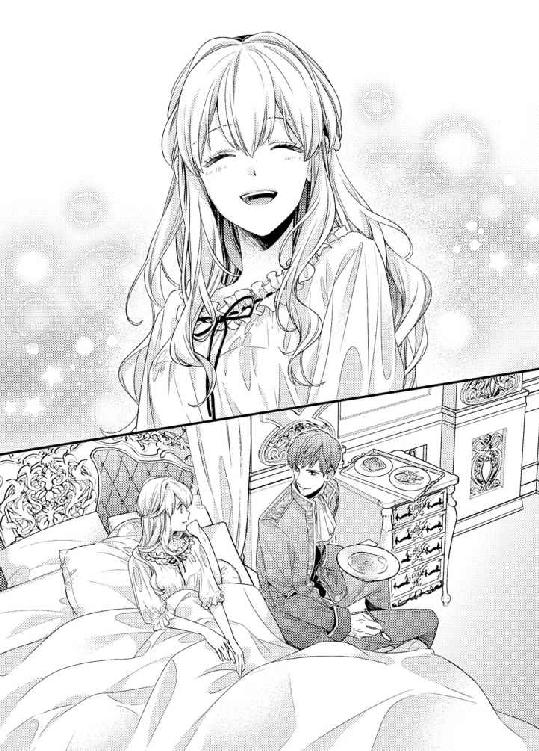

| 国王陛下と初恋プリンセス【SS付】【イラスト付】 (ロイヤルキス文庫) | |
| 伊郷ルウ | |
| 株式会社ジュリアンパブリッシング (2016) | |
この物語はフィクションであり、実在の人物・団体・事件等とは、いっさい関係ありません。
イラスト・緒花
カナルーナ国の第三王女としてこの世に生を受けたヴィオレッタは、これまで国外に出たことがなかった。
そればかりか、厳しい冬から逃れるため保養地にある別荘に赴く以外は、ほとんど王宮内で過ごしてきた。
それが、十七歳の誕生日を前にして、生まれて初めて国境を越える旅に出ることとなった。
ただの旅ではない。目指す友好国のグランドーラ国では、許嫁であるグランドーラ国の王、アレクサンドルが待っているのだ。
「あれが王城かしら......」
何日ものあいだ馬車に揺られてきたヴィオレッタは、窓の外に目を向けて消え入りそうな声でつぶやき、深く息を吐き出す。
一度も会ったことがない男性の妻になる不安と、グランドーラ国の王妃になることの重圧に押し潰されそうになっていた。
柔らかなブロンドをふんわりと結い上げ、豪奢でありながらも清楚な雰囲気があるドレスに身を包み、小さな手に白い手袋をはめている。
大国に嫁ぐ娘のために母親が選んでくれたドレスで、ヴィオレッタの瞳に合わせて薄紫色のサテンとシフォンで仕立てられていた。
透けるように白い肌、穏やかで優しげな瞳、形のよいふっくらとした唇、細く尖ったあご。
きわめて端麗な顔立ちに、王女としての気品と少女らしい可憐さが見て取れる。
「ヴィオレッタさま、お加減がよろしくないのですか？」
馬車の中で向かい合わせに座っている侍女のタマラ・リドレスが、心配そうな表情を浮かべて身を乗り出してきた。
「馬車を止めてジョアンをお呼びしたほうがよろしいのでは？」
「大丈夫よ、少し疲れてしまっただけだから」
ヴィオレッタは力ない笑みを浮かべ、またしても深く息を吐き出す。
今回の旅には、侍女のタマラの他に看護士のジョアン・トーラが同行している。
ヴィオレッタは幼いころから身体が弱いのだ。長旅の途中で体調を崩した場合を考慮し、父王がジョアンを同行させたのだった。
「ですが......」
「本当に大丈夫よ」
ヴィオレッタが柔らかに微笑んで見せると、ようやくタマラは納得したのか、身を引いて椅子に座り直した。
彼女をあまり心配させてはいけない。なにより、どれほど疲れていても、弱音など吐いてはいられないのだ。
もう間もなくグランドーラ国の王城に到着する。カナルーナ国の王女として、グランドーラ国王に嫁ぐのだからと、迎えてくれるアレクサンドルの前では毅然としていた。
王女らしくあること。それが自分の務めだとヴィオレッタは思っている。とはいえ、いくら気持ちを強く持ったところで、不安は募るばかりだ。
アレクサンドルとの婚姻は、ヴィオレッタが生まれて間もなく、両国の友好的な関係を維持する願いを込め、双方の父親によって取り決められた。
結婚相手について母妃から聞かされたのは、ヴィオレッタが十歳になったときだった。
カナルーナ国の王女は十七歳で嫁ぐのが習わしで、結婚相手は父王によって決められる。
王女は異を唱えることが許されず、十七歳の誕生日を迎えると嫁いでいくのだ。
今でこそグランドーラ国の王はアレクサンドルだが、そのころは先の王が健在で、許嫁は王子だと伝えられていた。
ところが、二年前に先のグランドーラ国王が逝去し、王子であったアレクサンドルが王位を継いだのだ。
幼いころからアレクサンドル王子を想像し、彼との結婚生活を思い描いてきたヴィオレッタは、自分が嫁ぐ相手が国王となったことに衝撃を受け、ずっと悩み続けてきた。
夫が王子と国王ではまったく自分の立場が異なってくる。嫁いですぐに妃として一国の王を支えていかなければならないのだ。
健康な身体であれば、なにも不安などなかった。しっかり勉強をして、王妃として相応しい女性となり、アレクサンドルを生涯、支えていくことができただろう。
けれど、病弱な自分にいきなり王妃という大役など務まりそうにない。アレクサンドルに迷惑をかけてしまうのではないだろうかと、心配でたまらないのだ。
（私でいいのかしら......）
白い手袋に包まれた小さな手を握りしめ、遠くに見える王城を物憂げに見つめる。
二十八歳になるアレクサンドルは、元気な跡継ぎを早く産んでくれる健康な妃を必要としているはずだ。
もし、妃に迎える王女が長旅にすら耐えられないひ弱な娘だと知ったら、アレクサンドルはどうするだろうか。
友好の証しとして取り決められた婚姻である以上、意に添わない相手であってもしかたないと諦めるのだろうか。
グランドーラ国とカナルーナ国の未来にかかわる婚姻だというのに、あまりにも荷が重すぎるように思えてならない。
（もうお国には帰ることはできないのだから、しっかりしなければ......）
笑顔で送り出してくれた父王や母妃、そしてカナルーナ国の人々のためにも、立派なグランドーラ国の王妃にならなければと、ヴィオレッタは改めて心に強く誓っていた。
＊＊＊＊＊
「ヴィオレッタ、待っていたよ」
御者が馬車の扉を開けるなり聞こえてきた張りのある男性の声に、狭い車内でタマラの手を借りて身なりを整えていたヴィオレッタは驚きに肩を震わせた。
グランドーラ国の王妃となるカナルーナ国の王女を呼び捨てにできるのは、国王であるアレクサンドル以外にはいない。
「なんてこと......」
アレクサンドル自ら迎えに出てきたのだと知り、ヴィオレッタはにわかに慌てる。
「タマラ、どうしましょう......国王陛下が直々にいらしたようだわ。私、このまま馬車を降りて大丈夫かしら？ きちんとしている？」
王城に到着した直後に、まさかアレクサンドルと対面することになろうとは想像もしていなかった。
まずはどこかの部屋に通され、しばらくアレクサンドルを待つことになるだろうと思っていたのだ。
だから、彼を待つあいだに馬車に揺られて疲れた身体を少しは休ませることができる。そうした思惑も外れてしまった。
自分の到着をアレクサンドルが首を長くして待っていてくれたと考えるのは、あまりにも虫がよすぎるだろう。
たまたま迎えに出る時間があっただけのことだ。そうでなければ、国王が自ら馬車まで足を運ぶとは思えない。
とはいえ、今はそうしたことに囚われている余裕などなかった。一刻も早く馬車を降り、アレクサンドルに挨拶をしなければならないのだ。
「おきれいでございますよ」
結い上げたブロンドを指先で軽く整えてくれたタマラが、不安でいっぱいになっているヴィオレッタをにこやかに見つめてくる。
「本当に大丈夫なのね？」
「ご安心ください」
「あなたの言葉を信じるわ」
胸にあてていた小さな手でタマラの膝をそっと叩き、大きくひとつ息を吐き出してふんわりとしたドレスの裾をたくし上げ、御者が用意してくれた踏み台に足を下ろす。
「お手をどうぞ、我が妃」
黒い手袋に包まれた手が優雅に差し出され、ヴィオレッタは目を瞠って顔を上げる。
すぐ目の前に、華麗な衣装に身を包んだ長身の男性が立っていた。
彼が口にした言葉から、グランドーラ国王、アレクサンドルに間違いないとわかる。
黒い上着の肩には贅沢に金のモールが施され、立ち上がった襟、前立て、袖口には金糸の刺繍があしらわれていた。
同じく黒いスラックスは脇に金のラインが入っていて、艶やかな黒い革の長靴に裾をたくし込んでいる。
幅のある黒い革のベルトを腰に巻いているため、見事な体躯がより引き締まって見えた。
なんとも艶やかな出で立ちに息を呑んだが、それ以上の驚きにヴィオレッタは声もなくただアレクサンドルを見つめる。
こんなにも精悍な顔立ちの男性を見たことがない。短めに整えられた髪はアーモンド色で、瞳も同じ色をしている。
くっきりとした眉、大きく力強い瞳、高くて長い鼻梁、形のよい唇が、すっきりと輪郭の顔の中に、まるで計算されたかのように配置されていた。
「グランドーラ国へようこそ。わたしは君の夫になるアレクサンドルだ、これからはアレックスと呼んでくれ」
さらに手を伸ばしてきたアレクサンドルが、柔らかに目を細める。
ヴィオレッタは彼の穏やかな微笑みに胸がときめく。
幼いころから許嫁であるアレクサンドルのことをあれこれ想像してきたけれど、思い描いていた男性とはまったく違っていた。
見惚れるほど素敵なだけでなく、なんて優しい口調なのだろうか。大国の王だというのに、尊大さの欠片もない。
「あ......ありがとうございます」
高鳴る胸にほんのりと頬を染めたヴィオレッタは、俯き加減で差し出された彼の手を取る。
小さな手をしっかりと握ってくれた彼が、降りるのを優しくエスコートしてくれた。
身内以外の男性と手を取り合うのは生まれて初めてのことで、ますます鼓動が激しくなっていく。
「足元に気をつけて」
注意を促してきたアレクサンドルに小さくうなずき返し、馬車から身を乗り出して踏み台に降り立つ。
「あっ......」
あまりにも眩しい陽差しに目がくらみ、長旅の疲れもあってか足元がふらついてしまう。
「ヴィオレッタ！」
大きな声をあげたアレクサンドルが、咄嗟に腰を抱きかかえてくれた。
けれど、思いのほか疲れが溜まっていたようで、ヴィオレッタは自分の足でしっかりと立つことができないばかりか、そのまま彼の腕の中で気を失いそうになる。
「ルーファスを呼べ」
アレクサンドルが後方に控えている臣下に命じるなり、脱力したヴィオレッタを易々と抱き上げて大股で歩き出す。
「陛下......申し訳ありません」
どうにか意識は留まったものの、不甲斐ない自分が情けなく、紫色の瞳にうっすらと涙が滲んでくる。
初対面だというのに、まだ挨拶も交わしていない。
はじめからこんな醜態を晒してしまったことが、酷く悔やまれてならなかった。
「詫びる必要などない。何日も馬車に揺られてきたのだから、足腰が弱るのもしかたのないこと、しばらく横になって休むといい」
アレクサンドルから優しい言葉をかけられ、ますます自分のひ弱さが身に染みてくる。
きっと心では、彼も呆れていることだろう。
確かに長い旅ではあったけれど、夜は宿で一夜を明かし、一定の間隔で休憩を入れてきた。
なにより、同じ女性であるタマラは疲れた様子もなく、ずっと旅を楽しんでいたのだ。
健康な身体であれば、こんなことにはならなかったのにと思うヴィオレッタは、抱き上げたまま悠然と歩いて行くアレクサンドルの腕の中で、あまりにも情けない自分を嘆く。
そうしているあいだも、ヴィオレッタを抱きかかえている彼は宮殿へと続く広い階段を淡々と上がっていった。
大きく開かれた宮殿の扉を抜け、かなりの速さで廊下を進む彼の後ろから、ぞろぞろと臣下たちが追ってくる。
「それにしても君は軽いな」
唇を噛んでいるヴィオレッタを、不意にアレクサンドルが見つめてくる。
魅惑的なアーモンド色の瞳にまたしても鼓動が速くなり、どうしたらいいかわからなくなってしまう。
「自慢ではないが、グランドーラ国には栄養価が高いだけでなく、美味な食材が揃っているのだ。女性は細くありたいと願うものなのだろうが、君はしっかり食事をして、もう少し体重を増やしたほうがいい」
そう言って笑ったアレクサンドルが正面に向き直る。
彼の視線が逸れただけで、なんだか安堵した。顔を見合わせているのがいやなわけではないのに、見つめられていると恥ずかしくなってしまうのだ。
（どうしてしまったのかしら......）
このような感覚に囚われるのは初めてのことで、とても不思議な気分だった。
とにかく、アレクサンドルは口調が優しいだけでなく、相手を気遣える男性であることはわかった。
歳上の大国の王ということしか知らなかったこともあり、胸に抱えていた不安が少しずつ和らいでいく。
「君はどういった料理が好きなんだ？ わたしたちは普段から肉や魚を多く食べるのだが、君の国では違うのかな？」
再び彼の視線に捕らえられ、ヴィオレッタは困り顔で見返す。
年間を通して気温が低いカナルーナ国は、食が豊かとは言い難い。
冬場に農地が雪に覆われてしまうため、春から夏にかけて収穫した野菜を塩漬けか酢漬けにして保存し、それを料理して食べる。
川魚と肉類は干してから食するのが習わしで、強い香りが苦手なヴィオレッタはほとんど口にしてこなかった。
食が細いから身体が弱いのか、その反対なのかいまだ不明だが、幼いころから食事の時間を楽しみにしたことがないのだ。
「すまない、話をするのも辛そうだな、部屋に急ごう」
返事をしあぐねているのを勘違いしたアレクサンドルが、にわかに足を速める。
絢爛豪華な装飾品に彩られた広い廊下を足早に進み、螺旋階段を軽快に上がっていく。
動きが速いというのに、ヴィオレッタはあまり揺れを感じない。
それだけ彼が逞しいということなのだろうか、まるで揺りかごの中にいるかのような心地よさがあった。
二階の踊り場に着くと、アレクサンドルの前に出てきたひとりの臣下が、急ぎ足で先を歩き始めた。
ヴィオレッタはなにげなく臣下を目で追う。彼が向かう先に、臣下たちとは異なる青い制服に身を包んだ男性が二人立っている。
どうやら、直立不動の姿勢を取っている彼らは、部屋を守る警護兵のようだ。あそこが国王の部屋だろうか。
先回りをした臣下がなにやら警護兵に声をかけると、彼らはすぐに重厚な両開きの扉を開けた。
「温かいスープを用意してくれ」
臣下に声をかけたもののアレクサンドルは足を止めることなく、そのままの勢いで扉が開かれた部屋に入っていった。
艶やかな装飾が施された大理石のマントルピースがあり、そばに長椅子やテーブルが置かれている。
床には緋色の絨毯が敷き詰められ、高い天井から金色に輝くシャンデリアが吊されていた。
家具ばかりか、室内のそこかしこに金がふんだんに使われている。それでも、落ち着いた雰囲気が感じられるのは、風景画が飾られた壁が淡い緑色だからだろう。
「ここは王妃の間、これから君が使う部屋だ。ここは居間で、奥が寝室になっている」
説明してくれた彼が居間を抜け、寝室に入っていく。
こちらの部屋も同じく金の装飾がふんだんに施されているが、壁が穏やかな空の色でやはり落ち着きがあった。
「さあ、横になって」
部屋の中央にある巨大な天蓋付きの寝台に、たいせつな宝物を扱うかのようにヴィオレッタはそっと下ろされる。
身体が埋もれるような柔らかな寝具はとても気持ちよく、すぐにでも横たわりたくなったけれど、まだ挨拶もしていない国王を前にそんな失礼なことはできない。
「あの......私は......」
力を振り絞って立ち上がろうとしたヴィオレッタを、アレクサンドルが笑顔で制してくる。
「遠慮はいらない、とにかく身体を休めるのが先だ」
にこやかに言って上掛けを捲ったが、なにを思ったのか手を止めて眉根を寄せた。
「ドレスのままでは苦しそうだな。すぐに侍女を寄こすからそこで待っていてくれ」
言うなり身を翻した彼が、慌ただしく寝室をあとにする。
「はぁ......」
ひとり残されたヴィオレッタは、寝台に座ったまま小さなため息をもらして肩を落とした。
アレクサンドルはとても親身になってくれているけれど、到着するなり倒れそうになった自分のことを、本当のところはどう思っているのだろうか。
厄介な王女を押しつけてきたものだと、顔にこそ出さないでいるだけで胸の内ではカナルーナ国王を恨んでいるかもしれない。
「暖かなグランドーラ国で過ごせば健康になると、お父さまは言ったけれど......」
笑顔で送り出してくれた父王の言葉が、ふと脳裏を過ぎった。
身体が弱い娘を健康にしようと、父王はあらゆる手を尽くしてくれた。
何人もの医師の診断を受けた、その都度、最善と思われる療法を行ってきたけれど、よくなる傾向は見られなかった。
そうした中、最近になって異国から迎えた医師に、カナルーナ国の気候、食事、水といったものが、生まれながらにして合わないのかもしれないと言われた。
ヴィオレッタは生まれ育った国を否定されたようで悲しい思いをしたけれど、父はその言葉を信じて気候のよいグランドーラ国に嫁がせる決断を下したのだろうか。
もしくは、両国間の取り決めを覆すことができないから、そう言って励ましてくれただけなのだろうか。
国が変われば気候も食生活も変わる。アレクサンドルの王妃として迎えられたヴィオレッタは、温暖なグランドーラ国の気候と食事が合うことを願うしかなさそうだった。
＊＊＊＊＊
「疲れているときは温かいスープを飲み、ゆっくり休むのが一番だとわたしは思っているのだが、異国の料理が君の口に合うかどうかが心配だ」
寝台の脇に置かれた豪奢な椅子に腰かけているアレクサンドルが、寝間着姿でスープを啜っているヴィオレッタに、どうだろうかと言いたげに首を傾げて見つめてくる。
「とても美味しいです」
ヴィオレッタは羞恥をひた隠しにし、懸命に微笑んで見せた。
アレクサンドルが寄こしてくれたタマラに着替えを手伝ってもらい、肌触りのよい絹地で仕立てた寝間着を身に着けている。
窮屈なドレスを脱いだことで、身体はだいぶ楽になった。結い上げていたブロンドも解いてもらい、一本の三つ編みにしてある。
着替えをしたことで気分がよくなったのは確かだが、寝間着姿を男性の目に晒しているのが恥ずかしくてたまらない。
目の前にいるのがいずれ夫となる相手とはいえ、アレクサンドルとは会ったばかりなのだから、心中は穏やかではなかった。
「美味いか？ それはなによりだ」
真っ直ぐに見つめてくるアレクサンドルが、嬉しそうに顔を綻ばせる。
なんとも魅力的な笑顔に、ヴィオレッタはつい目を奪われてしまう。
「陛下、医師のブルックさまがお見えで......」
寝室に姿を見せたタマラが報告を終える前に、ひとりの男性がツカツカと入ってきた。
男性はクリーム色の上着を羽織り、同色のスラックスの裾を黒い長靴にたくし込んでいる。
緩くウェーブがかかっている髪は薄茶色で、上着の襟に触れるほどの長さがあった。
長身だが線が細く、とても美麗な顔立ちをしていて、華やかな雰囲気を纏っている。
医師と言われても違和感しかない。カナルーナ国の医師はみな老齢の男性で、彼のように若い医師はひとりもいなかった。
「遅かったではないか」
男性を振り返ったアレクサンドルが、不機嫌そうに眉根を寄せて椅子から立ち上がる。
「悪かった、ちょっと薬草を採りに行っててね」
驚きの口調で言い返した男性が、悪びれたふうもなく肩をすくめた。
なんとも医師らしくない。国王であるアレクサンドルに対して、なぜ敬意を示さないのだろうか。
信じ難い光景に、ヴィオレッタはスープが入ったボウルを手にしたまま唖然とした。
「言い訳はいいから、早くヴィオレッタを診てやってくれ。馬車から降りるなり気を失いそうになったのだ」
急かすように言って退いたアレクサンドルと入れ替わりに、男性が寝台の脇に立つ。
「はじめまして、ヴィオレッタ姫、僕はルーファス・ブルック」
にっこりとしたルーファスが、ヴィオレッタが持っているスープボウルを取り上げ、後ろから様子を窺っているアレクサンドルに差し出す。
「診察の邪魔だからこれどこかに置いておいて」
「ああ」
素直に受け取ったアレクサンドルが、自らテーブルまで歩いてスープボウルを下ろした。
あり得ないやり取りに、ヴィオレッタは開いた口が塞がらなくなる。
国王にものを言いつけるなど、何人もできないはずだ。それなのに、アレクサンドルは怒りもしないのだから驚くより呆れてしまう。
グランドーラ国では医師は特別扱いなのだろうか。国王に対してなにを言っても許される立場なのだろうか。
（いったい、どうなっているのかしら......）
釈然としない思いでいると、ルーファスが断りもなく寝台の端に腰を下ろしてきた。
幼いころから数え切れないほど医師の診察を受けてきたけれど、寝台に腰かけた者はひとりもいない。
カナルーナ国の医師たちは、たとえ子供であっても王女を敬ってくれたものだ。
「では、診てみましょう」
ルーファスが短く言うなり、上掛けに置いていたヴィオレッタの手を取る。
そのとたんに笑みを浮かべていた彼が表情を一変させた。その真剣な顔つきは、まさに医師そのものだった。
「いつもこんなに冷たい手をしているの？」
彼の口調は変わらず柔らかだが、顔つきは険しい。
「はい......」
小さな声で返事をしたヴィオレッタは、おずおずとルーファスを見返す。
年間を通して、いつも手足は冷たい。けれど、それを指摘されたことは一度もなかった。あえて口にするほど自分の手は冷たいのだろうか。
普段から女性たちは手袋をしているから、手を取り合っても相手の手が冷たいのか温かいのかわからない。
女性はみな同じように冷たい手をしているものだと思っていただけに、ルーファスが言及してきたことに不安を覚えた。
「ちょっと失礼」
ヴィオレッタの手を取ったまま、彼がもういっぽうの手を細い首に伸ばしてくる。
いきなり首に触れられて思わず身を縮めたけれど、彼はまったく気にしたふうもなく、なにかを確かめるように耳の下や首の後ろに揃えた指先を押し当て、すぐに手を引っ込めた。
「あまり血の巡りがよくないのかもしれないな。あとで身体の芯から温まるお茶を持ってこさせるから、それを飲んで休むと......」
「スープではダメなのか？」
ヴィオレッタに言い聞かせるルーファスを遮ったアレクサンドルが、怪訝な顔つきで寝台に歩み寄ってくる。
「スープも悪くないけど、薬茶はより身体を温める効果があるんだ」
「なるほど、ではすぐに用意してくれ」
納得したアレクサンドルが命じると、ルーファスはなにも言わず寝室を足早に出て行った。
退室に際して国王に一礼しないなど考えられない。それなのに、アレクサンドルはそれを許しているのが不思議でならなかった。
「薬茶と違ってスープは栄養があっていいと思うのだが......」
テーブルに行ってスープボウルを取り上げたアレクサンドルが、どうしたものかと言いたげな顔で振り返ってくる。
「もう少し飲んでみるか？」
「はい、いただきます」
気遣いを無下にしたくないヴィオレッタが素直にうなずくと、彼が嬉しそうに笑ってスープボウルを運んできてくれた。
「残してもかまわないから、無理をするな」
「とても美味しいので、飲み干せそうです」
彼の思いやりが嬉しく、笑顔で差し出されたボウルを両手で受け取る。
「本当に無理をしなくていいんだぞ？」
寝台の端に腰を下ろしたアレクサンドルが優雅に長い脚を組み、笑いながらヴィオレッタを見つめてきた。
彼はこの婚姻に納得してくれているのだろうか。しかたなく迎えた妃に、これほど優しくしてくれるものだろうか。なにより、彼は自分が病弱であることを知っているのだろうか。
知りたいことがたくさんあるのに、あまり社交的ではない性格が災いし、訊ねることができないでいた。
「もともと身体が弱いというのに、スープの飲み過ぎで体調を崩したりしたら目も当てられないからな」
冗談めかして目を細めたアレクサンドルを、ヴィオレッタは長い睫を瞬かせて見返す。
「私が病弱であることをご存じだったのですか？」
「父君から伺っている。もうずいぶん前のことだ」
彼はこともなげに答えを返してきた。
まるでなにも気にしていないかのような表情に、激しく戸惑いを覚える。
グランドーラ国の将来を考えれば、たとえ両国の王による取り決めであっても、彼は断ることができたはずだ。
「それなのに私を？ こんなにも頼りない私のようなものが陛下の妃でよろしいのですか？」
もしかしたら、父王は控えめに伝えたのかもしれない。娘は少し身体が弱いのだと、その程度の言い方に留めたのかもしれない。
だから、アレクサンドルは問題ないと判断し、妃に迎えることにした可能性がある。
長旅にも耐えられない虚弱な身体と知った今、彼はどう思っているのだろうか。本当の思いを知りたかった。
「なぜそんなことを聞くんだ？ わたしは王妃として君を歓迎しているというのに」
アレクサンドルが理解し難いといった顔つきで、神妙な面持ちのヴィオレッタを見返してくる。
穏やかな笑みを浮かべ、真っ直ぐに見つめてくる彼が、嘘をついているようには見えない。
それでも、彼の言葉がにわかには信じられなかった。自分を妃として歓迎してくれているとは、とても思えないのだ。
「でも......」
「身体が弱いことを気に病むことはない。グランドーラ国は年間を通して暖かだから、栄養のあるものを食べて太陽をたっぷり浴びていれば、自然と君も健康になっていくとわたしは思っている。だからこそ、早く君が到着しないかと首を長くして待っていたのだ」
目を逸らすことなくしっかりとした口調で言ったアレクサンドルが、ふんわりとした上掛け越しにヴィオレッタの脚を優しく叩いてくる。
真摯な彼の言葉に不意に胸が熱くなった。こんなにも自分のことを考えてくれているのが、嬉しくてたまらない。
「どうした？」
不思議そうな顔をして身を乗り出してきた彼が、溢れそうになった嬉し涙を必死に堪えているヴィオレッタの頬にそっと触れてくる。
大きな掌にすっぽりと片頬が覆われ、伝わってくる温もりに安堵を覚えたヴィオレッタの大きな瞳から堪えきれず涙が溢れた。
「私......ずっと......陛下のお妃には相応しくないと思っていて......」
わななく唇で紡ぐ言葉は、途切れ途切れになってしまう。
「大丈夫だよ、きっと元気になれる」
力強く励ましてくれた彼が、長い指先で優しく額にかかる金髪をかき上げてくれる。
歓迎されるはずがないと思っていたからこそ、彼の気持ちが嬉しくてたまらない。
すべての不安が払拭されたわけではないけれど、病弱と知りながらも妃に迎えてくれたとわかっただけで少し胸の支えが取れた気がした。
「陛下......」
「陛下ではなくアレックスだ」
わざとらしい厳しい口調で呼び方を正してきた彼を、涙に濡れた瞳で真っ直ぐに見返す。
「アレックス......私、早く元気になれるよう努力します」
「そうだな、元気になってわたしと二人でグランドーラ国をよりよい国にしていこう」
「はい」
ぐずり出した鼻を控えめに啜りながらも、しっかりとうなずき返した。
国王であるアレクサンドルを支える、立派な妃になりたい。
自分の到着を心待ちにしてくれていただけでなく、自ら馬車まで出迎えてくれたアレクサンドルのためにも、健康な身体になりたい。
グランドーラ国王との婚姻は、カナルーナ国の王女としての務めであり、逃げ出すことは出きない。
そうとわかっていても、自分の身体のことは自分がよく知っているから、不安はずっと消えなかった。
けれど今は違う。まだ数多の不安は残っているものの、アレクサンドルの思いを知ったヴィオレッタはこれまでになく前向きに考えられるようになっていた。
一夜明け、愛くるしいピンク色のドレスに身を包み、ふんわりと金髪を結い上げたヴィオレッタは、陽差しが柔らかなバルコニーに設けられた朝食の席に着いていた。
栄養豊富なスープに加え、ルーファスが用意してくれた薬茶が効いたようで、かつてない深い眠りに落ちることができ、驚くほど体調のいい朝を向かえられた。
いつもは目が覚めても、なかなか寝台を出ることができないでいた。それなのに、今朝は身体がやけに軽く感じられ、すぐに起き上がることができた。
まず最初に感じたのは部屋の暖かさだ。いつも冷え冷えとしていたカナルーナ国の王宮内に比べ、数段に暖かい。まるで暖炉に火を灯しているかのようだった。
部屋が暖かだから、身仕舞いも苦痛に感じずにすんだ。こんなにも気持ちのいい朝を迎えたのは、初めてかもしれなかった。
「それにしても可愛らしいお顔よねぇ？ まるでお人形さんみたいだわ」
真向かいに座っているグランドーラ国の第二王女であるキャサリンが、大袈裟に言ってヴィオレッタの顔を見つめてくる。
「瞳の色が素敵よね？ 紫色の瞳は女性の憧れだもの」
キャサリンの隣に座る第三王女のフランまでもが、まじまじと顔を眺めてきた。
アレクサンドルの計らいで、ヴィオレッタと歳が近い二人の妹が朝食の席に着いている。
キャサリンは二十二歳、フランは十八歳で、ともに異国の王子に嫁ぐことが決まっているとのことだ。
美人の姉に対して、妹のフランは愛らしい顔立ちをしているが、どちらにも大国の王女らしい気品があった。
大きな楕円形のテーブルにヴィオレッタはアレックスと並んで座り、彼の妹たちが向かい側に並んでいる。
純白のクロスに覆われたテーブルには、朝食とは思えないほどの数の料理が並んでいた。
香ばしい匂いが漂う焼きたてのパン、仄かに甘く香るトウモロコシのスープ、黄色が鮮やかなふわふわのオムレツ、色も形も異なる数種類のチーズ、柔らかく煮込まれた鶏肉、そして、色とりどりの果物が大きな籠に盛られている。
グランドーラ国では昼食を摂る習慣がなく、通常は朝食と晩餐の二食だと教えられた。
そのため、カナルーナ国よりも朝食が始まる時間が遅い。早朝の寒々とした中で食事をするのが辛かったヴィオレッタには、有り難い習慣だった。
これまでは料理に惹かれることなどなかったというのに、さまざまな違いが功を奏しているのか、今はどれもが美味しそうに目に映っていた。
「いやだわ、そんなふうに見つめられると恥ずかしい......」
キャサリンとフランの視線を感じて頬を染めたヴィオレッタは、困り顔で二人を見返す。
生まれつき身体が弱いこともあって、王宮内での華やかな行事を欠席することが多く、ヴィオレッタはあまり人と接する機会がなく育ってきた。
そのため、人見知りをしてしまう傾向にあり、朝食の席で妹を紹介するとアレクサンドルから伝えられたときは、異国の王女と上手く会話ができるだろうかと懸念を抱いた。
けれど、実際に会ってみれば、それは取り越し苦労に終わった。キャサリンとフランは、驚くほど気さくな女性だったのだ。
たとえ歳上であっても姉妹になるのだから、堅苦しい敬語を使う必要はないと早々に言われたこともあり、まるで実の姉たちと言葉を交わしているかのように楽な気持ちになっていた。
「もう、本当に可愛いんだから」
恥じらうヴィオレッタを、キャサリンがからかってくる。
「こんなに若くて可愛い方をお妃に迎えられて、お兄さまは本当に幸せ者ね？」
「ああ、世界で一番の幸せ者だと思っている」
フランの言葉を受けたアレクサンドルが、真顔で答えながら千切ったパンをスープに浸す。
昨日、初めて会ったというのに、どうしてそんなことが言えるのだろうか。本来は嬉しいはずの言葉を、ヴィオレッタは素直に喜べないでいた。
「朝から惚気るなんて、お兄さまも変わったものだわ」
「きっと、可愛いヴィオレッタに、ひと目で胸を射貫かれてしまったのよ」
「そうね、わからないでもないわ」
好き勝手なことを口にしたキャサリンとフランが、顔を見合わせて笑う。
言いたいことが言えるのは、国王である前に兄だからだろう。とても仲がよい兄妹だということが、彼らの会話を聞いているだけで察せられた。
「くだらないことばかり言っていないで、ヴィオレッタが楽しめる話をしたらどうだ？」
妹たちを窘めたアレクサンドルが、膝からナプキンを取り上げて丁寧に口元を拭い、静かに椅子から腰を上げる。
あまりにも急なことに驚き、ヴィオレッタは大きく目を瞠って彼を見上げた。
「間もなく午前の謁見が始まるので、わたしはこれで失礼するよ。君は彼女たちとゆっくり話でもしているといい」
優しく肩に手を置いてきたアレクサンドルが、微笑みながら身を屈めてヴィオレッタの頬にキスをしてくる。
人前でいきなりキスをされて少し慌てたけれど、キャサリンたちは気にしたふうもなくお喋りを続けていた。
「午後にはいったん戻ってくるよ」
にこやかに言った彼の手が肩から離れ、ヴィオレッタは見送ろうと腰を浮かせたのだが、すぐさま制されてしまう。
「そのままでいい」
「でも......」
国王に対して失礼にあたるような気がし、困惑顔で見返す。
「王妃は堂々と座って国王を送り出せばいいんだ」
アレックスは再度、ヴィオレッタの肩に軽く手を置いて笑顔でうなずくと、テーブルを離れていった。
母妃はどういった場合でも父王に対して礼儀正しかった。傍から見ていると、恭しい態度は他人行儀にも感じられたけれど、王妃とはそうしたものなのだと思っていた。
けれど、王妃としての振る舞いひとつにしても、グランドーラ国では違っているようだ。
この国の王妃となるのだから、アレクサンドルの言葉に従うべきなのだろうと思い、腰かけたまま見送った。
「ねえ、ヴィオレッタ」
遠ざかるアレクサンドルの後ろ姿を見つめていたヴィオレッタは、フランの呼びかけに笑顔で振り返る。
「お兄さまの執務が終わるまで、これといってすることがないのでしょう？ このあとも私たちと一緒に過ごさない？」
どうかしらと首を傾げたフランが、果物が盛られた籠から葡萄を房ごと取り上げ、摘まんだ一粒を口にポンと放り入れた。
葡萄を頬張るフランの美味しそうな顔につられ、ヴィオレッタも葡萄に手を伸ばす。
カナルーナ国では生の葡萄がテーブルに載るのは稀で、多くは干して乾燥させたものか、シロップに漬けたものだった。
「ひとりでどうしようかと思っていたので、ご一緒させていただけると嬉しいわ」
笑顔で答え、葡萄を一粒、口に含む。
噛んだ途端に甘い果汁が口いっぱいに広がり、幸せな気分になる。
「なんて甘いのかしら......」
「美味しい葡萄でしょう？ グランドーラ国の名産のひとつなのよ」
「こんなに甘い葡萄を食べるのは初めてだわ」
教えてくれたキャサリンと顔を合わせつつ、ヴィオレッタは二粒目を口に入れた。
「ヴィオレッタはあまり身体が丈夫ではないのでしょう？ お国ではなにをして過ごしていたの？」
そう言って葡萄を口にポンと入れたフランが、興味深げな視線を向けてくる。
「外に出ることはなくて、読書や刺繍をしていることが多かったわ。とくに刺繍をするのが楽しくて、いつも夢中になってしまうの」
いったん葡萄をテーブルに下ろし、果汁に濡れた唇をナプキンで拭う。
幼いころからちょっとしたことで熱を出してしまうヴィオレッタは、娘の身体を気遣う父王から外で遊ぶことを禁じられ、一日のほとんどをサロンか自室で大人しく過ごしてきた。
室内でできることは限られていて、哀れんだ母妃が刺繍を教えてくれたのだが、それがことのほか楽しく、いつしかのめり込むようになっていた。
手がけた作品は数知れず、気がつけば自室は自ら刺繍を施した小物で溢れかえっていた。
「あら、ヴィオレッタは刺繍が得意なの？ 羨ましいわ。私は刺繍がなかなか上手にならなくて止めてしまったの。でも、絵を描くのは得意なのよ」
フランが最後に自慢げな笑みを浮かべると、話に耳を傾けていたキャサリンがそれを見て肩を落とした。
「私は刺繍も絵も苦手なのよね」
「でも、キャサリンはピアノがとても上手だわ」
フランに言われたキャサリンが、少し恥ずかしそうに笑う。
自ら絵が得意だと口にしたフランと違い、キャサリンは奥ゆかしいところがあるようだ。
「私、絵は描いたことがないし、ピアノも弾けないわ」
「それぞれ得意なものが違うのでは、一緒に楽しめないわね」
キャサリンは思案顔で遠くを見つめたが、ふと名案でも浮かんだかのように、フランがテーブルに身を乗り出してきた。
「お互いに教え合うというのはどうかしら？ 私たちはヴィオレッタに刺繍を習って、キャサリンはピアノ、私は絵を教えるというのはどう？」
「素敵！ 絵を描いたり、ピアノを弾いたりできるようになったらとても楽しそう」
思わず弾んだ声をあげたヴィオレッタは、小さな手を握り合わせて彼女たち見つめる。
ピアノは習ったことがあるけれど、音楽教師と馬が合わずに少しも上達しないまま止めてしまった。
カナルーナ国では女性は絵筆を取るものではないといった慣習があり、絵を描いてみようと思ったことすらなかった。
身近な存在となったキャサリンとフランからピアノと絵を習うことができたら、きっと楽しい時間が過ごせそうだ。
「フラン、いいことを思いついたわね」
キャサリンから感心の面持ちを向けられたフランが、嬉しそうに顔を綻ばせる。
「今日はなにをしましょうか？」
「そうねぇ......せっかくだからヴィオレッタに刺繍を教わらない？」
「いいわね、サロンでお喋りをしながら刺繍をしましょう」
「お茶も用意してね」
「もちろんよ」
「ヴィオレッタ、それでいいかしら？」
しばし盛り上がっていた姉妹が、同時に視線を向けてきた。
まさか最初に先生役を担うことになるとは思っていなかったけれど、唯一、自信を持って得意と言えるのが刺繍であるヴィオレッタは、迷わずうなずき返す。
「ええ、私でよければ喜んで」
「決まりね」
満足そうに笑ったフランと顔を見合わせ、ヴィオレッタも微笑む。
グランドーラ国に到着したときは不安でいっぱいだったというのに、優しいアレクサンドルや明るく好意的なキャサリンとフランによって、どんどん気持ちが前向きになっていく。
以前は長時間の会話にすら疲れを感じていたのに、暖かな陽差しに包まれながら彼女たちともっと話をしたくてしかたがない。
昨日、気を失いそうになったのが嘘のように、身体の内側から力が漲ってくるような感じがしている。
たった一晩で、こんなにも気力が湧いてくるものなのだろうか。ひどく不思議な感覚ではあるけれど、よい兆候であることは間違いない。
ひ弱な身体が負い目であり、王妃という重責は務まらないと諦めてきたヴィオレッタは、グランドーラ国で過ごすことによって自分が変われるかもしれないと思い始めていた。
＊＊＊＊＊
刺繍をするためにサロンへと足を運んできたヴィオレッタは、窓際に置かれたテーブルを義妹たちと囲んでいた。
グランドーラ国は、陽差しのある屋外はもちろんのこと、王宮内のすべてが暖かな空気に包まれていた。
これまでは、いつも暖炉に近い席で読書や刺繍をしてきたけれど、サロンの窓際は同じくらいに暖かい。
硝子越しにサロンに差し込んでくる陽が、暖炉と変わらないほど暖かいことに驚く。
同じ室内でも窓際はことのほか明るく、居心地がいいだけでなく細かい作業をするには打ってつけの場所だった。
「なんて素敵なのかしら」
広いテーブルに並べた紐付きのポーチを取り上げたフランが、全面に施された刺繍を驚きの顔で眺める。
ヴィオレッタは花嫁道具に刺繍の道具だけでなく、手がけた作品を幾つか忍ばせてきた。その話を聞いた彼女たちが見たいと言い出し、タマラに刺繍の道具と一緒に作品も運んできてもらったのだ。
「いったいどれだけの刺繍糸を使っているの？」
フランと並んで腰かけているキャサリンが、ヴィオレッタに興味深げな視線を向けてきた。
ポーチには赤い薔薇の刺繍が施してある。花びらに陰影をつけるため、何種類もの赤い糸を使っているのだ。
「こういったところは色の濃さが違う糸を使っているから、まるで本当の薔薇のように見えるのよね？」
ポーチを手にしているフランが、幾重にも巻いている花びらの部分を指先で指し示す。
「ええ、少しずつ薄い色の糸に替えて刺していくのよ」
ヴィオレッタがにこやかに答えると、フランとキャサリンが驚きとも感心ともつかない表情を浮かべて顔を見合わせた。
「私たちにもできるかしら？」
「もちろんよ。糸を通した針を刺していくだけなのだから、なにも難しいことはないわ」
不安げな顔をしているフランに、明るく笑って見せる。
糸を取り替えるのは面倒であり、完成までにはかなり時間はかかるけれど、作業としては単純だ。
なにより、針を刺していくほどに少しずつ図柄が浮き上がってくるのが楽しく、刺繍をはじめるといつも時間を忘れてしまうくらい夢中になった。
「はじめは簡単な図柄にしましょう。色の違う小花を散らすだけでも、とても可愛く仕上がるのよ」
ヴィオレッタは隣の椅子に置いてある刺繍の道具を入れた大きな籐の籠から、一冊の薄い本を取り出す。
刺繍をはじめるにあたり母妃から贈られた図案集で、さまざまな種類の花や鳥が色つきで紹介されている。
本を贈られてから十年が過ぎた。掲載されている図案のすべてを、ヴィオレッタはすでに刺繍していて、いまでは本も必要なくなっている。
それでも、大好きな母妃からの贈られた本は宝物であり、いつも籐の籠に入れてあった。
「この中から、刺繍をしてみたいお花を選んで」
小花が載っている頁を開き、向かいに座っているキャサリンたちに本を差し出す。
「あら、可愛い」
「これなんてどうかしら？」
さっそく本を手に取った彼女たちが、顔を寄せ合って図案を選びはじめた。
ヴィオレッタは少し身を乗り出し、彼女たちが見ている本を覗き込む。
母妃と一緒に刺繍をしていたのは、ほんのいっときのことだ。二人の姉たちはあまり刺繍に興味がなく、ひとり黙々と針を刺してきた。
刺繍をしているのは楽しく、寂しいと思ったことはない。それに、とくにお喋りが好きなわけでもないから、話し相手がほしいと思ったこともなかった。
それでも、こうしてキャサリンとフランを前にして刺繍の話をしていると、楽しみを分かち合う喜びを感じる。
彼女たちと顔を合わせてからまだいくらも経っていないというのに、ずっと一緒に過ごしてきたかのような親しみを覚えていた。
「このすみれも綺麗よね？」
「せっかくだから挑戦してみてはどう？ フランは絵が上手だから刺繍もすぐに上達しそうな気がするのだけど？」
本から顔を上げたキャサリンがどうかしらと言いたげに、ヴィオレッタを見つめてくる。
「私もそう思っていたの。絵が得意なフランなら、私にはとてもできないような独創的な刺繍をしそうだわ」
「独創的な刺繍って？」
「そうねぇ......これまで誰も見たことがない図柄の刺繍とかかしら」
自ら独創的と口にしたものの、いい例えが思い浮かばなかったヴィオレッタが抽象的な答えを返すと、フランが呆れ気味に笑った。
「誰も見たことがない図柄が想像できないわ」
「ごめんなさい、私も想像できないわ」
フランと顔を見合わせ、悪戯っぽく笑う。
「楽しそうだな？」
ふとサロンに響いたアレクサンドルの声に、三人が揃って顔を上げる。
「お兄さま、ずいぶん早いお戻りね？」
声をかけたフランは、あまり兄の登場を歓迎していないような感じがした。
「たまたま早く終わっただけだ、そのように邪険にするな」
そう言って苦笑いを浮かべたアレクサンドルが、颯爽とした足取りでテーブルに歩み寄ってくる。
ヴィオレッタは反射的に腰を浮かせたが、朝食の席で彼から言われたことをふと思い出し、きちんと椅子に座り直した。
「なにをしていたのだ？」
テーブルに並んでいるポーチや広げた本を目にしたアレクサンドルが、解せない顔つきでヴィオレッタたちを見てくる。
「私たちヴィオレッタに刺繍を教えていただくことにしたのよ」
「刺繍を習う？」
アレクサンドルがさらに眉根を寄せた。
「ご覧になって、ここにあるのはみなヴィオレッタが刺繍をしたものなのよ」
フランがテーブルの上で、大袈裟に手を広げて見せる。
ひとしきりテーブルを見つめたアレクサンドルが、身を屈めて大きなポーチを取り上げ、施されている刺繍を丹念に眺めた。
刺繍は人に見せるためではなく、自分の楽しみとして続けてきたから、こんなにも時間をかけて眺められると、わけもなく恥ずかしくなってくる。
「これほど繊細で美しい刺繍を見るのは初めてだ。ヴィオレッタは素晴らしい才能の持ち主なのだな」
「そんな......私は身体が弱くてあまり外に出ることができなかったので、部屋で刺繍ばかりしていただけで......」
アレクサンドルから真顔で称賛され、羞恥が募って頬が赤く染まった。
たとえ世辞であっても、誉められるのは嬉しい。
恥ずかしさと嬉しさがない交ぜになり、言葉を続けられなくなったヴィオレッタは、照れ隠しに意味もなくドレスにあしらわれたレースの飾りを指先で弄る。
「本当に上手でしょう？ それで、ヴィオレッタに刺繍の手ほどきをお願いしたのよ」
「そのお礼に私たちはピアノと絵を教えて差し上げるの」
次々に言ったフランとキャサリンが、笑って顔を見合わせた。
「それぞれに教え合うというのも、なかなか楽しそうだな？」
手にしていたポーチを静かにテーブルへと戻したアレクサンドルが、和らいだ笑みを浮かべて見下ろしてくる。
「はい、私は刺繍くらいしか取り柄がないので、お二人からピアノと絵を教わるのをとても楽しみにしているのです」
頬を赤くしている恥ずかしさから、ヴィオレッタは上目遣いで答えを返した。
アレクサンドルの妻になるのだから、もっと積極的に言葉を交わしたい思いがある。それなのに、早くも仲よくなった義妹たちと話をするようにいかないのがもどかしい。
「わたしもヴィオレッタと一緒になにかしたいのだが......」
立ったまま腕組みをしているアレクサンドルが、思案顔でヴィオレッタを見つめてきた。
「えっ？」
理解し難い言葉に、大きな瞳を瞬かせて彼を見上げる。
一緒になにかしたいとは、どういうことだろうか。彼の意図がよくわからなかった。
「乗馬はさすがに無理か......そうだ、私と一緒にビリヤードをやらないか？」
いったんは口を噤んだものの、アレクサンドルがふと閃いたように笑う。
いきなりビリヤードに誘われ、激しく戸惑う。
ビリヤードという遊びがあることは知っている。けれど、それは男性たちが興じる遊びだと聞かされていた。
グランドーラ国では、女性もビリヤードをするのだろうか。ふとそんな疑問が脳裏を過ぎったとき、キャサリンが呆れ気味に口を挟んできた。
「お兄さま、ビリヤードなど若い女性に勧めるものではなくてよ」
「なるほど」
アレクサンドルが腕組みをしたままうなずく。
キャサリンの口ぶりから、やはりこの国では男性限定の遊びではないようだ。
とはいえ、ルールすら知らないのに無理強いをされたらどうしようと思っていたヴィオレッタは、止めに入ってくれたキャサリンに心の中で感謝する。
「そうだわ、ダンスはどうかしら？」
悩んでいる兄に助け船を出したフランが、ヴィオレッタに視線を移してきた。
「お兄さまはダンスがとてもお上手なのよ」
「でも、私......すぐ疲れてしまうからあまり舞踏会に出たことがなくて......」
せっかく勧めてくれたフランに申し訳ない思いから、言葉尻を濁して視線を手元に落とす。
カナルーナ国では、日常的に舞踏会が催されていた。王族の子供たちは幼いころからダンスを習い、十五歳になると舞踏会の出席を許された。
王女として生まれたヴィオレッタも、当然のようにダンスの練習をさせられたため、調べに合わせて踊ることはできる。
ただ、すぐに息切れを起こしてしまうため、緩やかな曲調に合わせて踊るのが精一杯で、すぐ壁の花になってしまっていた。
舞踏会は楽しむための催しだ。それなのに、身体が弱いせいで周りに迷惑をかけてしまう。
男性から誘われても断らなければならないから舞踏会を楽しむことができず、いつしか母妃の許しを得て欠席するようになっていた。
だからといって、ダンスが嫌いなわけではない。健康な身体をしていたならば、何曲でも踊り続けたいのにと、いつもそう思っていた。
「そうか、ならばなにかべつのものを......」
アレクサンドルは深く理由を問うこともなく、他に二人で楽しめることを考え始める。
そうまでして一緒になにかをしたいと思ってくれるのが嬉しく、頑張って彼の気持ちに応えたくなってきた。
「あの......」
控えめな声をもらしたヴィオレッタを、彼が身を屈めて顔を覗き込んでくる。
「なんだい？」
間近に迫った魅惑的な笑みが浮かぶ顔を、はにかんで見返す。
妹のフランが太鼓判を押したのだから、アレクサンドルはさぞかし華麗に踊るのだろう。
どんなリードをしてくれるのか、想像しただけで胸が弾む。
たくさん踊ることは無理でも、彼と手を取り合ってダンスをしたい。そうした思いがにわかに湧き上がってきた。
「あの......少しだけならダンスでも......」
「大丈夫なのか？」
おずおずと見上げたヴィオレッタを、彼が眉根を寄せて見つめてくる。
その表情から、身体のことを心配しているのだと容易に察せられた。
「はい、一晩、ゆっくりさせていただいて気分もよくなっているので」
しっかりとうなずき、明るい笑みを浮かべて見せる。
アレクサンドルをこれ以上、悩ませたくない。なにより、彼と一曲でいいから踊ってみたいのだ。
「では、晩餐のあとキャサリンの伴奏で一曲、お相手を願おう」
「はい」
彼の嬉しそうな笑顔に安堵したヴィオレッタは、微笑んでうなずき返した。
先の王が決めた婚姻だから、しかたなく自分を妃として迎えてくれたのだと、ひねくれた考えを抱いたことを恥ずかしく思う。
身体を気遣ってくれながらも、ともに楽しもうとしてくれる彼のために、早く健康になりたいという思いが強まってきた。
「お兄さま、ずっとここにいらっしゃるおつもり？」
急にフランが尖った声をあげ、ヴィオレッタと見つめ合っていたアレクサンドルが眉根を寄せて妹に視線を移す。
「いてはいけないのか？」
「お兄さまがいらっしゃると、お喋りがしづらいわ」
「好きに話をしたらいいだろう？」
「女性だけでお話をしたいこともあるのよ」
アレクサンドルに向けて遠慮のない言葉を口にするのは、フランにとっては今も国王というよりは兄という意識が強くあるからだろう。
傍から見ていると冷や冷やしてしまうが、アレクサンドルの穏やかな表情から、こうしたやり取りが日常的に行われているのだということがわかる。
「邪魔者は早く消えろということか」
フランから邪険にされた彼が、わざとらしく肩を落とす。
「なにを話すのも自由だが、よけいなことをヴィオレッタに吹き込まないでくれよ」
「心に留めておくわ」
「まったく......」
にっこりとしたフランを見たアレクサンドルが、ため息交じりにつぶやいてヴィオレッタに向き直る。
「わたしは部屋に戻っているよ」
身を屈めて頬にくちづけてきた彼に、笑顔でうなずき返す。
「はい」
身体を起こしてひとしきり見つめてきたアレクサンドルがその場で背を向け、きびきびとした足取りでテーブルを離れていく。
（アレックスと踊れるんだわ......）
ダンスの時間が待ち遠しくてならないヴィオレッタは、胸を高鳴らせながら遠ざかっていく後ろ姿を見つめていた。
「早く刺繍の図柄を選びましょうよ」
「ねえ、ヴィオレッタのお勧めはどれかしら？」
義妹たちの声にふと我に返り、急いで前に向き直る。
「そうねぇ......」
椅子に浅く腰かけたまま身を乗り出し、彼女たちと一緒になって広げた図案集を覗き込む。
グランドーラ国に来るまでは不安しかなかったというのに、今はそれが嘘のように感じられている。
そう感じているのは、優しく包容力に溢れたアレクサンドル、そして、気さくで陽気なキャサリンとフランのおかげだろう。
まだまだアレクサンドルの王妃に相応しい女性とは言い難いけれど、焦ることなく一歩ずつ前に進んでいこうという気持ちに変わっている。
「これはどうかしら？ 私が最初に刺繍をしたお花よ」
薄紅色のコスモスを指さし、満面の笑みで義妹たちを見つめるヴィオレッタは、これまでになく朗らかになっていた。
＊＊＊＊＊
そこかしこに惜しげもなく金を施した絢爛豪華な音楽室で、アレクサンドルとヴィオレッタは手を取り合い、キャサリンが奏でるピアノの調べに乗せ踊っていた。
音楽室にいるのは、ピアノの脇で楽譜を捲っているフランを含めてたったの四人。とても舞踏会とは言い難いけれど、内輪の集まりだからこそヴィオレッタは気兼ねなく踊れた。
（なんて上手なのかしら......）
アレクサンドルと見つめ合って踊るヴィオレッタのブロンドが、眩しいほどに煌めくシャンデリアの灯りにより輝きを増している。
演目は緩やかなワルツだ。アレクサンドルの流れるようなリードに合わせ、丁寧にステップを踏んでいく。
彼はけっして大きな動きをしない。ヴィオレッタの身体に負担がかからないよう、常に気を遣ってくれている。
それでも、ステップを踏むたびに長いドレスの裾が優雅に靡き、ときに風を孕んで大きく膨らむ。
あまりにも軽やかなリードに、まるで蝶にでもなってしまったかのような気分になっていた。
「これで三曲目になるが、本当に大丈夫なのかい？」
ステップを踏みながら訊ねてきたアレクサンドルが、心配げに見つめてくる。
一曲だけのつもりでいたのに、彼と踊るのが楽しくて、心地よくて、気がつけばもう三曲目に入っていた。
確かに少し息は弾んでいるけれど、苦しいというほどの酷さはなく、まだまだ踊ることができそうな気がしている。
これまでの自分からは考えられない。以前は一曲で息苦しさを覚えていたというのに、いったいどうしてしまったのだろうか。
「ええ、まだ平気」
心配はいらないと微笑み返したのに、彼は小さく首を振った。
「いきなり無理をするのはよくないから、今夜はこれでおしまいにしよう」
言い聞かせるような彼の口調に、残念に思いつつも素直にうなずき返す。
「はい」
すでに三曲目も終盤に差しかかっている。これで終わりだと思うと心残りだったけれど、自分の身体を気遣ってくれている彼の気持ちを大事にしたかったのだ。
「あっ......」
大きく弧を描くようにステップを踏んだ彼が、いきなり半身を傾ける。
逞しい彼の腕に支えられた身体が深く沈み込み、顔が仰向けになったヴィオレッタは思わず目を瞠った。と同時に、脚をすくわれて抱き上げられる。
「アレックス？」
「楽しかったよ」
目を瞠ったままのヴィオレッタを見て笑った彼が、少し紅潮している頬にそっとくちづけてきた。
自分だけでなく、彼も楽しんでくれたことが嬉しく、ヴィオレッタの顔が自然に綻ぶ。
母国ではいつもひとりで過ごしてきた。姉や妹は刺繍など退屈だと言って相手にしてくれなかったし、自らの意思で舞踏会の出席を拒んできたのだから、そうなってしまうのは当然のことだった。
それなのに、まだグランドーラ国に来て間もないというのに、義妹たちと一緒に刺繍をし、アレクサンドルとダンスまでしたのだから驚きだ。
父王が決めた結婚相手が、予想を遙かに超えた優しくて素敵なアレクサンドルでよかったと心から思えた。
「ありがとう、キャサリン、今夜はこれくらいにしておく」
ピアノを演奏してくれたキャサリンに礼を言ったアレクサンドルが、ヴィオレッタをそっと床に下ろしてくれる。
そのまま腰に手を回され、小さく胸が弾んだ。身を密着させて踊っていたときは、恥ずかしさを感じることもなかった。それが、当たり前のように腰を抱き寄せられると、妙に彼を意識してしまう。
「あら、もう終わりなの？」
艶やかな黒いピアノに身を寄せていたフランが、物足りなさそうな顔つきでアレクサンドルを見上げる。
「またヴィオレッタが倒れたりしたら困るからな」
立て続けに踊ったことを、彼はかなり気にしているようだ。
昨日の出来事を考えれば、彼が慎重になるのもしかたない。
ただ、気遣いはとても嬉しいけれど、自分だけがダンスを楽しんで終わりにするのでは、義妹たちに申し訳ない気がした。
「せっかくだから、私も踊りたいわ」
フランがピアノを離れ、アレクサンドルの前に出てくる。
どう切り出せばいいのだろうかと考えあぐねていたヴィオレッタは、遠慮なくものを言える積極的なフランに羨ましさを覚えた。
「ヴィオレッタ、お兄さまと踊っていいかしら？」
「ええ、もちろんよ」
笑顔で答えたヴィオレッタを、アレクサンドルが迷い顔で見下ろしてくる。
彼はすぐにでも部屋に戻って、自分を休ませてくれるつもりでいたのかもしれなかった。
「私はそこに座ってお二人のダンスを拝見させていただきます」
にこやかに言って、ピアノの脇に置かれている長椅子に目を向ける。
「横にならなくて大丈夫か？」
「ええ」
心配性のアレクサンドルを笑顔で安心させ、自ら長椅子に歩み寄って腰かけた。
「キャサリン、マズルカをお願い」
リクエストをしたフランがアレクサンドルに向けて優雅に片手を差し出すと、ピアノに向き直ったキャサリンがさっそく演奏を始める。
心配そうに見つめてくるアレクサンドルにヴィオレッタが小さくうなずき返すと、ようやく心が決まったのかのように彼はフランの手を取った。
顔を見合わせた彼らが、さっそく軽やかなマズルカの調べに合わせ、軽快にステップを踏んでいく。
流れるように踊る淑やかなワルツとは異なり、小刻みにステップを踏むマズルカは明るく楽しいダンスだ。
一曲の途中で息切れしてしまうのが目に見えているから、ヴィオレッタは一度も踊ったことがない。
「私もいつかマズルカを踊れるようになりたい......」
ヴィオレッタは調べに合わせて白い手袋に包まれた手を叩きながら、楽しそうに踊るアレクサンドルとフランに羨望の眼差しを向けていた。
＊＊＊＊＊
湯浴みをすませて寝間着に着替えたヴィオレッタは、王妃の間の寝室でタマラに長いブロンドを梳かしてもらっていた。
賑やかな朝食で始まった一日が、ようやく終わろうとしている。これほど充実した一日がかつてあっただろうか。
「夜遅くまでダンスをなさって、お疲れになったのではありませんか？」
椅子に腰かけているヴィオレッタの背後に立つタマラが、鏡越しに話しかけてきた。
鏡に映る彼女の表情は、とても心配そうだ。
今までは、晩餐を終えて湯浴みをすますとすぐ床に就いていたのだから、長いあいだ身の世話をしてくれてきた彼女はさぞかし心配しているに違いない。
「それが、少しも疲れていないの」
ヴィオレッタが明るい声をあげると、タマラがパッと目を瞠った。
「まあ、お珍しい」
「私も驚いているのよ。だって、三曲も踊ったというのに、踊り足りないと思ってしまったんですもの」
座ったまま身体を捩って後ろを向き、椅子の背に両手を預けてタマラを見上げる。
「いったい、どうしたことでしょう？ ヴィオレッタさまがダンスをなさってお疲れにならないなど、わたくしには信じられません」
「でも、本当なのよ」
髪を梳く手を止めて唖然としているタマラに、ヴィオレッタは満面の笑みを向けた。
たった一晩で、なぜこんなにも変わってしまったのか、自分でもわからない。
ただひとつ言えるのは、今日一日をかつてないほど楽しく過ごし、満ち足りた思いでいっぱいになっているということだった。
「昨日はどうなることかと思いましたが、お元気になられて安心いたしました」
「ありがとう」
タマラと向き合って話をしていたヴィオレッタは、不意に響いたノックの音に思わず肩を窄めて扉を振り返った。
寝室には幾つか扉がある。ノックされたのは、国王の間と繋がる特別な扉だった。
その扉を使えるのは国王と王妃に限られており、ノックをしたのはアレクサンドルに他ならない。
あまりにも急な訪問に慌てふためくヴィオレッタをよそに、タマラが足早に扉へ向かう。
「ヴィオレッタ、まだ起きているか？」
扉を開けたタマラが恭しく頭を下げると、艶やかな紺色の絹地で仕立てたガウンを纏ったアレクサンドルが寝室に入ってきた。
「どうなさったのですか？」
寝間着になにも羽織っていないヴィオレッタは立ち上がるのを躊躇い、椅子に腰かけたまま彼を迎える。
「少し話をしようかと思ったのだが、迷惑だったか？」
「いえ、どうぞ」
アレクサンドルに微笑み、タマラに手振りで寝台の上にあるガウンを求めた。
俯き加減で寝台に歩み寄った彼女が薄紅色のガウンを取り上げ、ヴィオレッタのもとにやってくる。
「ありがとう、もう下がっていいわ」
椅子から腰を上げたヴィオレッタにガウンを羽織らせてくれたタマラが、静々と寝室を出て行く。
「元気そうだな？」
「はい、おかげさまで」
長椅子に腰かけたアレクサンドルに手招かれ、ガウンの腰紐を結びながら歩み寄る。
互いに寝間着にガウンを羽織った姿のせいか、妙に気恥ずかしい。
それに、いずれ夫になるとはいえまだ結婚していないのだから、寝室で二人きりなることに戸惑いを覚える。
「座って」
アレクサンドルに促されたヴィオレッタが素直に座ると、すぐさま腰を抱き寄せてきた。
鼓動が一気に跳ね上がり、細い身体が強張る。
（どうしましょう......）
居たたまれないほどの羞恥に囚われ、肩を窄めたまま項垂れた。
薄い布越しに伝わってくる掌の温もりが、やけに生々しく感じられ、直に触れられているような錯覚を起こす。
アレクサンドルは話がしたくて訪ねてきただけ。他に理由などあるはずがない。そう思いたいのだけれど、どうしてもよからぬことを考えてしまう。
「あの......ごめんなさい、なんだか私、急に眠くなってしまって......」
腰に回されている彼の手からそっと逃れ、静かに長椅子から立ち上がった。
彼の妃になる覚悟は決まっているし、寝室での作法もきちんと学んだ。
妃の務めは、夫と身体を繋げ跡継ぎを産むことだ。普段は別の寝室で寝起きをしていても、夫からの要求には応えなければいけないと教えられた。
教えを守らなければいけないことは理解している。けれど、アレクサンドルと初めて会ったのは昨日のことだ。彼がどれほど素敵で優しくても、まだ心の準備が整っていない。
「では、寝台に連れて行ってあげよう」
彼が長椅子から腰を上げるなり、ヴィオレッタを抱き上げてきた。
その拍子にガウンと寝間着の裾が捲れ上がり、剥き出しになったほっそりした白い足の先から、室内履きが脱げ落ちる。
「ひとりで歩けますから......」
己の足を目にしたとたんただならない羞恥に襲われ、顔を真っ赤にしてアレクサンドルの腕の中で足掻く。
「わたしの妃になるというのに、この程度のことを恥ずかしがっていてどうする？」
「でも......」
笑っている彼の顔をまともに見ることができず、赤く染まった顔を逸らす。
彼は観念したと思ったのか、抱き上げたままヴィオレッタを寝台へと運んでいく。
すでに上掛けが捲られている寝台に横たえられ、ようやく安堵したヴィオレッタは手早くガウンと寝間着の裾を整えながら礼を言う。
「ありがとうございました」
これで部屋に戻ってくれると思ったのだが、なぜか彼は寝台から離れようとしない。
そればかりか、その場でガウンの腰紐を解き始めた。
彼がなにをしようとしているのかわからないほど、ヴィオレッタは鈍感ではない。
寝台に入ってくるつもりなのだ。拒めない立場にあるとはいえ、睦み合うのはいくらなんでもまだ早すぎる。
「もう少し向こうに寄ってくれないか？」
寝台に片膝を載せてきたアレクサンドルを、困惑も露わに見返す。
「アレックス......あの......」
「夫婦はともに寝るものだぞ？」
それくらいのことも知らないのかと言いたげに、身を乗り出した彼が笑いながらヴィオレッタの顔を覗き込んできた。
「でも、まだ私たちは......」
「正式な夫婦ではないと？」
アーモンド色の瞳でじっと見つめられ、羞恥が募ったヴィオレッタは伏し目がちにうなずき返す。
「確かにまだ夫婦ではないが、わたしにとって君はもう妃も同じ、ともに寝るくらいはいいだろう？」
そう言いながらも答えを待つことなく隣に横たわってきた彼に、両腕にすっぽりと抱き込まれる。
「あっ......」
逞しい胸に薄い布に包まれた乳房を押し潰され、鼓動が勢いを増していく。
「神の前で愛を誓い合うまでは、君になにもしないと約束する」
耳元で優しく言ってくれたけれど、抱きしめられているから安心するどころではない。
恥ずかしさと緊張がない交ぜになり、ヴィオレッタはただただ身を硬くしていた。
「わたしのヴィオレッタ......」
息を触れ合わせるように囁いた彼が、そのまま唇を重ねてくる。
「うん......」
生まれて初めてのくちづけに、一瞬にして頭の中が白くなった。
幼いころは許嫁であるアレクサンドルとのくちづけに憧れたけれど、自分は妃として望まれていないかもしれないと考えるようになってからは、甘い夢を見ることもなくなっていた。
だからこそ、もう妃と同じと言ってくれた彼からくちづけられた喜びは大きい。
「ふ......っ」
唇を甘噛みされ、舌先で舐められ、くすぐったさに身を捩った。
触れ合っている唇が、やけに熱く感じられる。そこから熱が広がり、蕩けていってしまいそうだ。
重ね合う唇、共鳴する互いの鼓動、薄い布越しに伝わってくる温もりのすべてが心地よくてたまらない。
「あふっ......」
息継ぎのしかたがわからず、苦しくなり始めたところで唇が遠ざかり、ヴィオレッタは思いきり息を吐き出していた。
「ゆっくりおやすみ、可愛いヴィオレッタ」
そう言って唇を啄んできたアレクサンドルが、優しくヴィオレッタの頭を抱き込んでくる。
「おやすみなさい」
なにもしないと約束してくれた彼の言葉を信じて素直に身を任せると、彼が長い指で柔らかなブロンドを弄び始めた。
本当は眠気など感じていなかったのに、アレクサンドルの温もりに包まれているヴィオレッタは、いつしか深い眠りに落ちていた。
ヴィオレッタがグランドーラ国の王宮で暮らし始めてから五日目となり、暖かな気候と、食材が豊富な料理が身体に合っているのか、日々を健やかに過ごしていた。
アレクサンドルとの挙式はまだずいぶん先のことだが、王妃として相応しい女性に早くなりたいといった思いから、ヴィオレッタはグランドーラ国のことを自ら学んでいる。
先日、専属の教育係が任命され、国の歴史、しきたり、作法を習う時間が設けられたのだが、それだけでは物足らず、アレクサンドルの許しを得て書庫の書物を読み始めたのだ。
今日も朝食を終えるなり書庫に足を運んできた。あまり人が出入りしない書庫は、当初、空気が少し湿っていたが、窓を開けて風を通すと快適になった。
とはいえ、シャンデリアがない書庫は薄暗く、テーブルに置いた燭台に火を灯していなければ読書はできないため、いつもタマラに用意してもらっている。
高い背もたれがついた重厚な椅子に腰かけているヴィオレッタは、明るいクリーム色のレースをたっぷりとあしらったドレスに身を包み、ふんわりと結い上げたブロンドに色鮮やかな羽の髪飾りを留めていた。
誰もいない静かな書庫で、背筋を真っ直ぐに伸ばし、テーブルに積み上げた書物を無心に読み耽る。
もっともっとグランドーラ国のことが知りたい。どんなことでも答えられるくらい、この国について詳しくなりたかった。
グランドーラ国は気候がよく、豊かな土壌が広がっている。古くから林業、農業、酪農などが盛んに行われてきた。
対してカナルーナ国は、金、銀、宝石が豊富に眠る鉱山に囲まれているが、農作物の生産量は他国に頼らざるをえず、代々の国王は交易を重要視してきた。
グランドーラ国はそうした交易によって深く絆が結ばれた国であり、長い年月にわたって友好的な関係を保ってきている。
そうした両国の関係については、カナルーナ国にいたころから知っていたが、実際にどのような作物を育て、家畜を飼育しているのかといった詳しい内情までは知らない。
グランドーラ国の王妃となるヴィオレッタには、学ぶべきことは山ほどあるのだ。
「あら、綺麗なお花......」
なにげなく手にした書物の表紙に描かれた花に目を留めたヴィオレッタは、さっそく扉を開いてみる。
「アマリリスというのね......この国のお花だなんて素敵」
グランドーラ国には国が定めた花があることを知り、驚きと感心の入り交じった面持ちで書物に目を通していく。
母国ではほとんど観賞用の花は栽培されていない。寒い土地では、あまり上手く育たないからだ。そのため、花と言えば野山にさく小さな花くらいのものだった。
カナルーナ国で国花が定められていないのは、花を愛でる習慣がないからだろうか。
「アマリリスの生産に国が力を注いでいるのね」
よくよく思い起こしてみれば、確かにアマリリスは王宮のそこかしこに飾られていた。
艶やかで美しい花がたくさんあるのだなと感心していたけれど、グランドーラ国の国花ともなると思いは違ってくる。
アマリリスについて詳しくなりたい。産地を訪れれば、アマリリスで埋め尽くされた光景を見ることができるかもしれない。
是非とも行ってみたい。そんな思いがヴィオレッタの胸の内に沸々と湧き上がってくる。
「どこで育てているのかしら？」
読書が好きなヴィオレッタは、書物でさまざまな花を見てきた。そして、たくさんの花を刺繍してきた。けれど、本物の花を目にしたのは、ほんのひと握りにすぎないのだ。
これまでは、すぐに疲れてしまうこともあって、自ら王宮の外に出てなにかをしたいと思ったことがない。
それなのに、グランドーラ国に来てからは驚くほど積極的に考えられるようになっていた。
包容力があって優しいアレクサンドル、陽気で行動的なキャサリンとフランに影響されたのかもしれない。
「ヴィオレッタ、いつまで読書をしているの？ もうお茶の時間よ」
読書に夢中になっていたヴィオレッタは、書庫に響いたフランの声にハッと我に返った。
艶やかなドレス姿の義妹たちが、静かな足取りで歩み寄ってくる。
「一日中、こんな暗いところにいたのでは、身体によくなくてよ」
二人から窘められ、俯き加減で書物を閉じて椅子から立ち上がった。
「ごめんなさい......つい......」
一緒にお茶をする約束をしているわけではないけれど、姿を見せないから心配して探しに来てくれたのだろう。
彼女たちの気遣いを嬉しく思うと同時に、よけいな心配をさせてしまったことで申し訳なさが募ってくる。
「ヴィオレッタは本当に読書が好きなのね？ 今日はなにを読んでいたの？」
項垂れている姿を哀れんだのか、すぐに話題を変えてくれたキャサリンが、積み上げた書物に目を向けた。
一番上に載っているのは、アマリリスが描かれた書物だ。産地に行ってみたいと思ったばかりのヴィオレッタは、さっそく書物を取り上げる。
「このお花はどこで育てているの？ 私、行ってみたいのだけれど......」
表紙に描かれているアマリリスを指さす。
「飾られているアマリリスではなく、育てている場所に行ってみたいということ？」
「ええ、アマリリスの生産に国が力を注いでいるのでしょう？ 生産地に行ってみたいの」
解せない顔で見返してきたキャサリンに、ヴィオレッタは弾んだ声で答えた。
「確か、ここから一番近いのは、タバス農園だったと思うけど......」
「近いといっても、馬車で二時間くらいかかるわ」
「ピクニックをかねて訪ねてみるというのはどう？」
どうやらフランは、一緒に行ってくれるつもりでいるらしい。
三人で馬車に乗って遠出をしたら、きっと楽しいに違いない。
「あとは兄さま次第ね」
喜んだのもつかの間、キャサリンが難しい顔つきで肩をすくめた。
「王宮が管理している農園を見学するのだから、お兄さまもダメとは言わないと思うわ。ヴィオレッタ、連れて行ってもらうようお兄さまに頼んでちょうだい」
「えっ、私から？」
フランはこともなげに言ったが、ヴィオレッタはにわかに尻込みをする。
三人で行くものとばかり思っていたが、どうやらそうではなかったようだ。
アレクサンドルがいれば楽しさは倍増する。けれど、日々、執務に追われている彼に、ピクニックがてら農園を訪ねてみたいと言い出すのは気が引ける。
「ヴィオレッタがお願いすれば、きっとすぐに許してくださるわ」
「でも、アレックスは執務で忙しいから......」
「なにを言っているの？ 王宮が管理する農園を視察するのも王の務めよ」
フランにきっぱりとした口調で返され、父王を思い出してなるほどと納得した。
国王は王妃を伴い、さまざまな場所を視察で訪れるものだ。
国の隅々まで把握しておくことが王の務めなのだと、父王はよく口にしていた。
自分はいずれ王妃となる身だ。国を知るために、できるだけ多くの場所を訪れたい。
きっとアレクサンドルはそうした思いを理解してくれるはずだ。
「わかったわ、私からアレックスにお願いしてみる」
「それがいいわ、国王と王妃の視察を農園で働く人々も喜んでくれるはずよ」
柔らかに微笑んだキャサリンに、ヴィオレッタは小さな手を胸に添えてうなずき返す。
最初はピクニック気分で訪れるつもりだったけれど、彼女たちの言葉に意識が変わった。
毎日が王妃として勉強なのだ。もっと、もっと積極的にならなければと、改めて強く思う。
「さあ、お茶にしましょう」
「ええ」
フランの陽気な声に、揃って書庫をあとにするヴィオレッタは、いつになく足取りが弾んでいた。
＊＊＊＊＊
執務を終えたアレクサンドルが戻り、二人きりでの晩餐を始めたヴィオレッタは、供される料理を残すことなく食べている。
ヴィオレッタが健康になるよう、彼が毎晩、特別な料理を用意してくれているため、感謝の気持ちを込めてしっかり食べようと心に決めたのだ。
食は健康に直結している。きちんと食事をすれば元気になるものだと、カナルーナ国の医師たちから助言を受けてきた。
けれど、健康になりたいといった思いがあっても、料理が口に合わないのだから、食べるに食べられなかった。
だから、自他ともに認める小食だったのに、今は毎日の食事が楽しくてしかたない。
皿を目の前に置かれただけで、香りのよさに食欲が湧いてくる。口に入れれば、旨味を感じて顔が綻ぶ。
料理が美味しいと思える喜びを、ヴィオレッタはグランドーラ国に来て初めて知ったのだ。
「兎の肉が気に入ったようだな？」
正面に座るアレクサンドルが、ナイフとフォークを持つ手を止めてヴィオレッタを見つめてくる。
二人きりの晩餐ではあるが、大きなテーブルに向かい合わせで腰かけているため、二人のあいだにはかなりの距離があった。
それでも、給仕人が粛々と仕事を務める食堂は静けさに包まれていて、とくに大きな声を出す必要もない。
「ええ、はじめは兎を食べるなんて驚きだったけれど、柔らかな肉でとても美味しいわ」
にこやかに答えたヴィオレッタは、甘酸っぱいソースがかかった兎の肉を小さく切って口に運ぶ。
気がつけば、アレクサンドルに対する言葉遣いが変わっていた。ともに過ごす時間が増えるほどに心が通い合い、ぎこちなさが抜けていったようだ。
「精がつく食事をしているせいか、少し顔色がよくなってきたのではないか？」
「タマラにも言われたのだけれど、自分ではよくわからないの」
「そんなものか？ 初めて会ったときとは別人のようだぞ」
解せないと笑った彼が、グラスの華奢な脚を摘まみ、赤ワインを喉に流し込む。
彼は大いに食べ、美味しそうにワインを何杯も呑む。
その姿が頼もしくもあり、また、羨ましくもある。
食事は残さず食べられるようになったが、いまだその量は少ない。彼の皿にも同じ料理が盛られているが、量は倍以上あるのだ。
たくさん食べられるようになり、ワインも呑めるようになれば、いまより食事の時間が楽しくなるような気がしていた。
「陛下、ブルック医師がお見えです」
給仕長の報告にアレクサンドルが軽くうなずき、ナプキンで口元を丁寧に拭う。
急なことに、ヴィオレッタは食事の手を止める。すると、初めて会ったときと同じ、白い服を纏ったルーファスが姿を見せた。
「覚えてるか？ 医師のルーファスだ」
「ええ」
アレクサンドルに問われ、小さくうなずき返す。
「ごきげんよう、ヴィオレッタ姫。あの日以来、お声がかからないところをみると、体調はいいみたいだね？」
アレクサンドルの横に立ったルーファスが、テーブル越しに顔をじっと見つめてくる。
相変わらず言葉遣いが馴れ馴れしい。
彼が用意してくれた薬茶を飲んだことで、あの日はよく眠ることができた。たぶん、優秀な医師なのだろうが、どうにも馴染めない。
「ヴィオレッタもだいぶ食欲が出てきたようだし、この食事もまんざらではないようだ」
「まんざらって、失礼だな。僕が知識と知恵を駆使して考えた献立をなんだと思ってるの？」
すぐに言い返したルーファスが、不機嫌な顔でアレクサンドルを見下ろす。
口調は柔らかでも、相変わらず物言いはぞんざいだ。
ルーファスの言動には国王を敬う気持ちなど、これっぽっちも感じられない。
理解し難い思いを抱いたまま見つめていると、ヴィオレッタに視線を移してきたアレクサンドルが、テーブルに置かれた皿を指さしてきた。
「この料理はルーファスの指示で作らせているんだ。彼はこう見えても、医師としては優秀なんだよ」
「なんかいちいち癇に障る言い方をするなぁ、ヴィオレッタ姫もそう思わない？」
アレクサンドルに教えられて感心したのも束の間、不満を露わにしたルーファスから同意を求められたヴィオレッタは、困り顔で彼を見返す。
「あの......私は......」
アレクサンドルは皮肉めいた言い方をしているようにも感じられるが、相手を不機嫌にするほど辛辣な物言いでもないように思えた。
なにより、王妃となる自分の立場を考えたら、ルーファスに同意することなどできない。
ひとしきりヴィオレッタを見つめていたルーファスも、同意を得られないとわかるとすぐに視線をアレクサンドルに戻した。
「で、僕はなぜ呼ばれたのかな？」
ルーファスに文句を言われながらも笑みを絶やさなかったアレクサンドルの表情が、理由を問われたとたんに引き締まる。
「ああ、そうだ......」
アレクサンドルが真っ直ぐにヴィオレッタを見つめてきた。
「ヴィオレッタ、彼は君の専属医師だ。具合が悪いときや、なにか身体のことで相談があったら、いつでも彼を呼ぶといい」
あまりにも突然のことに、ヴィオレッタは唖然と彼らを見返す。
医師としては優秀なのだろうが、ルーファスにはあまりよい印象を持っていない。
よりによって、なぜアレクサンドルは彼を自分の専属医師に選んだのだろうか。
専属の医師をつけてくれたことには感謝するけれど、正直なところ別の誰かにしてほしかったと思ってしまった。
「いまさらその紹介をするために、僕を呼んだわけ？」
「紹介し損ねていたことを、ふと思い出したんだよ」
文句が多いと言いたげに、アレクサンドルがルーファスを睨みつける。
それにしても彼らは仲がよさそうだ。
国王と対等に言い合えるルーファスが、ただの医師であるわけがない。二人のやり取りを見ていると、どうしても関係が気になってしまう。
「ヴィオレッタ姫の専属医師ルーファスは、いつ何時であってもご用命とあらば飛んで参りますのでご安心を」
姿勢を正して真面目くさった顔をしたルーファスが、仰々しい言い方をして気障なお辞儀をしてきた。
あまりにもわざとらしい挨拶に呆れてしまったが、その思いを胸に留めたヴィオレッタは笑顔を浮かべて礼を述べる。
「ありがとうございます」
「どういたしまして」
軽々しい返事をしてきたルーファスが、すぐさま視線をアレクサンドルに戻す。
「もういいのかな？」
ぶっきらぼうな物言いに、アレクサンドルが苦々しく笑う。
「ああ、下がっていい」
「では、失礼」
アレクサンドルの許可を得たルーファスが、ヴィオレッタに一礼して食堂をあとにする。
最後まで国王に対する礼儀知らずな態度は変わらなかった。
呆れてものが言えないとはこのことだろう。
専属医師であるルーファスとは、これから接する機会が多くなりそうだ。それを考えただけで、ヴィオレッタは気が重くなってきた。
「はぁ......」
思わずもれたため息に、アレクサンドルが笑い声をもらした。
「ルーファスとは馬が合わなそうだな？」
テーブルに両の肘を乗せて手を組み合わせ、その上にあごを置いた彼が笑いながら見つめてくる。
ルーファスに対する思いを顔に出したつもりはなかったけれど、アレクサンドルには容易に見て取れてしまったようだ。
「馬が合わないというか、ルーファスさんのような雰囲気の方と、これまでお目にかかったことがなくて」
「礼儀知らずな男に見えるだろうが、あいつはわたしの幼馴染みで、もう長い付き合いになるんだ」
「幼馴染み？」
思いがけない言葉に、ヴィオレッタは長い睫を瞬かせる。
「ああ、最初に会ったのが三つか四つのころだから、二十五年くらいの付き合いになるな」
「まあ......」
あまりの驚きにポカンと口が開いた。
自分の年齢よりも、彼らの付き合いは長いのだ。
まさかそうした間柄にあるとは思いも寄らなかった。
「わたしが即位したあともあのままなものだから、周りはとやかく言っているようだが、いまさら堅苦しくされてもわたしが困る」
「とても仲がよいのね？」
ようやくルーファスの無礼な態度に納得したヴィオレッタは、笑っているアレクサンドルに微笑み返す。
「互いに信頼しているからな」
彼の言葉には深みが感じられた。
アレクサンドルの周りにいた人々は、彼が即位すると同時に態度を一変させたはずだ。
国王と王子では、地位に雲泥の差がある。尊敬の念を持って敬い、けっして口答えなどしない。国王とは絶対的な存在なのだ。
それまで近しかった人間までが、国王になったとたん一歩も二歩も下がってしまう。
その地位に就いてみなければ真実など理解できないが、きっと寂しさもあるだろう。
そうだとするならば、アレクサンドルにとって態度を変えずに接してくるルーファスは、嬉しい存在なのかもしれない。
ルーファスにしても、若くして王座に即いたアレクサンドルの気持ちを察し、あえて友人として接しているとも考えられる。
礼儀を知らないのではなく、友人を思いやる気持ちが強いからこそ、国王に対して無礼な態度を貫いているのだ。
「私も仲よくなれるよう頑張ってみるわ」
上辺だけを見て判断したことを恥じたヴィオレッタは、ルーファスと親しくなりたいと心から思っていた。
「口が悪いだけで、医師としては優秀だし、なにより気のいい男だ。君ならすぐに打ち解けられるだろう」
「ええ、きっと」
アレクサンドルの言葉を信じ、満面の笑みでうなずき返す。
「そろそろ食後の菓子が出てくるころだな」
「今夜はなにが頂けるのかしら？ とても楽しみなの」
つい先ほど、給仕係が肉料理の皿を下げにきた。
間もなく、食後の菓子が運ばれてくる。
毎夜、異なる菓子が出てくるため、ヴィオレッタは待ち遠しくてしかたない。
母国では菓子の甘さが苦手で手を出さずにいたけれど、グランドーラ国ではなにを供されても残さず食べられるようになってきている。
「本当に食欲が旺盛になったな？」
「どれも美味しいんですもの」
感心の面持ちで見つめてくるアレクサンドルに、ヴィオレッタは弾んだ声で答えた。
「それはなによりだ」
彼が嬉しそうに目を細める。
早く健康な身体になることを望んでいる彼のためにも、しっかり食事をしなければと改めて思う。
母国ではさまざまな療法を試みたけれど、長い年月を経てもなにひとつ改善されなかった。
それが、この国にやってきたとたんに体調がよくなり始めたのだから、気候や食事が合っているとしか考えられない。
とはいえ、無理や焦りは禁物だ。気負わずに自分の身体と向き合いながら、彼とともに食事を楽しもうとヴィオレッタは思っていた。
＊＊＊＊＊
晩餐を終えたヴィオレッタは、アレクサンドルに誘われるまま国王の間で寛いでいた。
就寝までの時間を、毎夜、こうして彼と二人きりで過ごしている。
挙式までなにもしないと約束してくれた彼は、同じ寝台で眠ることもなくなった。
時間がくればヴィオレッタは王妃の間に戻り、湯浴みをすませて床に就くのが日課になっている。
「そういえば、今日も書庫に籠もっていたそうだな？」
長椅子に座って脚を組み、肘掛けに片腕を預けているアレクサンドルが、心配げな表情を浮かべてヴィオレッタを見つめてきた。
「読みたい書物がたくさんあって、つい時間を忘れてしまうの」
誰かが報告したのだろうかと思いながらも、彼の隣に腰かけているヴィオレッタは正直に答えて小さく肩をすくめる。
「国の歴史を学ぶのはいいことだが、昼間から書庫に籠もっていたのではもったいない。せめて明るいうちは外に出て陽を浴びたらどうだ？」
彼は命令ではなく、提案してきた。
いつでも身体を気遣ってくれる彼の気持ちが嬉しく、読書もほどほどにしなければと思う。
と同時に、ヴィオレッタは義妹たちとの会話を思い出した。
「アレックス、ひとつお願いがあるの」
身体を斜めにして彼と向き合い、神妙な面持ちで見つめる。
「なんだい？」
アレクサンドルは少し驚いたような顔をしていた。
早くも願いごとをするなど、ずうずうしすぎただろうか。彼の表情を見て言うのを躊躇ってしまったが、どうにか勇気を振り絞る。
「私、アマリリス農園を訪ねてみたいの」
「アマリリス農園？」
「グランドーラ国では生産に力を入れている国花なのでしょう？ 私、王妃になるのだからアマリリスをよく知っておきたいと思って......だから栽培しているところを是非とも見学したいの」
ヴィオレッタが身を乗り出して理由を説明すると、一瞬にして彼の表情が和らいだ。
「最も近い農園でも馬車で二時間ほどかかるが、身体は大丈夫そうなのか？」
「連れて行ってくださるの？」
「君の身体次第だ」
声を弾ませたヴィオレッタを、アレクサンドルがしみじみと見つめ返してくる。
少しでも体調に不安があるのならば、願いごとなどしたりしない。
今は二時間くらいであれば、馬車での移動も堪えられる自信があった。
「私は平気よ。こちらで暮らし始めてからというもの、すこぶる気分がいいんですもの」
「そうか、では天候のよい日を選んで一緒に視察に行こう」
「ありがとう、アレックス」
ヴィオレッタは嬉しさのあまり、前のめりになって彼の手を取る。
「とても楽しみだわ」
満面の笑みで彼の手を握りしめると、不意に腰を抱き寄せられた。
「あっ......」
いきなり広い胸に抱かれ、驚きに頬が赤く染まる。
「君は本当に可愛い」
アーモンド色の瞳で見つめてきた彼が、唇を重ねてきた。
「んっ」
背を反らしてくちづけを交わす。
もう幾度となく唇を重ねているのに、そのたびに鼓動が跳ね上がる。
甘くて濃厚なくちづけに、身も心も蕩けそうになった。
「はふ......っ」
思いのほか早く唇が遠ざかり、ヴィオレッタは物足りなさを覚えてしまう。
もっとくちづけ合っていたい。今日にかぎって、どうしてこんなにも短いくちづけで終えてしまったのだろう。
「そろそろ湯浴みの時間だな」
くちづけを早々に終えてしまったのは、湯浴みをしたかったからなのだと気づき、そっと彼の腕から逃れて立ち上がる。
「それでは、私は部屋に戻るわね」
にこやかに伝えて長椅子を離れようとすると、急にアレクサンドルが手を握ってきた。
「今夜は一緒に湯浴みをしよう」
「えっ？」
大きく瞳を瞠って彼を振り返る。
「ルーファスが薬湯を用意してくれているんだ。さあ、おいで」
手を握り合ったまま立ち上がった彼に、湯殿へと導かれていく。
そういえば、晩餐を終えて国王の間に戻る途中、臣下からなにやらアレクサンドルに伝達があった。あれが、薬湯についての報告だったのだろうか。
とはいえ、いきなり二人で湯浴みをするなど考えられないヴィオレッタは、その場で足を踏ん張った。
「アレックスと一緒になんて無理......」
「間もなく夫婦になるのだから、恥ずかしがってばかりいてはいけないな」
真顔で諭してきた彼に有無を言わさず抱き上げられ、湯殿へと運ばれていく。
もちろん必死に抗ったけれど、逞しい彼に容易く阻止されてしまい、逃げ出すことは叶わなかった。
ヴィオレッタを抱き上げたまま器用に湯殿の扉を開け、彼は悠々と身仕舞いするために設けられた控えの間に入っていく。
王妃の間の湯殿よりも遙かに広く豪華な造りだ。床、壁、天井のすべてに大理石が使われ、いたるところに金があしらわれていた。
「さあ、ドレスを脱がしてあげよう」
床に下ろされたヴィオレッタは彼の言葉に羞恥が募り、この期に及んで逃げ出そうと試みたけれど、すぐさま行く手を大きな身体で塞がられてしまう。
「往生際が悪いな」
楽しげに笑ったアレクサンドルが、ヴィオレッタのドレスを脱がしにかかる。
背中にびっしりと並んでいるボタンをひとつ、また、ひとつと外され、デコルテが不意に緩んだ。
「きゃっ......」
慌てて両手で胸を押さえ、ドレスがずり落ちるのを防ぐ。
けれど、そうしているあいだにスカートのボタンが外され、すとんと床に落ちた。
シルクの下着が露わになり、恥ずかしさのあまりしゃがみ込む。
「本当に恥ずかしがり屋だな。後ろを向いていてやるから、自分で脱いで先に湯に浸かってくれ」
おずおずと顔を起こすと、彼が言葉どおり背を向けた。
今なら逃げることができそうだ。けれど、こんなはしたない姿で湯殿を出て行くわけにはいかない。
もう諦めるしかないと感じたヴィオレッタは、恥を忍んで自らドレスを脱ぎ始めた。
身に着けているものすべてを脱ぎ捨て、湯気が立ち込める湯殿に向かい、そそくさと湯に身を沈める。
明るい控えの間とはことなり、火を灯した蝋燭がいくつかあるだけの湯殿は薄暗く、少しだけ羞恥が薄らいだ。
そして、なによりも救いだったのは、ルーファスが用意してくれた薬湯が薄く色づいていることだった。
普段の透明な湯では丸見えになっている身体も、今はほとんど見えない状態になっていた。
「アレックスとは夫婦になるのだもの......」
恥ずかしがってはいけないと、ヴィオレッタは自らに強く言い聞かせる。
いずれ一糸纏わぬ姿で抱き合い、身体を繋げることになるのだ。一緒に湯浴みをするくらいで逃げ出したくなっているようでは、この先が思いやられてしまう。
「薬湯はどうだ？」
背後から聞こえてきたアレクサンドルの声に、思わずビクッと身体を震わせた。
湯浴みをするのだから、とうぜん彼も裸になっている。
自分の裸体を見られるのは恥ずかしいけれど、彼のを見るほうがもっと恥ずかしい。
「とてもいい香りがするわ」
正面を向いたまま答えると、湯船に入ってきた彼が並んで湯に浸かった。
彼の動きに湯が大きく波打ち、深く身を沈めていたヴィオレッタの身体が持って行かれる。
「あっ......」
湯の中で倒れそうになったところを、すぐに差し伸べられた彼の手に救われた。
「こちらへ」
掴まれた腕を引っ張られ、湯の中で投げ出している彼の脚の上に載せられる。
尻に感じた異物はなんであるかを察したとたん、反射的に身が強張った。
「約束は守るから安心しろ」
そう言われてしまったら、抗うこともできない。
おとなしく彼の脚に尻を載せると、片腕で優しく腹を抱え込まれた。
自然と背が彼の胸にぶつかる。前を向いているから、彼の裸体を目にすることはない。それに、こうして寄りかかっていれば彼に見られることもない。
「確かにいい香りだ。薬茶と同じで、身体を芯から温める効果があるらしい」
「香りがいいだけでなく、いつもの湯より肌当たりが柔らかな気がするわ」
腕を前に伸ばしたヴィオレッタは、掌ですくった湯をかけ、肌の上で指を滑らせる。
「どれ......」
短く言ったアレクサンドルが、腹を抱えていた手をヴィオレッタの脚に落としてきた。
そのまま内腿を撫でられ、慌てて彼の手を押さえる。
「アレックス？」
「約束は守ると言っただろう？」
肩にあごを載せてきた彼は、信じていないことを不満に思っているのかもしれなかった。
疑いたくはないけれど、いきなり腿を撫でられたりしたらじっとなどしていられない。
「でも......」
「身体は繋げない、それは約束する」
「それなら......」
「そうは言っても、せっかくこうしてともに湯浴みをしているのだから、なにもせずにいたのではつまらない。異なる方法で楽しむことにしよう」
理解し難い言葉を連ねたアレクサンドルが、内腿から腹へと撫で上げてきた手で、湯から少し浮き出ている乳房を捕らえてくる。
「やっ......」
大きな手で鷲掴みにされ、にわかに恐怖を覚えて硬直した。
「なかなか手触りがいいな」
吐息混じりの声で耳をくすぐり、鷲掴みにした乳房を揺すってくる。
ヴィオレッタはますます身体を硬くしたけれど、彼はかまうことなく揺さぶり続けた。
柔らかな乳房に指が食い込み、痛みを覚えて声をあげる。
「やめて......」
羞恥と恐怖がない交ぜになっていた。
普段はドレスに覆われている乳房を、彼に掴まれているのが恥ずかしい。いったいなにをするつもりでいるのか、それがわからないから怖い。
「この先にあるのは得も言われぬ快楽だ。それを味わわせてやるから、おとなしく身を任せているといい」
「でも......」
ヴィオレッタは前を向いたまま項垂れる。
カナルーナ国で受けた情操教育では、身体を繋げ合うことで快楽が生まれると習った。
けれど、彼は身体は繋げないと約束してくれている。他の方法と言われても想像がつかないから不安が消えない。
「愛するヴィオレッタ、君に怖い思いなどさせない」
甘く囁き、耳朶を甘噛みした唇が、頬を啄み始める。
「んっ......」
不意のくちづけに、ヴィオレッタの身体から一瞬にして力が抜けた。
アレクサンドルはまるで柔らかさを確かめるかのように唇を何度も啄み、舌先で丹念に形をなぞってくる。
「ん......ふっ」
こそばゆい感覚に肌がざわつき、肩が小刻みに震えた。
深く唇を重ねてきた彼が歯列をこじ開け、舌を差し入れてくる。
幾度もくちづけてきたヴィオレッタは、躊躇うことなく舌を絡め合う。
「ふ......んんっ」
絡めた舌をきつく吸われ、胸の内側が熱く疼いた。
さらには音が立つほど強く吸い上げられ、全身に甘い痺れが広がっていく。
温かな湯の中で繰り返されるくちづけに、まるで霞でもかかったかのように頭の中がぼんやりとしてきた。
「ふんっ......」
ふと解けた舌が、口内を悪戯に動き回る。
執拗に舐め回され、またしても胸の深いところが疼いた。
同時に揺さぶられている乳房までが、甘く痺れていく。
くちづけを交わしていて、こんな感覚を覚えたのは初めてのことだ。
いったい、自分の身体はどうなってしまったのだろうか。ただくちづけ合い、乳房を揺すられているだけだというのに、いつもとはまったく違う感じがした。
「あふっ......」
「このままでは逆上せてしまいそうだから寝所に行くぞ」
唐突にくちづけを終えたアレクサンドルが、ヴィオレッタを抱きかかえて湯から上がる。
湯が滴るのもかまわず湯殿を出た彼が、ヴィオレッタを抱き上げたまま寝室に向かう。
長いくちづけに脱力しているから、裸で抱かれているというのに為すがままだ。
「顔が赤いが、大丈夫か？」
寝台に横たわらせたヴィオレッタを、心配げに見下ろしてくる。
「少し火照ってしまっただけ......」
大丈夫と小さく首を横に振ると、隣に横たわってきたアレクサンドルに背中越しに抱きしめられた。
湯に濡れている肌が触れ合い、互いに裸でいることを思い出したヴィオレッタは、急激な羞恥に襲われ肩を窄める。
「アレックス......」
尻に触れている彼の屹立がやけに熱く感じられ、逃れたいのに身動きが取れなくなった。
「ヴィオレッタ、君の可愛い声が聞きたい」
ねっとりと絡みついてくる甘い囁きに、湯に濡れた肌が震える。
首筋の柔らかな肌を幾度も啄まれ、緩やかに痺れが広がっていく。
「んふっ......」
味わうように肌の上で舌を這わせながら、片手をヴィオレッタの内腿に滑り落としてくる。
大きな手で柔らかに柔肌を撫でられ、こそばゆさに身を捩った。
「んっ」
膝からゆっくりと這い上がってきた手が、腿の付け根でぴたりと止まり、秘所を隠す茂みを探ってくる。
「やっ......」
自分でも触れたことがない場所を弄られ、咄嗟に彼の手を掴んだ。
けれど、制止を無視した彼は、こともあろうに細い繁みを摘まんで引っ張った。
「ひゃ......ん」
あまりの驚きに変な声をあげたヴィオレッタは、彼の手から逃れようと腰を振って足掻く。
「暴れるな」
笑いながら窘めてきた彼が、今度は指先でさわさわと繁みを撫で回してくる。
「はっ、ん......」
ふと繁みの中に滑り込んできた指先が、目に見えない場所で大胆に動き出し、かつて味わったことがない蕩けるような感覚が湧き上がってきた。
「ああぁ......あっ......やぁ......」
触れられている場所から駆け抜けていく甘い痺れに、自分のものとは思えない甘声がひっきりなしにもれてくる。
「ふ......あ、あっ......ん、く......」
すんなりと伸びた脚と、寝台に落としている手が激しく震えた。
自分の身体でなにが起きているか、さっぱりわからないでいる。
彼の指先に捕らえられているそこが、ただならない熱を持って激しく脈打っていた。
「わたしの指に意識を向けるんだ。そうすれば、もっと気持ちよくなれるぞ」
アレクサンドルからあやすように言われて意識を向ける。すると、普段は繁みに覆われている無垢な花芽を、彼が丹念に愛撫し始めた。
「ふ......んんっ......あっ、あっ......」
意識を向けたことで感度が高まったのか、全身を震わせる強烈な痺れに、ヴィオレッタは鼻にかかった甘声をもらしながら身悶える。
執拗な花芽への愛撫に震えが止まらない。絶え間なく湧き上がってくる痺れが全身をくまなく満たし、勝手に腰が揺らめいた。
「初めての快感は強すぎるか？」
心配しているというよりは、楽しんでいるような声音に、わからないと首を横に振る。
これが快感──こんな感覚を味わえるなんて知らなかった。
彼の指で秘所を弄られるのはひどく恥ずかしいのに、なぜか手を離してほしくないと思ってしまう。この感覚をずっと味わっていたいと思ってしまう。
「気持ちよさそうな顔をしている」
楽しげな声が、耳をかすめていく。
彼の吐息に耳たぶをくすぐられ、花芽を弄られ、肌の熱がどんどん高まっていった。
高熱を出したときよりも、身体が熱い。それなのに、少しも苦しさがなかった。このまま熱に浮かされていたいくらいだ。
「んっ」
不意に下腹が緊迫感に包まれ、快感に身悶えていたヴィオレッタはにわかに焦る。
（なぜこんなときに......）
恥ずかしいことに、用を足しに行きたくなってきたのだ。
けれど、それをここでアレクサンドルに言えるわけがない。
どうにもならない状況に、ひたすら我慢する。
切羽詰まっているとは知る由もないアレクサンドルは、熱く脈打つ花芽を指先できつく摘まんだり、尖った先端を撫で回してきた。
「いっ......あああっ、ああ......く......ん」
粗相しないよう下腹に力を入れているのに、彼の指の動きは止まらない。
もう間もなく、限界を越えてしまいそうなところまできている。
「ひっ」
これ以上は無理と思ったそのとき、花芽を弄んでいた指先がさらなる奥へと進んできた。
重なり合う花唇を掻き分けた彼が、そこを探ってくる。
「だいぶ濡れていきているな」
耳に届いてきたのは意味のわからないつぶやき。
まだ下腹は緊迫した状態にある。それなのに、なぜ濡れていると言ったのだろうか。
「ふっ......」
秘所の上を滑る指先が、確かに濡れている。
どうしたのだろうかと思う間もなく、その指で花芽を撫で回され、先ほどよりも強い快感が弾けた。
「やぁ────」
滑りのよい指先で撫でられるたまらない感覚を味わいたいのに、いったんは忘れかけた下腹の緊迫感が舞い戻ってくる。
「ああ、もう......私......ああぁ......」
震える指先で上掛けを掻きむしり、細く尖ったあごを大きく反らす。
「ついに極まってきたか？ 好きなときに達するといい」
わけのわからないことを口にしたアレクサンドルが、硬く凝った花芽を執拗に撫でてくる。
「ああぁ......ん......ふっ」
粗相しないように唇を噛みしめて我慢しているのに、強まってくる快感に甘ったるい声が零れ落ちてしまう。
腰の揺らめきは止まらず、なだらかな下腹が妖しく波打つ。あまりの気持ちよさに、もう思考すらままならなくなってくる。
「ひ......んっ」
花芽を指先で押し潰され、緊張が一気に解けた。
「ああああぁ──────」
あごを突き出して嬌声を響かせた瞬間、歓喜の渦に飲み込まれ、アレクサンドルに力強く抱きしめられる。
ヴィオレッタは己の身になにが起きたのかもわからないまま、逞しい腕に抱かれて意識を飛ばしていた。
「ヴィオレッタ姫に無理をさせるなんて、いったいなにを考えているんだか、呆れてものが言えない」
「わたしは無理をさせたつもりなどない、ただ......」
「ただ欲情したんでしょう？ いい歳をして、性欲を抑えることくらいできないの？」
激しく言い合う大きな声が、朦朧としているヴィオレッタの意識を揺さぶる。
「ヴィオレッタ姫は元気そうに見えても、芯から健康な身体になったわけじゃない。時間をかけて体調を整えていく必要があるんだよ？ わかってる？」
「それくらい、わたしも理解している」
言い合っているのは、アレクサンドルとルーファスのようだ。
仲がいいはずなのに、喧嘩などしていったいどうしたのだろうか。
「うん......」
二人を止めなければと思うのに、全身が気怠く、瞼が重い。
横たわっているようだが、自分がどこにいるのかすらわからない。
なかなか目を開けることができないばかりか、起き上がりたいのに身体を動かすだけの力もなかった。
「ぅーん......」
「ヴィオレッタ！」
大きな声で呼ばれ、どうにか重い瞼を上げる。
「アレックス......」
目と鼻の先に、心配そうに見つめるアレクサンドルの顔があった。
焦点が定まるまでに時間を要したが、ここが国王の間の寝室であることは理解した。
それにしても、自分は寝台に横になっているというのに、なぜかアレクサンドルはいつものように盛装している。
状況が把握できないヴィオレッタは、間近にある彼の顔を瞬きを繰り返して見つめた。
「ヴィオレッタ、苦しくないか？ どこか辛いところは......」
「どいて」
上掛けの外に出していたヴィオレッタの手を握り、しきりに声をかけてくるアレクサンドルを押し退けたルーファスが、柔らかな笑みを浮かべて紫色の瞳を覗き込んでくる。
「馬鹿な考えを起こしたアレックスのせいで、熱を出してしまったんだよ」
そっと手を取ってきたルーファスが、手首に指をあてて脈を測り始めた。
ずっと体調はよかったというのに、なぜ発熱してしまったのだろう。
おとなしく寝台に横になったまま、ヴィオレッタは記憶を辿る。
昨夜はアレクサンドルと晩餐を終えたあと、いつものように彼の部屋で話をしていた。
（あっ......）
一緒に湯浴みをしようと言われ、二人で湯に浸かったことを思い出したヴィオレッタは、急激な恥ずかしさに襲われ、いたたまれなくなる。
裸のまま湯殿から寝室へと運ばれ、アレクサンドルに秘所を弄られ、得も言われぬ快感に溺れていった。
けれど、そのあとの記憶がない。まさか、はしたない声をあげながら気を失ってしまったのだろうか。
ルーファスが厳しい口調で咎めていたのは、アレクサンドルが熱を出した理由を説明したからに違いない。
昨夜の出来事をルーファスに知られている。恥ずかしさの極みに達したヴィオレッタの白い頬や耳が、一瞬にして真っ赤に染まった。
「おかしいな......」
「どうした？ なにがおかしいんだ？」
心配そうに様子を窺っていたアレクサンドルが、怪訝な声をもらしたルーファスの腕を掴んで無理やり振り返らせる。
「急に脈が速くなったから......」
邪魔をするなと言いたげにアレクサンドルの手を振り払ったルーファスが、眉根を寄せて見下ろしてきた。
ルーファスと目を合わせるのが恥ずかしく、ヴィオレッタはさりげなく視線を外す。
発熱した理由に心当たりがあるから、医師であるルーファスにアレクサンドルは正直に話して聞かせたのだろう。
理由がわかれば、医師も迷うことなく処置ができる。とはいえ、アレクサンドルと旧知の仲であるルーファスには知られたくなかった。
「ルーファス、ヴィオレッタは大丈夫なのか？」
アレクサンドルが焦れたような声をあげると、真剣な眼差しを向けてきていたルーファスが優しく微笑み、ヴィオレッタの手をそっと上掛けに下ろした。
急に脈が速くなり、顔が赤く染まったのが、恥じらいのせいだと気づいたのかもしれない。
そうだと察したのであれば、からかいの言葉のひとつも口にしそうなものだが、彼はなにも言わずアレクサンドルに向き直った。
ルーファスは誰にでもずけずけと物を言うわけではなく、女性に対する思いやりは持ち合わせているようだ。
「熱もさほど高くないから大丈夫だよ。しばらく安静にしていれば問題ない」
「よかった......」
硬かった表情を和らげたアレクサンドルが、寝台の端に腰かけてくる。
「ヴィオレッタ......」
そっと手を伸ばしてきた彼に、頬を優しく包み込まれた。
見つめてくる彼の顔には笑みが浮かんでいるけれど、自分の行いを悔やんでいるのがアーモンド色の瞳に見て取れる。
彼はなにも知らない自分に、女性としての楽しみを教えてくれようとしただけだ。多少、強引ではあったけれど、身体を繋げないという約束は守ってくれた。
初めて快感というものを知り、それに溺れたあげく熱を出してしまう自分が、本当に情けなくてならない。
どれだけアレクサンドルに心配をかけたことか。寝台で戯れただけでしかないというのに、ルーファスに咎められた彼を思うと、申し訳なくてしかたなかった。
「ごめんなさい......」
「詫びたりしないでくれ、君の身体のことを考えるべきだったんだ」
神妙な面持ちで小さく首を横に振った彼が、優しく頬を撫でてくれる。
「今日はずっと君のそばにいるよ」
そう言うアレクサンドルは、責任を感じているのだろう。
気持ちは有り難いけれど、受け入れることはできなかった。
「私はもう大丈夫。だから、きちんと執務をなさって」
「しかし......」
「お願い、あなたは国王なのだから、ここにいてはいけないわ」
頬に触れている彼の手を取り、ヴィオレッタは笑顔で促す。
「医師であるわたくしがヴィオレッタ姫のそばについておりますので、案ずることなく国王陛下は執務に専念なさってください」
真面目くさった口調で言ったルーファスが、さっさと行けとばかりに両手でアレクサンドルを煽る。
「わかった」
小さく吐き出したアレクサンドルが、ようやく寝台から腰を上げた。
この場で彼が我を張るようであれば、きっと失望していただろう。
自分をたいせつに思ってくれるのはなにより嬉しい。けれど、彼はグランドーラ国を総べる王であり、最優先させるべきは国務でなければならない。
「ゆっくり休むのだぞ」
寝台に横たわっているヴィオレッタを名残惜しそうに見つめ、笑顔でうなずいたアレクサンドルがルーファスに向き直る。
「ヴィオレッタを頼む」
ルーファスの背を軽く叩き、アレクサンドルは静かに寝室をあとにした。
彼の後ろ姿を見ていたら急に寂しくなり、思わず声をかけそうになったヴィオレッタはぐっと堪える。
ここで呼びかけたりしたら、せっかく執務に専念すると決めたのに、彼は心変わりしてしまうかもしれない。
永遠の別れになるわけではないのだから、黙って送り出さなければと自らに言い聞かせる。
「起き上がれそうなら、お茶を用意するけど？」
寝台のそばまで自ら椅子を運んできたルーファスが、どうすると言いたげに首を傾げた。
アレクサンドルとの関係を知り、ルーファスと仲よくなりたいと思った矢先なのに、昨夜のことを知られていると思うと、ヴィオレッタは気まずくてしかたない。
それでも、寝ている姿をずっと見られているよりは、起きて茶を飲んでいたほうがよさそうだ。
「そうね、いただくわ」
ヴィオレッタが身体を起こして上掛けを整えると、すかさずルーファスが大きな枕を背に当ててくれた。
「これでいい？」
「ありがとう」
気遣いを感謝し、笑顔で彼を見上げる。
「ちょっと待ってて」
言い残して寝台を離れたルーファスが、急ぎ足で寝室を出て行く。
普通の茶であればタマラに声をかければいいだけのことだから、彼は薬茶を用意してくれるつもりなのだろう。
彼の助言もあり、初めて薬茶を口にしてから、毎日、欠かさず飲むようにしている。
それに加え、特別に作ってもらっている料理や、こちらの温暖な気候が身体によい働きをして、少しずつではあるが健康になってきた。
そう思っていたから、また熱を出してしまったのが悔やまれてならない。こんなことでは、これまで以上にアレクサンドルは身体を気遣ってくる。
それにしても、どうして急に発熱したのか。このところ体調を崩すことがなかっただけに、自分でも解せないでいる。
ルーファスが勧めてくれた薬湯の効き目があまりにもよくて、身体が温まりすぎてしまったのだろうか。
アレクサンドルから与えられた生まれて初めて味わう快感に、身体が変調をきたしてしまったのだろうか。
それとも、書庫にこもって読書に耽ってばかりいたから、気づかないうちに身体が弱ってしまっていたのだろうか。
理由がなんにせよ、なにかのきっかけで容易く体調は崩れてしまう。長らく病弱だったのだから、たった数日で健康体になるわけがないのだ。
健やかな身体になるまでには、まだまだ時間を要するのだと、改めてヴィオレッタは肝に銘じた。
「お待たせ」
ルーファスの声にふと我に返り、寝室の入口に目を向ける。
持ち手がついた銀色の盆を自ら持って姿を現した彼が、ぎこちない歩き方で寝台に歩み寄ってきた。
盆に載せたカップが揺れて茶がこぼれないようにと、かなり気を遣っているのだろう。
いつもスタスタと歩いているから、慎重な足取りが妙に可笑しく感じられ、ヴィオレッタはついクスッと笑ってしまう。
「どうしたの？」
わずかに眉間を寄せたルーファスが、カップを載せた盆を差し出してくる。
「歩き方がいつものルーファスさんと違っていたから......せっかく運んできてくださったのに笑ったりしてごめんなさい」
「貴重な薬茶をこぼしたらもったいないからね、さあどうぞ」
彼から促され、ヴィオレッタは両手でカップを取り上げた。
「ありがとう。でも、お茶ならタマラに運ばせてかまわなくてよ？」
「タマラには茶菓子を頼んだんだよ、なにか胃に入れたほうがいいからね」
そんなことを言いながら椅子に持っている盆を下ろした彼が、寝台の端に浅く腰かけて脚を組んだ。
「昨夜からなにも食べていないでしょう？」
「そういえば」
急に空腹を覚えたヴィオレッタは、熱い薬茶に息を吹きかけてから少し啜る。
気まずさを感じたのが嘘のように、彼と楽しく会話ができていた。
きっと、昨夜の出来事について、まったく触れてこないからだろう。面と向かって話題にするほど、女性に対する配慮に欠けているわけではないようだ。
「食欲はあるみたいだね？ よかった」
安堵の笑みを浮かべたルーファスが、薬茶を啜っているヴィオレッタを見つめてくる。
つい先ほどまでは彼の軽々しい口調を訝しがっていたけれど、それが今では親しみやすく感じられてきた。
アレクサンドルと旧知の仲であるだけでなく、ルーファスの言葉から健康面について真摯に考えてくれていることが伝わってくるからだろう。
老齢の医師よりも、かえって若いルーファスのほうが遠慮なく相談できそうな気がする。
「ルーファスさんはアレックスの幼馴染みなんですってね？」
カップを持つ手を下ろしたヴィオレッタが訊ねると、彼はにこやかにうなずき返してきた。
「そう、僕の父も祖父も王宮に仕える医師で、ずっとここで暮らしてきた。だから、同じ年に生まれた僕は自然にアレックスと遊ぶようになったんだよ」
「一緒に育ったも同じなのね？」
「そんな感じかな。誰よりも気心が知れていて、お互いに言いたいことを言えるいい関係だと思ってる。先の王が亡くなられてアレックスが即位してからも、僕たちの関係はなにも変わっていない。周りからは礼儀を弁えろと口うるさく窘められるけど、今さら無理だよね」
話して聞かせてくれたルーファスが、笑いながら肩をすくめる。
どんなことでも遠慮なく言える相手がいる彼が、ヴィオレッタは羨ましかった。
幼少期からひとりで過ごすことが多かったから、話し相手は侍女くらいのものだった。
もちろん、両親や兄、姉、妹とは普通に言葉を交わしてきたけれど、みな家族であって友人ではない。
従姉妹たちとも遊ぶ機会がなかった。そのころはひとりでいることに慣れてしまっていたから寂しさも感じなかったけれど、本当に自分はひとりぼっちだったのだなと今になって思う。
「アレックスとルーファスさんのような、お友だち同士の関係がとても羨ましいわ」
「ルーファスでいいよ。その代わり僕もヴィオレッタって呼ばせてもらうね、って言いたいところだけどアレックスの機嫌が悪くなりそうだからやめておく」
「そんなことで機嫌を悪くするかしら」
「ああ、気安く呼ぶなって言うに決まってる」
アレクサンドルのことならばどんなことでもお見通しだとばかりに、ルーファスが意味ありげな笑みを浮かべる。
「失礼いたします。茶菓子をお持ちいたしました」
ルーファスと顔を見合わせて笑っているところに、タマラが銀色の盆を掲げて寝室に入ってきた。
「ありがとう」
すぐさまルーファスが寝台から腰をあげ、タマラに歩み寄っていく。
「僕が運ぶよ」
「お願いいたします」
ルーファスに盆を渡したタマラが、深く頭を下げる。
「ひとつどうぞ」
盆を受け取った彼から菓子を勧められ、タマラが驚きに目を瞠った。
主人のために運んできた菓子に、許しもなく侍女が手を出せるわけがないのだ。
「遠慮はいらないわよ」
困惑した様子を見て取ったヴィオレッタが声をかけると、タマラはおずおずと盆の上から菓子を取り上げた。
「しばらく用はないと思うから、向こうで休んでいて」
「御意」
恭しく頭を下げたタマラが、菓子を手に寝室をあとにする。
「侍女にしておくにはもったいないくらい綺麗な子だね？」
盆を手に歩み寄ってきたルーファスが、寝台の端に腰を下ろす。
「タマラがお気に召したの？」
上掛けに覆われた脚の上に置かれた盆にカップを下ろし、代わりに焼き菓子をひとつ摘まみ上げたヴィオレッタは、まじまじと彼を見返した。
物心がついたころから仕えてくれているタマラは、貴族の生まれで気立てのよい美人だ。
身の回りの世話をしてくれる侍女ではあるけれど、二十五歳になる彼女を実の姉のように慕っていた。
「美人には目がないんだ」
脚を組んで片手を寝台についたルーファスが、寛いだ様子で悪戯っぽい笑みを向けてくる。
「まあ......」
衒いもなく言ってのけた彼に呆れつつ、香ばしい焼き菓子を少し囓った。
身体によいと言われる幾種類もの木の実を砕いて混ぜてあり、香りだけでなく歯触りもとてもいい。噛むほどに木の実の甘みが溶け出す、母国にはない味わい深い菓子だった。
「王女の侍女なのだから貴族のお嬢さまだよね？」
「ええ、伯爵家の生まれよ」
興味を示してきたところをみると、彼は本気でタマラを気に入ったのだろうか。
貴族の独身女性にとって王族に仕えることは名誉なことだが、どうしても婚期を逃してしまいがちだ。
長らく仕えてくれたタマラと離れるのは寂しいが、同じ女性として早く結婚してほしい。その相手がルーファスならば、申し分ない気がした。
「今度、散歩に誘っていいかな？」
「もちろんよ、きっとタマラも喜ぶわ」
即答したヴィオレッタは、すぐにでもタマラを呼びたくなったが、自分がそばにいれば彼女が遠慮してしまいそうな気がして思いとどまる。
「起きていて疲れない？」
タマラとルーファスの今後について考えながら菓子を囓っていたヴィオレッタは、不意に顔を覗き込まれた驚きに睫を瞬かせた。
「ええ、それに、もう熱も下がったのではないかしら？」
「どれどれ」
身を乗り出してきたルーファスが、ヴィオレッタの額に掌をあててくる。
「下がったようだね、でも今日は一日おとなしくしていないといけないよ」
「わかったわ」
素直に彼の指示に従う。無理をしてまた熱が上がってしまったら元も子もない。
「それから、夜の営みについてだけど......」
「えっ？」
菓子を食べ終え、薬茶を飲もうとカップを取り上げたヴィオレッタは、思いがけない言葉に息を呑んでルーファスを見返す。
「アレックスとはもう夫婦同然だし、子作りに励みたい気持ちはわかるけど、もう少し健康になってからをすすめるよ」
「子......子作りだなんて、私たちまだそんなことは......」
顔を真っ赤にして否定したものの、目を合わせるのが恥ずかしくて項垂れた。
いったいアレクサンドルはどんな説明をしたのだろうか。ルーファスはあきらかに勘違いをしている。
「うん？ 違うの？」
訝しげな声に、小さくうなずき返す。
「それならどうしてアレックスは、湯上がりに寝台で戯れたせいかもしれないなんて言ったんだろう......」
「あの......挙式がすむまでは......ア......アレックスも......」
医師であるルーファスにはきちんと伝えたほうがいいと思うのだが、羞恥が募って上手く言葉を紡げない。
項垂れているヴィオレッタは上目遣いで見つつ、彼が察してくれることを必死に願う。
「ああ、なるほど......戯れただけだったんだね」
ルーファスはようやく納得してくれたようだ。
とはいえ、恥ずかしさが消えないヴィオレッタは項垂れたまま、手にしているカップを意味もなく見つめる。
「アレックスのことだから、早々に手を出しているかもと思っていたけど、自制心はあったのか......このことは、僕からもアレックスに言っておくよ」
笑っているルーファスを、躊躇いがちに見返す。
ちょっとした戯れで熱を出してしまったから、アレクサンドルと身体を繋げ合うことができるのか急に不安になってきた。
自分で思っているほど、身体はよくなっていないのだろうか。どうしたら、早く健康体になれるのだろうか。それが知りたかった。
「ルーファス......」
「なに？」
ヴィオレッタの思い詰めた声に、ふと彼が表情を引き締める。
「私......どうしたらいいのかしら？ 元気になってたくさん子供を産みたいのに、こんなふうにすぐに倒れてしまうようでは、アレックスに申し訳なくて......」
そっとカップを盆に下ろし、生真面目な顔をしているルーファスを見つめた。
「そうだね......」
小さくつぶやいてヴィオレッタの脚の上から盆を取って腰を上げた彼が、そばの椅子に載せてある別の盆に重ね置き、再び寝台の端に腰かける。
「ずっと体調がよかったのに熱が出てしまったのは、初めての体験に身体が驚いてしまったからだと思う。数をこなすうちに熱も上がらなくなる気がするし、今から少しずつ身体を慣らしていくのがいいんじゃないかな」
上掛けに所在なげに置いてるヴィオレッタの手を取ってきた彼が、言い聞かせるように優しく手の甲をポンポンと叩いてきた。
医師として真面目な見解を述べてくれたのだから、恥ずかしがっている場合ではない。彼の言葉を真摯に受け止め、実行に移す意を伝えなければいけない。
けれど、夜の営みについて言及されたヴィオレッタは、項垂れてもじもじするばかりだ。
「こういった話題を突然ふられて恥ずかしいだろうけど、王妃になれば周りからやいのやいのと口を出されるようになるんだよ？」
「周りから？」
「そう、世継ぎの誕生を待ち焦がれる側近たちが、君たちの夜の営みを監視し始めるんだ。初夜は上手くいったのか、王妃陛下はきちんと夜の務めを果たしているのか、いったいいつになれば陛下の子を宿すのか......それはそれは露骨に踏み込んでくるようになるけど、国王と王妃はそれに堪えなければならないんだ」
ルーファスは真面目な顔をしている。とても、冗談を言っているようには見えない。
けれど、国王と王妃の営みを監視するなんてあり得るのだろうか。もしかして、すでに昨夜の出来事も側近たちの知るところとなっているのだろうか。そうであれば、あまりにも屈辱的すぎる。
「そんな顔をしないで」
唇を噛みしめているヴィオレッタを、ルーファスが優しく宥めてくる。
「でも......」
「世継ぎが誕生するまでのことだし、王妃の運命なのだから受け入れないとね。ヴィオレッタ姫ならきっと乗り越えられるよ」
励ましてくれたルーファスが、キュッと手を握りしめてくれた。
代々の王妃たちはそうした経験を乗り越え、よき伴侶として国王を支えてきたのだ。自分にできないわけがない。
励ましてくれただけでなく、前もって教えてくれたルーファスに感謝すべきだろう。知らなければ、とても堪えられなかったに違いない。
「ありがとう、ルーファス。私、身も心も強い王妃になるわ。そして、元気な世継ぎの王子を産むの」
「それにはまず身体を慣らさないとね。あとでアレックスに、夜の営みについて講義をしておくよ」
ルーファスから真顔で言われてにわかに羞恥を覚えたけれど、王妃らしく振る舞わなければいけないと自らを鼓舞し、笑みを浮かべてうなずき返す。
取ってつけたような笑顔になってしまったが気にしない。しっかりとうなずけたことをよしとした。
大袈裟に言えば、グランドーラ国の未来は自分にかかっている。健康な身体になり、アレクサンドルの世継ぎを産み、彼とともにより素晴らしい国にしていくのだ。ヴィオレッタはそう強く心に誓っていた。
＊＊＊＊＊
執務を終えたアレクサンドルは、いつになく急いた足取りで国王の間を目指している。
引き連れている大勢の従者たちも、置いていかれまいと自然に歩が速まった。
大理石を敷き詰めた広く天井が高い廊下に、忙しないたくさんの足音が響き渡る。
「下がっていろ」
国王の間を前にして足を止めたアレクサンドルは、後方を振り返ることなく従者たちに命じると、警護が開けた扉の中へと入っていく。
広い居間には目もくれず、奥の寝室に足を向ける。熱を出して寝ているヴィオレッタが心配でならないのだ。
「ヴィオレッタ、具合はどうだ？」
声をかけながら寝室に入っていくと、キャサリンとフランが寝台の脇に置いた椅子に座り、楽しそうにお喋りをしていた。
身体を起こして枕を背に当てているヴィオレッタもまた、可愛らしい笑みを浮かべている。
いつもと変わらない笑顔を取り戻していることに、アレクサンドルは心の底から安堵した。
「あらお兄さま、早いお戻りだこと」
キャサリンと同時に振り返ってきたフランが、厭味たっぷりに言って見上げてくる。
確かに普段より小一時間ほど早く戻ってきた。だからといって、執務を放り出してきたわけではない。今日のうちにすべきことは、すべて片づけてきたのだ。
「ヴィオレッタ、熱は下がったのか？」
妹に言い返すのも大人げなく思え、フランの厭味を無視して寝台に歩み寄っていく。
「ええ、もうすっかりよくなったわ」
寝台の脇に立って身を屈め、にこやかに答えてきたヴィオレッタの頬にくちづける。
「それはなによりだ」
柔らかに微笑み返すと、彼女が嬉しそうに笑った。
輝く豊かなブロンドを下ろし、薄衣の白い寝間着に身を包んでいる姿が、まるで天使のように見える。
愛らしい紫色の瞳、小さな鼻、ふっくらとした唇、透けるほどに白い滑らかな肌──それらのすべてに、彼女と会う前から魅了されていた。
実は、カナルーナ国の王から贈られたヴィオレッタの肖像画を目にするまで、アレクサンドルは父王が決めた婚姻に乗り気ではなかったのだ。
妃には愛する女性を迎えたい。生涯の愛を誓える、大国の王妃に相応しい女性を自分で選びたいと思ってきた。
それが、ヴィオレッタの肖像画を見て、ひと目で恋に落ちてしまった。それ以来、王女らしい気品と清楚さを兼ね備えた彼女しか、妃には考えられなくなった。
あとになってカナルーナ国王から、彼女が病弱であることが知らされたが、妃にすると心に決めていたアレクサンドルは問題ないとの返答をしていた。
グランドーラ国では誰もが健やかに育つ。たとえ幼いころから病弱であったとしても、この国にやってくればきっとヴィオレッタは健康になるような気がし、万全の態勢を整えて迎える決意を固めた。
すでに王宮の医師として仕えていたルーファスに、嫁いできたヴィオレッタの体調管理をさせるため、医学の進歩がめざましい隣国に彼を一年間、留学させたのだ。
そうして迎えたヴィオレッタの想像を遙かに超えた可憐さに、アレクサンドルは日々、愛する思いを募らせている。
ただ、彼女に対する愛は揺るぎないものでありながら、いまだそれを伝えられずにいた。
婚姻は親が決めたものであり、彼女は王女の務めとしてしかたなく嫁いできたかもしれないからだ。
早く健康になりたいと自ら懸命に努力しているのも、王妃に相応しい女性にならなければといった義務感からかもしれない。
そうした思いがいつも頭の片隅にあるため、アレクサンドルは愛の言葉を口にすることを躊躇ってしまうのだった。
「油断は禁物だから、今日はこのまま休んでいるといい」
「ええ、ルーファスにもそう言われたわ」
寝台の端に腰かけたアレクサンドルに、ヴィオレッタが微笑みかけてくる。
もうルーファスとは呼び捨てにするほど親しくなったのだろうか。ヴィオレッタは彼に対して苦手意識を持っていたようだったから、少しばかり気になった。
（まあ、親しくなるのはいいことだ......）
深く考えるほどのこともないと思い直し、ヴィオレッタの小さな手を取る。
「食事はしたのか？」
「急にたくさんはいただけないから、薬茶と菓子を少しだけ」
「晩餐は無理そうだな？」
「ええ、夜はルーファスが胃に優しい料理を届けてくださるそうよ」
「そうだな、こういったときの食事は彼に任せたほうがいい」
優しくうなずき返したものの、やはりルーファスとヴィオレッタのことが気になった。
美男で物腰が柔らかいルーファスは、女性たちに絶大な人気がある。そのうえ口も達者だから、女性たちはすぐ彼の虜になってしまう。
彼が王妃となるヴィオレッタに手を出すとは、どう考えても思えない。けれど、ヴィオレッタが彼に惹かれる可能性は否定できないのだ。だからこそ、気を揉んでしまう。
「そうだわ、お兄さま」
ヴィオレッタと見つめ合っていたアレクサンドルは、ふと思い出したような声をあげたフランを振り返る。
「なんだ？」
「ヴィオレッタとタバス農園にいらっしゃるのでしょう？ 私たちも連れて行って下さるわよね？」
願い出るのではなく、とうぜんのことのように言ってのけたフランが、並んで腰かけているキャサリンと一緒に澄まし顔で見つめてきた。
王宮で退屈な時間を過ごしている彼女たちは、外に出たくてしかたがないのだろう。
その気持ちは理解できるが、タバス農園は国が管理している重要な施設であり、遊びに行くわけではない。
「おまえたちを連れて行くと視察の邪魔になる」
「あらいやだ、私たち邪魔などしなくてよ」
とんでもないと言い返してきたフランが、キャサリンに顔を向けて同意を求める。
「国王の視察がどういったものであるか、私たちはきちんと心得ているわ。でも、ヴィオレッタも一緒なのだから、道中は賑やかで楽しいほうがよいのではなくて？」
我が強いフランと違って、理性的で分別のあるキャサリンにまで言われ、アレクサンドルは苦々しく笑う。
すでに親しくなっている彼女たちを同行させれば、きっとヴィオレッタも喜ぶだろう。
それに、婚姻を前にしての視察ということもあり、はじめからあまり大袈裟にするつもりがなかった。
視察という名目のもと、みなで揃って遠出をするのもいいかもしれないと考え直す。
「いいだろう」
アレクサンドルのひと言に、キャサリンとフランばかりか、ヴィオレッタまでが嬉しそうに顔を綻ばせた。
「タバス農園を訪ねるのが、いまからとても楽しみだわ。私、早く体調をよくしなければいけないわね？」
「そうだな」
大きくうなずき返し、ヴィオレッタの前向きな笑顔を見つめる。
彼女は健康になりたい思いから、さまざまなことに気を配り、日々、頑張ってきていた。
それなのに、戯れに手を出したせいで、彼女は熱を出してしまったのだ。
望まない行為を強いられただけでなく、体調を崩した彼女は笑みこそ浮かべているが、酷いことをする男だと思っている違いない。
馬鹿な真似をしなければよかったと、アレクサンドルはいまさらながらに深く後悔した。
「ヴィオレッタ、食事の時間だよ」
不意に響いたルーファスの声に、ヴィオレッタと寝台のそばにいたアレクサンドルたちが、いっせいに視線を向ける。
大きな銀色の盆を両手で持っているルーファスとタマラが、並んで寝室に入ってきた。
食事を運ぶのは侍女であるタマラの仕事だ。なぜ、ルーファスが盆を手にしているのだろうかと、解せない思いで並んで歩く彼らを見つめる。
「アレックス、場所を空けて」
盆を持っているルーファスからあごで指図され、思わず言い返しそうになったアレクサンドルも、ここは素直に場所を譲るべきと考え、静かに寝台から腰を上げた。
「ヴィオレッタ、私たちはこれで失礼するわ」
「お兄さま、視察の日取りが決まったらすぐに教えてちょうだいね」
視察の同行が許されたことで満足したのか、言うだけ言って椅子から腰を上げたキャサリンとフランが、アレクサンドルには挨拶もせず腕を取り合って寝室をあとにする。
呆れ気味に妹たちを見ていると、ルーファスが盆を持ったまま寝台の端に腰かけた。
「特製の野菜スープと、じっくり煮込んだ白身の魚、それに、柔らかく焼いたパンだよ」
彼が献立を説明しながら、持っている盆をヴィオレッタの前に下ろす。
「まあ、とってもいい香り」
弾んだ声をあげたヴィオレッタが、盆の上に並ぶ料理を眺める。
「まずはスープから」
盆から取り上げたスプーンでスープをすくったルーファスが、こともあろうにそのままヴィオレッタの口に運んだ。
もし食事の手助けをするのであれば、タマラにやらせるべきだ。もとより、寝たきりの病人ではないのだから、そこまでする必要はないだろう。
けれど、アレクサンドルの苛立ちを知る由もないヴィオレッタは、ちょっと恥じらいはしたもののすぐに口を開け、ルーファスが持つスプーンからスープを啜った。
こんなにも早くヴィオレッタが彼に心を開いたのは、女性に対して優しく甲斐甲斐しいルーファスに惹かれたからだろうか。
考えたくないことではあるが、あり得ないと言い切れないだけに、彼らを見ていると苛立ちが募ってくる。
「美味しい！ とっても身体が温まりそうよ」
スープを味わったヴィオレッタが、ルーファスと顔を見合わせて笑う。
天使のように愛らしい笑顔は自分だけのものだ。他の男にほほえみかけるなど許し難い。その男が幼いころからよく知っているルーファスだからこそ、黙って見ていられなかった。
「あとはわたしがやるから、おまえたちはもう下がっていいぞ」
訝しげに見上げてきたルーファスを、アレクサンドルはさっさとそこからどけとばかりに片手で急かす。
ヴィオレッタの世話なら、いくらでも自分がしてやる。彼女のそばにいるべきは自分でなければならないのだ。
「国王自ら食事の手伝いをするんだ？」
スプーンを皿に戻して腰を上げたルーファスが、訝しげに見返してきた。
そればかりか、ヴィオレッタまでもが目を丸くして見上げてくる。
「床に就いている妃の世話をしてはいけないのか？」
「まあ、いいことだけどね」
「ならば黙っていろ」
そう言ったアレクサンドルが下がるよう片手で促すと、小さく肩をすくめたルーファスはタマラとともに寝室をあとにした。
驚くほどのことかと思うが、一国の王が妃の世話をするのは本来ではあり得ないことだからしかたない。
とはいえ、王である前にひとりの男なのだ。愛するヴィオレッタのためであれば、自ら手を煩わせることも厭わなかった。
「もう少しスープを飲むか？」
寝台の端に腰かけてスプーンを取り上げたアレクサンドルを、ヴィオレッタが困惑も露わに見つめてくる。
「どうした？」
「アレックス、私、食事くらい自分でできるわ」
彼女は微笑みを浮かべると、アレックスが持つスプーンに手を伸ばしてきた。
自分の世話は受けられないというのか。ルーファスから勧められるままスープを飲んだというのに、この違いはいったいなんだというのか。
「わたしの手伝いなどいらぬと言うのか？」
つい声を荒らげると、彼女がハッと目を瞠って息を呑んだ。
怖がらせるつもりなど毛頭なかったのだが、彼女がルーファスにだけ心を許しているようで焦りを感じてしまった。
こんなふうに感情を露わにしたのでは、彼女との距離が縮まるどころか、遠く離れてしまうだろう。
もう少し気持ちに余裕を持って接しなければいけないと、アレクサンドルは自らに強く言い聞かせる。
「大きな声を出してすまなかった。わたしは君に早くよくなってほしいのだ」
穏やかな口調で思いを伝えると、ヴィオレッタがふと頬を緩め、スプーンに伸ばしていた手を引っ込めた。
「ありがとう、しっかり栄養を取って早く元気にならないといけないわね」
愛らしい紫色の瞳で、真っ直ぐに見つめてくる。
彼女がすぐに態度を変えたのは、これ以上の怒りを買うことを恐れたからだろうか。
意に添わないことであっても、王は絶対的な存在であり、逆らうことは許されない。そうした思いが、彼女を従順にさせたのかもしれない。
婚姻は覆ることがないのだから、王としてではなくひとりの男として見てほしい。そして、願わくば心を通い合わせたい。愛するヴィオレッタの身も心も手に入れたかった。
その手立てがすぐに思いつかない。二十八歳にもなって、こと恋愛に関しては不器用すぎると自分でも呆れた。
「いい心がけだ」
胸の内で渦巻くさまざまな思いを抑え込み、アレクサンドルは笑顔でスープをすくったスプーンをヴィオレッタの口元に運ぶ。
恥じらったように少し睫を伏せながらも、彼女が素直に口を開ける。ふっくらとした唇のあいだにスプーンを差し入れ、軽く傾けてやった。
「あっ......」
唇の端から飲み損ねたスープが伝い落ち、彼女が慌てたように細い指先で拭う。
「すまない、今度は気をつける」
慣れないことをするものではないと思いながらも、再度、スープをすくったアレクサンドルは、慎重にスプーンを傾けて彼女に飲ませる。
「美味いか？」
「ええ、とっても。身体の内側から温まっていくようだわ」

小さく喉を鳴らしてスープを飲み下したヴィオレッタが、満面の笑みを向けてきた。
その笑顔に魅了される。見ているだけで心が癒やされる、まさに天使のような微笑みだ。
彼女のすべてが愛おしくてたまらないから、どうあっても愛されたいと思ってしまう。
形式だけの婚姻ではなく、愛に溢れた仲睦まじい夫婦になりたいと願ってやまない。
「次は魚か？ それともパンにするか？」
スープの皿にスプーンを戻したアレクサンドルは、盆に載った料理に目を向ける。
「お魚をいただける？」
「わかった」
手にしたフォークを魚の身に刺すと、ほろほろと崩れた。
濃厚なソースを魚の身に絡め、フォークの先ですくってヴィオレッタの口に運ぼうとしたのだが、隙間からポタポタと垂れ落ちてしまう。
「パンに載せたほうが食べやすそうだな？」
「そうね」
笑顔で答えてきた彼女が、自ら取り上げたパンを千切り、アレクサンドルが持つフォークの下に差し出してくる。
こぼれないよう注意深く魚を載せてやると、彼女は少し前屈みになってパンを頬張った。
彼女が急に積極的な行動に出たのは、こうした食事をこちらが思っているほどいやがっていないからなのだろうか。
そうであるならば、このうえなく嬉しい。まるで初めて共同作業をしたような喜びを覚えてしまう。
「このお魚、いいお味」
顔を綻ばせたヴィオレッタが、新たに千切ったパンを差し出してくる。
食欲があるのはいいことだ。ソースを絡めた魚をフォークですくい、先ほどと同じようにパンに載せてやる。
「アレックもお味見をしてみて」
なんと、ヴィオレッタがパンを持つ手をこちらに伸ばしてきた。
「どれ」
身を乗り出して開けた口に、パンを入れてくれる。
噛みしめているアレクサンドルを、彼女が紫色の瞳でジッと見つめてきた。
「確かに美味いな」
「よかった」
同意を得られた彼女が、満足そうに微笑んだ。
「食べきるのは無理そうだから、アレックスも手伝ってくださる？」
「わたしも？」
「ええ、一緒にお食事したほうが楽しい......あっ、ごめんなさい、同じ皿のお料理を勧めたりして......」
ヴィオレッタが恥じたように頬を赤らめ、唇を噛んで項垂れる。
たぶん無邪気な提案だったのだろう。その気持ちをたいせつにしたかった。
「わたしは同じ皿でもまったくかまわない。食べきれないのであれば手伝おう」
安堵したように顔を起こした彼女に微笑んで見せたアレクサンドルは、さっそく手に取ったパンを千切り、魚のソースをつけて口に運ぶ。
「私はスープをいただくわね」
自ら皿を取り上げたヴィオレッタが、スープを飲み始める。
こうしたささやかな触れ合いが嬉しい。彼女から提案してくれたことで、これまでになく距離が縮まったような気がする。
彼女の心の内までは知る由もないけれど、嫌われていないことは間違いないだろう。
いまはそれだけでよしとするべきなのかもしれない。彼女にとって自分は親が勝手に決めた結婚相手であり、会って間もないのだから思うところが山ほどあるはずだ。
まだ一方的に愛しているにすぎないが、いつか心が通い合うときがくればいい。きっと愛し合えるようになる。そう信じて日々を過ごせばいい。
純真無垢な瞳を向けてくるヴィオレッタを見つめつつ、アレクサンドルはそう思っていた。
早起きをしたヴィオレッタは、すこぶる体調もよく、上機嫌で身仕舞いを終えていた。
タバス農園に視察に行く話が出てから、すでに半月ほどが過ぎている。ようやく今日、その日が来たのだ。
視察には、アレクサンドルはもちろんのこと、キャサリンとフランも同行する。
彼女たちはピクニックのようなものと言っていたけれど、名目はタバス農園の視察であり、次期王妃らしく上品かつ豪華な装いにした。
純白のサテン地で仕立てられた長袖のドレスは、たっぷりとしたスカートの部分に金糸の刺繍がふんだんに施されている。
デコルテは深く取られているが、本来は露わになる胸から首までがレースに覆われているため、清楚な雰囲気になっていた。
ブロンドはふんわりと結い上げてあり、色鮮やかな鳥の羽をあしらった小振りの髪飾りを留め、瞳と同じ紫色の石を鏤めた耳飾りを着けている。
「胸のあたりが少しきつく感じるわ」
衣装部屋に置かれた大きな鏡に映し出した自分の姿を眺めつつ、ヴィオレッタは身仕舞いの片付けをしているタマラに声をかけた。
「このところ、お食事をきちんと召し上がっていらっしゃるからではありませんか？」
ヴィオレッタの寝間着を腕にかけたタマラが、鏡に映り込んでくる。
「このまま食べ続けたら、太ってしまいそうね？」
「ルーファスさまは、まだまだ細すぎると仰っていましたよ」
鏡越しに答えてきたタマラを、驚きの顔で振り返った。
彼女はルーファスから、幾度か散歩に誘われていた。主人のそばを離れるには許可が必要となるため、ヴィオレッタは詮索するまでもなく知ることになる。
二人の関係は気になるところだが、不躾にあれこれ訊くこともできず、ルーファスとのことにはいっさい触れずにきた。
けれど、二人きりで過ごしているときに自分を話題にしているともなれば、やはり気になってしまう。
「あら、ルーファスとそんな話をしているの？」
「えっ？ ええ......」
「私のことではなく、もっと他にお話をすることがあるでしょう？」
「も、もちろん、他のお話もしていますよ」
ヴィオレッタから意味ありげに見つめられたタマラが、恥じらいに頬を染めて視線を外す。
「ならば、いいけれど......」
「支度は調ったか？」
ヴィオレッタが話をしている途中で、寝室からアレクサンドルの声が聞こえてきた。
ノックの音を聞き逃してしまったようだ。
話もそこそこに衣装部屋から寝室に出て行くと、煌びやかな正装姿の彼が歩み寄ってきた。
金糸の飾りをあしらった黒の上下に長靴を履き、なんとも豪華な丈の長い緋色のマントを羽織っている。
金糸の刺繍で幅の広い縁取りがされているだけでなく、肩から背にかけて輝きの異なる金糸の刺繍が全面に施されている。
たっぷりとしたマントは優雅に波打ち、威風堂々としたアレクサンドルが眩いばかりに光り輝いて見えた。
「初めて見るドレスだな？ よく似合っている」
少し離れたところで足を止めてそう言った彼が、ヴィオレッタをしみじみと眺めてくる。
端整な顔に浮かぶ笑みにときめき、自然に頬が緩む。
優しさと思いやりは、初めて会ったときから変わらない。それどころか、彼は日に日に優しくなっていく。
もしかして、本当に自分のことを好きなのではないかしらと、錯覚に陥ってしまいそうになるくらいだ。
国王として立派なだけでなく、素敵で優しい彼に愛されたら、この上なく幸せな気分を味わえそうな気がしている。
彼を知るほどに強く惹かれていくヴィオレッタは、どうしたら彼に愛してもらえるようになるのだろうかと、そんなことを考えるようになっていた。
「ありがとう」
「もういいのか？」
「ええ、いつでも出かけられるわ」
にこやかに答えると、前に進み出てきたアレクサンドルが片肘を軽く曲げる。
すぐさま片手を彼の肘に絡めて横に並び、真っ直ぐに見上げた。
「では、行こう」
「はい」
顔を見合わせてうなずき、二人並んで寝室を出て行く。
快楽を教えられた翌日に熱を出してしまったせいか、彼は一緒に湯浴みをしようと言い出すこともなく、寝台で戯れることもなくなった。
それを、どこか寂しく思っている自分がいる。はしたないことだとわかっているけれど、ふとした瞬間にあの強烈な感覚が蘇り、もう一度、触れて欲しくなってしまうのだ。
くちづけもどこか遠慮がちで、すぐに唇は離れてしまう。あれきり肌に触れてこようとしないのは、やはりしかたなく迎えた妃だからだろう。
歓迎しているとは言ってくれたけれど、愛してくれていたら、きっと彼も遠慮などしないはず。だから寂しくて、愛されたいと願ってしまうのだ。
「馬車に乗るのは久しぶりだろう？」
「ええ」
「もし気分が悪くなったときには、我慢せずに言ってくれ、いいな？」
腕を取って廊下を歩く彼が、心配そうに顔を覗き込んでくる。
心配性なところも変わっていない。どんなときでも気遣ってくれる優しさに胸が熱くなる。
「もうずっと体調がいいんですもの、二時間くらいなら大丈夫よ。それに、ルーファスも一緒に行くのだから心配ないわ」
「そうだな」
短く答えたアレクサンドルがすっと前に向き直る。
（まただわ......）
このところ、たびたび機嫌を悪くすることがあった。
当初は不用意な発言をしているのだろうかと悩んだが、思い当たるところがない。
それなのに、なにかをきっかけに不機嫌になる。ただ、本当に瞬間的なもので、不機嫌が長く続くわけではなかった。
一瞬にして表情を硬くする彼を目にすると、不安でいっぱいになってしまう。だから、理由が知りたいのだが、とても訊ける雰囲気ではなく、黙ってやり過ごすしかなかった。
（私に怒っているのでなければいいけど......）
ヴィオレッタはやるせない思いを抱きつつ、ゆったりした足取りのアレクサンドルに歩調を合わせて進む。
「遠出をするには最高の天気のようだ」
回廊へと出たアレクサンドルが、青々とした空を眩しそうに見上げた。
明るい声からすでに機嫌が直っているのだとわかり、胸を撫で下ろしたヴィオレッタは一緒になって空を仰ぎ見る。
「本当にいいお天気」
爽やかな朝の空気を思いきり吸い込んだとたん、モヤモヤとした思いが吹き飛んだ。
いつか機嫌が悪くなる理由を聞けるときがくるだろうか。
（なんでもお話ができるようになりたい......）
頑張って心を開いているつもりでも、まだまだアレクサンドルに対して遠慮がちなところがあると自覚している。
だからこそ、もっと積極的にならなければと思う。夫婦として一生、添い遂げるのだから、深い絆で結ばれたい。
アレクサンドルと並んで青空を見上げるヴィオレッタは、幸せになれるよう密かに神に祈っていた。
＊＊＊＊＊
タバス農園を目指して王宮を出発した五台の馬車は、正午を過ぎて到着した。
ヴィオレッタとアレクサンドルは先頭の馬車に乗り、次にキャサリンとフラン、二台に追従する三台にタマラ、ルーファス、従者が分乗している。
タバス農園は、陽当たりのよいなだらかな丘に設けられていた。広大な敷地が、煉瓦の高い塀にぐるりと囲まれている。
贅沢な造りのどっしりとした門が正面にあり、掲げられた立派な銅板には王立農園であることが記されていた。
ヴィオレッタたちを乗せた馬車は大きく門扉が開かれた門をくぐり抜け、石造りの高い建物の前にある広場で整列して停まり、そこで全員が降り立った。
広場には国王一行の到着を待つアマリリスの生産に携わる人々が、ずらりと列を作って並んでいた。
アレクサンドルの腕を取って二人で前に歩み出たヴィオレッタは、中央に立つ年配の男性と挨拶を交わす様子を黙って見つめている。
体調が心配された馬車での遠出も、アレクサンドルが途中で幾度か休憩を入れてくれたこともあり、さしたる疲れも感じていない。
きちんとした身なりの男性はアレクサンドルと面識があるようで、国王に対する恭しい態度を守りつつも、どこか気心が知れているような雰囲気があった。
「コールマン、紹介しておこう。わたしの婚約者、ヴィオレッタだ」
男性との挨拶を終えたアレクサンドルが、隣で微笑んでいるヴィオレッタの腰に腕を回してくる。
「ヴィオレッタ、彼はタバス農園の管理責任者で、アマリリスの新種開発に取り組んでくれている」
アレクサンドルからにこやかに紹介され、ヴィオレッタは笑顔でうなずき返す。
すると、国王が伴ってきた女性が誰かわからず、あれこれ悩んでいたであろうコールマンが、満面の笑みを浮かべて深く頭を下げてきた。
「次期王妃陛下、お目にかかれて光栄でございます」
コールマンの後方にずらりと並んでいる生産者たちもまた、最初こそ驚いたような顔をしたものの、すぐに揃って一礼してヴィオレッタに敬意を示してきた。
ヴィオレッタは黙ったまま、笑顔で彼らをくまなく見つめる。王妃ならば言葉をかけてもかまわないだろうが、まだ婚約者なのだ。出しゃばらないほうがいいように感じてのことだ。
「国花であるアマリリスがどのように生産されているのかを、異国で生まれたヴィオレッタに見せてやりたいのだ。さっそくだが農園を案内してくれるか？」
堅苦しい挨拶はここまでとばかりに、アレクサンドルがコールマンに声をかけた。
同行者である二人の王女を、ほったらかしでいいのだろうか。心配になってさりげなく振り返って見ると、彼女たちは気にしたふうもなくコソコソとお喋りしていた。
前にタバス農園を訪ねてきたことがあるのかもしれない。王であるアレクサンドルがあえて紹介しないのだから、あまり気にする必要はないのだろうと考え直した。
「もちろんでございますとも」
嬉しそうに答えて先に立ったコールマンが、五台の馬車が並んで停まっている広場を横切っていく。
その先には、正面の高い建物を回り込むように道が続いている。人が二人並んで歩けるほどの幅しかなく、未知の世界に続いているようでわくわくしてきた。
「さあ、行こう」
アレクサンドルから促されたヴィオレッタは自ら彼の腕を取り、ゆったりとした足取りでコールマンのあとに続く。
後ろからキャサリンとフランの明るい話し声が聞こえてくる。久しぶりの遠出を、彼女たちは楽しんでいるようだ。
「まあ、なんて綺麗なの！」
高い建物に添って回り込んだとたん、一面のアマリリス畑が広がっていた。
思わず声をあげたヴィオレッタは、その色鮮やかな光景に胸が高鳴る。
こんなにも美しい景色を見たことがない。
色とりどりのアマリリスが、誇らしげに咲いている。
これほど素晴らしい花畑が見られるのも、温暖で風も緩やかなグランドーラ国だからこそなのだろう。
「アレックス、こんなにもたくさんの花が咲いているなんて信じられないわ」
自然と声が弾んだ。
カナルーナ国では絶対に見ることができない景色が、あたりまえのようにそこにある。
美しい花が咲き誇る光景を、母国の人々にも見せてあげたい。ヴィオレッタの胸の内に、そんな思いが湧き上がってくる。
「アマリリスは暖かな気候でないと育たないのかしら？」
並んで歩くアレクサンドルを真っ直ぐに見上げると、前を行くコールマンが足を止めて振り返ってきた。
「僭越ながら、わたくしが」
「ああ、頼む」
アレクサンドルがその場に足を止め、ヴィオレッタはコールマンへと視線を移す。
コールマンはアマリリスの専門家だ。彼に任せたほうがいいと、アレクサンドルは判断したのだろう。
「アマリリスは南方より渡来した植物ですので、温暖な気候を好みます。日照時間が短く、雨が多い土地では、美しい花を咲かせることは難しいかと」
「そう......お日様にあたらないと元気に育たないのね......」
ため息交じりにつぶやき、細い肩を力なく落とす。
カナルーナ国は年間を通して気温が低いだけでなく、雨期も長い。母国にアマリリスの苗を持ち込んだとしても、育てることはできそうになかった。
「どうした？」
沈んだ様子を気にしたアレクサンドルが、心配そうにヴィオレッタの顔を覗き込んでくる。
「カナルーナ国でもアマリリスを育てられたらと思ったのだけど、お話を聞いたらとても無理そうで......」
「失礼ながら、ヴィオレッタさまはどちらのご出身で？」
コールマンが控えめな口調でアレクサンドルに伺いを立てた。
「お兄さま、どうなさったの？」
急に響いたフランの声に、アレクサンドルとヴィオレッタは同時に振り返る。
追いついてきたフランとキャサリンは、足を止めて話し込んでいることを不思議がっているようだ。
「アマリリスについて学んでいるところだ」
「お兄さまが？」
「いや、ヴィオレッタがアマリリスを育てることに興味を持ったようだ」
「あら、花を楽しむのではなくて育てたいの？」
アレクサンドルから話を聞いたフランが、理解できないと言いたげに首を傾げてヴィオレッタを見つめてくる。
「私が生まれた国にはアマリリスのように色が鮮やかで、見ているだけで元気が出るお花がないの。それで、アマリリスが育てられたらって思ったのだけど、気候が合わないから無理みたいで......」
「気候が合わないとは、どういうこと？」
キャサリンから問われ、ヴィオレッタは苦々しく笑う。
グランドーラ国で生まれ育った人々には、太陽の眩しさを滅多に味わうことができない暮らしなど想像できないだろう。
「カナルーナ国はお日様が出ている時間がとても短い国なの」
「そう......気候も国によってさまざまなのね」
「残念だわ、アマリリスを咲かせることができたら、みな喜ぶと思ったのに......」
慰めるような優しい眼差しを向けてくれたキャサリンに、ヴィオレッタはこればかりはどうしようもないと小さく肩をすくめてみせる。
「コールマンさん、品種の改良をなさっているのでしょう？」
なにを思ったのか、いきなりフランがコールマンに声をかけた。
「はい、仰せのとおりでございます」
「陽の当たらない土地でも育つよう、アマリリスを改良することはできなくて？」
フランの思いつきに、ヴィオレッタはパッと目を瞠る。
育たないと諦めるのではなく、育つ苗を新たに作るなど考えもしなかった。
なんて素晴らしい案なのだろうか。もし、改良ができるのであれば、母国でもアマリリスを咲かせることができる。
「コールマン、どうなんだ？ 改良は可能か？」
「寒さに強い品種など我が国には不要ですので試みたことはございませんが、陛下のご命令とあらばすぐにでも改良に取り組ませていただきます」
アレクサンドルに訊ねられて答えたコールマンは、思いのほか自信に満ちた表情を浮かべていた。
国王の命には逆らえないから引き受けたのではなく、アマリリスには改良の余地があると考えているからだろう。
どのように植物を改良するのかまったくわからなくても、簡単ではないことくらいは容易に察せられた。
それでも、カナルーナ国でアマリリスを咲かせることができるかもしれないと思うと、期待に胸が膨らむ。
「では、ヴィオレッタのために頼んだぞ」
「御意」
アレクサンドルの言葉に表情を引き締めたコールマンが、深々と頭を下げた。
「ねえ、お兄さま」
「なんだ？」
いったんはヴィオレッタを見つめてきたアレクサンドルが、呼びかけてきたフランへと視線を移す。
「新しいアマリリスが生まれたら、ヴィオレッタと命名しましょうよ」
「そんな......私の名前など......」
あまりにも突飛な提案に、ヴィオレッタは戸惑い顔でフランを見返す。
「なにを遠慮しているの？ グランドーラ国には王妃の名がついたアマリリスが何種もあるのよ。カナルーナ国で育てることができるアマリリスに、あなたの名がつけられるのは素晴らしいことではなくて？」
フランに言い聞かされ、戸惑いなど一瞬にして吹き飛んだ。
アレクサンドルとの婚姻は、両国の友好の証しとして取り決められた。
グランドーラ国で作られ、ヴィオレッタと名づけられたアマリリスをカナルーナ国に贈ることができたら、両国の結びつきはより深くなるだろう。
父王と母妃の喜ぶ顔が目に浮かぶ。なにより、こんなにも積極的な考え方をするようになったことを驚くに違いない。
「そうね、とっても素晴らしことね」
フランに満面の笑みを向けると、アレクサンドルがそっと腰に手を添えてきた。
「コールマン、案内を続けてくれ」
アレクサンドルから促されたコールマンが、再び先を歩き始める。
ヴィオレッタはアレクサンドルと身を寄せ合い、アマリリス畑の奥へと伸びている道を進んでいく。
「なんて広いのかしら......」
先ほどの場所から見えていたアマリリス畑は、ほんの一部に過ぎなかった。
見渡すかぎりのアマリリス畑は圧巻だ。
陽光をたっぷりと浴びている鮮やかな赤や黄色の花を見ているだけで、元気になっていくような気がする。
空気は清々しく、陽差しは暖かで気持ちがいい。母国では外に出るといつも不安に囚われていた。気分が悪くなるのが怖くて、部屋にこもって刺繍や読書に明け暮れていた。
これまでの自分はどこへいってしまったのだろうか。外にいることを楽しんでいるのが、嘘のように思えてならない。
「ねえ、アレックス」
のんびりと景色を眺めながら歩いていたヴィオレッタが呼びかけると、アレクサンドルが首を傾げて見返してきた。
「私、もっともっと元気になって、アレックスといろいろなところに行ってみたいわ」
「わたしと？」
「王妃としてご一緒したいから」
ヴィオレッタはにこやかに彼を見つめる。
健康に不安を感じなくなってきているのは、アレクサンドルのおかげだ。
彼が常に気遣ってくれるから、いい状態で体調を保てている。
だからこそ、王である彼の妃として相応しくありたい。
拒むことができない婚姻であるから、言われるままカナルーナ国を旅立ってきたけれど、すっかり気持ちは変わっている。
アレクサンドルを知るほどに、惹かれていく己を自覚している。優しく、思いやりが深い彼は素晴らしい男性だ。身近に感じて惹かれないわけがない。
これは紛れもない恋。生まれて初めて恋した男性が、許嫁のアレクサンドルだなんて、運命を感じてしまう。
ただ、この恋が成就するかどうかは定かではない。なにしろ、アレクサンドルにとってヴィオレッタは、己の意思に関係なく決められた妃なのだから。
せめてもの救いは、彼の言葉や態度に愛情すら感じられるようになっていることだ。
大事にされているのがわかるから、彼のためにできるかぎりのことをしたかった。
「王妃としてか......そうだな」
アレクサンドルはうなずき返してきたけれど、あまり嬉しそうではなかった。
出しゃばり過ぎたのだろうか。今回はたまたま視察に連れてきてくれただけで、本来は妃を伴わないのだろうか。そんな思いが脳裏を過ぎる。
「あの......グランドーラ国では国王の視察に妃が同行してはいけなかったのかしら？」
不安いっぱいの顔で見上げると、彼が魅惑的なアーモンド色の瞳を細めて見つめてきた。
「そんなことはない。君が望むならどこへでも連れて行ってやる」
「本当に？」
「ああ、わたしたちはどんなときも一緒だ」
力強く言った彼に軽く頬にくちづけられ、自然と顔が綻ぶ。
いつも彼のそばにいられる。それが素直に嬉しく感じられた。
先ほどの彼が嬉しそうに見えなかったのは、まだ完全な健康体ではないから思うところがあったに違いない。
アレクサンドルに心配をかけないよう、早く丈夫で元気な身体になりたい。
盛大な舞踏会で、彼と華麗なダンスを披露したい。二人で馬車に乗って、もっと遠くの場所へ行ってみたい。きっと彼もそうできることを望んでいるはず。
ヴィオレッタは二人の明るく幸せな未来を思い描きながら、アレクサンドルと身を寄せ合って歩いていた。
＊＊＊＊＊
少し休憩をしてから王宮に戻りたいというフランの提案により、無事に視察を終えた国王一行はアマリリス畑を一望の下にできる高台に移動していた。
けれど、それはただの休憩ではなかった。なんと、ピクニック気分で農園を訪ねればいいと言っていたフランが、準備万端、整えてきていたのだ。
従者によって青々とした芝生に厚手の敷物が広げられ、馬車に積んできたワイン、茶器、軽食、菓子などが中央に並べられた。
アレクサンドルの隣にヴィオレッタ、その向こうにルーファス、そしてキャサリン、フランの順で茶器や菓子を囲むように座っている。
すっかりピクニック気分になっている女性陣は、ふっくらとしたドレスのスカートの中で脚を投げ出して寛いでいるようだ。
王宮ではありえない座り方ができるのも、広々とした高台にいるからこそであり、彼女たちは解放感を満喫しているに違いない。
みなが敷物の上で落ち着いたところで、農園で用意してもらった湯で淹れた薬茶が、さっそくヴィオレッタ、キャサリン、フランの三人に配られた。
ルーファスがヴィオレッタのために調合している特製の薬茶は、健康な者が口にしても問題がないらしく、最近ではキャサリンとフランも一緒に薬茶を飲んでいるらしい。
アレクサンドルはルーファスとともに、フランが用意させた干し肉を摘まみながらワインを飲んでいた。
「ねえ、ルーファス、私たちに似合うアマリリスはどんな色かしら」
フランからの問いかけに、ルーファスが立てている片膝にグラスを持つ手を預け、一面のアマリリス畑に目を凝らす。
訊ねたフランばかりか、ヴィオレッタとキャサリンもわくわくした顔つきでルーファスが答えるのを待っている。
女性が集う場を盛り上げる名人である彼は、いったいどんな色を選んで彼女たちを喜ばせるつもりなのだろうか。
なにより、彼がヴィオレッタに何色のアマリリスを選ぶのか、そこに興味があった。
（わたしなら迷うことなく瞳と同じ薄紫色のアマリリスを選ぶのだが......）
ヴィオレッタはすべてが魅力的だが、紫の色の瞳は際だって美しい。だからこそ、同じ色のアマリリスが似合う気がするのだ。
「気高いキャサリン姫は薄紫色だね」
なんとルーファスは、ヴィオレッタのために薄紫色を選ばなかった。
では、いったい彼女には何色が相応しいと思っているのだろうか。
「フラン姫は情熱的だから、オレンジ色かな」
「まあまあ妥当なところかしら」
そんなことを言いながらも、フランは満足げだ。
残るはヴィオレッタだが、ルーファスはすぐに答えを出さない。
もったいぶっているのか、茶を啜っているヴィオレッタに目を向ける。
すると、彼女が期待に満ちた顔つきで、ルーファスを見つめ返した。
これまで見たことがない表情に、アレクサンドルは少しばかり胸がざわつく。
日が経つほどに、ルーファスとヴィオレッタの親密度が増しているように感じられてならないのだ。
女性との関係がとかく噂になりがちなルーファスも、さすがに王妃となるヴィオレッタに邪な感情を抱いたりはしないはずだ。
彼が医師としてヴィオレッタに接している。親身になって接するのは医師として患者の身体を心配しているからだ。
けれど、ヴィオレッタはどうなのだろうか。ルーファスに恋した数多の女性たちと同じように、心が惹かれているのではないだろうか。
ヴィオレッタは王妃らしくありたいと努力してくれているが、夫となる自分をいまだひとりの男として見てくれてはいない。
ルーファスの前では次期王妃という立場を忘れ、いつも少女のように振る舞っているのだろうか。
親によって決められた婚姻であり、愛などこれっぽっちも芽生えていないから、国王としてしか見てくれないのだろう。
ヴィオレッタに対する愛が深まっていくほどに、屈託のない笑みを浮かべる彼女に見つめられるルーファスが羨ましくなると同時に、専任の医師として選んだことを後悔した。
「ヴィオレッタは何色のアマリリスなの？ 早く教えてちょうだいよ」
ルーファスと並んで座っているフランが焦れたように急かし、敷物の上に置かれた籐の籠から焼き菓子を摘まみ上げた。
さらにはタマラに手振りで茶のおかわりを催促する。すぐにポットを持ったタマラがフランに歩み寄ってきた。
今回は妹たちの侍女を同行させていない。タマラはヴィオレッタに仕える身だが、臨機応変に対応してくれていた。
フランの脇で一礼して屈み込んだタマラが、空の茶器に茶を満たしていく。続いてキャサリンに伺いを立て、いらないと首を横に振られると、こちらに移動してきた。
「ありがとう」
両手で茶器を差し出したヴィオレッタが、タマラに茶を注いでもらう。
なにげなくその様子を目にしていたアレクサンドルは、タマラの視線が不自然に動いていることに気づいた。
彼女は給仕をしながら、ちらちらとルーファスを見やっている。かなり彼を意識しているようだ。
いったい、どういうことだろうかと訝った矢先、顔を上げたルーファスと視線を絡めたタマラが頬を紅潮させた。
恥じらったように視線を落とし、その場を静かに離れていく彼女をさりげなく目で追う。
ヴィオレッタばかりか、タマラまでルーファスに魅了されているようだ。異国からやってきた二人の女性を虜にしたことを、当のルーファスは気づいているのだろうか。
男として魅力があるのは喜ばしいことであり、これまであれこれ思うこともなかったが、今回ばかりは悩みの種になっていた。
「うーん、そうだな、可憐で控えめなヴィオレッタ姫は薄い桃色のアマリリスだね」
迷った末にルーファスが答えると、選んでもらった色がよほど気に入ったのか、ヴィオレッタが嬉しそうに顔を綻ばせる。
「薄い桃色のアマリリスは私も大好きな色なのよ、ルーファス」
「お気に召していただけたようでなにより」
気障な言い方をしたルーファスとヴィオレッタが、笑顔で見つめ合う。
薄紫色のアマリリスは、キャサリンではなくヴィオレッタにこそ相応しいとここで言うのは容易いことだ。
けれど、ルーファスに対抗心を露わにするのは大人げない。なにより、ヴィオレッタに呆れられてしまう可能性があった。
「アレックスはどう思う？」
いきなりヴィオレッタがこちらに向き直り、考えごとに耽っていたアレクサンドルは慌てて表情を取り繕う。
「なんだ？」
「ルーファスは薄い桃色のアマリリスが似合うと言ってくれたけど、あなたもそう思う？」
真っ直ぐに見つめてくるヴィオレッタが、長い睫を瞬かせながら小首を傾げた。
美しい紫色の瞳に、己の顔が映っている。
いつ何時でも、彼女の瞳が捕らえるのは自分であってほしい。ルーファスではなく、自分だけを見つめてほしい。
ヴィオレッタと会ってからというもの、独占欲がどんどん強くなっていく。
一方的な愛など、とうてい受け入れられないとわかっている。せめて拒絶されないよう、優しく気遣うことしかできないのが辛い。
「いいのではないか？ たおやかな君によく似合うと思うぞ」
ドレスの上から優しく脚を叩いてやると、彼女が柔らかに目を細めた。
ルーファスの選択が自分の意に添わなくても、彼女が喜んでいるならそれでいい。そう自らに言い聞かせる。
「少し風が出てきたけど、ヴィオレッタ姫、手は冷えてない？」
見つめ合っていたのも束の間でしかなく、ヴィオレッタは声をかけてきたルーファスに向き直ってしまう。
「温かいお茶をいただいているから大丈夫だと思うわ」
そう言いながら茶器を盆に戻した彼女が、嵌めている白い手袋を自ら外し、ルーファスに小さな手を差し出す。
「そうだといいけど......」
ヴィオレッタの手を取ったルーファスが、指先から手首に向けて丹念に触れていく。
彼の診断によると、血の巡りがあまりよくないヴィオレッタは、極度に身体が冷えているらしい。
グランドーラ国の温暖な気候、そして特別な薬茶や食事により、少しずつ体調はよくなっているが、健康体になるにはまだ時間を要するとの見解だった。
「ちょっと指先が冷たくなっているよ」
「本当に？」
ルーファスから指摘されたヴィオレッタが、両手を胸に引き寄せて擦り合わせる。
また具合が悪くなってしまうという不安に駆られたのか、愛らしい笑みが消えていた。
「アレックス......」
「わかってる」
ルーファスに最後まで言わせることなくうなずき、従者を振り返って手招く。
「王宮に戻るぞ」
「御意」
王の命を受けて恭しく頭を下げた従者が、すぐさま踵を返してその場を離れる。
国王の急な帰還が他の従者に伝わり、あたりがにわかに慌ただしくなり出す。
「あら、ピクニックはもうおしまい？」
「充分に楽しんだだろう？ それに、早く戻らなければ晩餐の時間を逃すぞ」

ふと思いついた理由を口にして帰り支度をするよう促すと、キャサリンとフランは顔を見合わせて肩をすくめたが、異を唱えることなく揃って立ち上がった。
「ルーファス、一緒に行きましょう」
「有り難き幸せ」
わざと大仰に答えて腰を上げたルーファスが、妹たちを伴ってその場を離れる。
帰りを急がせたのは、ひとえにヴィオレッタの体調を考えてのことだ。
けれど、それを妹たちに伝えれば、ヴィオレッタは楽しみを奪ってしまったと気に病んでしまうだろう。
それに、妹たちも察しが悪いわけではない。だからこそ、普段から我が儘なフランも黙って従ったのだ。
「さあ、ヴィオレッタ」
敷物から腰を上げたアレクサンドルは、手袋をはめ直している彼女に片手を差し伸べた。
「ありがとう」
にっこりとして手を取った彼女が、長いドレスの裾を気にしながら立ち上がる。
「あっ......」
「大丈夫か？」
柔らかな芝生に足を取られてよろめいた彼女を、すかさず抱き寄せた。
小さな身体が、すっぽりと腕に収まる。
「ごめんなさい......私ったら......」
恥じ入ったように頬を染め、腕の中で俯く。
あまりの愛おしさに、両の腕で抱きしめたい衝動に駆られる。
ヴィオレッタにとって自分は国王でしかないのだと気づいてからは、いっそのこと挙式まで待たず強引に抱いてしまおうかと何度も思った。
それでも己の欲を満たしたことで、王妃になる覚悟を決めた彼女の心が揺らいでしまったのでは元も子もない。
彼女の心の支えは王妃らしくあることなのだから、せめてその願いは叶えてやりたかった。
たとえ形式的なものでしかなくても、神の前で愛を誓い合えば、彼女を自分のものにできるのだ。
ひとつになれた瞬間に感じるのが喜びなのか、はたまた虚しさなのか、いまはとても想像することもできない。
どちらにしろ、ヴィオレッタに対する愛が揺らぐことはけっしてないと、そう確信している。
「足元に気をつけるんだぞ」
「ええ......」
小さな声で返事をしてきたヴィオレッタの腕を取ったアレクサンドルは、ルーファスと楽しげに話をしながら先を歩く妹たちのあとを追っていた。
王宮での暮らしも一ヶ月近くなり、王族が集う晩餐会や要人を招いた盛大な晩餐会に出席するようになったヴィオレッタは、さまざまな人物と顔見知りになった。
まだ婚約者ではあるが、婚姻が揺るがないものであるため、彼らはみないちように「王妃陛下」と呼びかけてくる。
仰々しさを感じながらも、そう呼ばれることで間もなくグランドーラ国の王妃となり、アレクサンドルの妻となるのだと改めて実感した。
と同時に、これから王妃としての教育が本格的に行われることとなり、緊張感が高まってきている。
これまでは、ヴィオレッタを心配するアレクサンドルの意向で様子見をしてきたのだが、健康面の管理をしてきたルーファスからついに日常生活に問題なしと太鼓判を押されたのだ。
のんびりとしていられるのも、あと少しのことだと思ったヴィオレッタは、フランをスケッチに誘って王宮の庭園に出てきていた。
「このあたりにしましょうか？」
清らかな水を絶え間なく吹き上げる噴水まで来たところで、並んで歩いていたフランがふと足を止める。
「そうね」
素直に賛同したヴィオレッタは、噴水から少し離れた場所に置かれたベンチに彼女と仲よく腰かけた。
艶やかな青い葉に覆われた木々と、色鮮やかな花々で彩られた庭園は、眺めがいいだけでなく居心地がとてもいい。
噴水は空高く水を噴き上げる大きなもの、放射状に優雅な弧を描くもの、断続的に水が噴き出すものなどがあり、見ていると清々しい気分になれた。
休憩するためのあずまやも要所要所に設けられている。すべてに趣向が凝らしてあり、手入れの行き届いた美しい庭園を眺めるには打ってつけの場所だった。
けれど、ここからの眺めも素晴らしい。あずまやと違って屋根がないベンチからは、青々とした空が果てしなく広がって見えるのだ。
「失礼いたします」
外出に伴ってきたタマラとフランの侍女が、しずしずとスケッチの道具を運んできた。
道具といっても大袈裟なものではない。広げた書物ほどの大きさがあるスケッチ帖、指が汚れないように紙を巻いた細い木炭だけだ。
受け取ったスケッチ帖の真っ新な頁を開き、ドレスに覆われた膝の上に載せたヴィオレッタを、タマラが心配そうに見下ろしてくる。
「日傘をお持ちいたしましょうか？」
屋根のあるあずまやと違い、陽差しが強い場所でスケッチをすることを懸念したようだ。
確かにいつもより太陽が眩しく感じられる。けれど、汗ばむほどでもなく、庭園には心地よい風がそよいでいた。
「いいえ、大丈夫よ」
「では、ごゆるりと」
笑顔で答えたヴィオレッタに一礼したタマラが、フランの侍女とともにその場から離れる。
彼女たちは用がすめば姿を消してしまうが、部屋に戻ってしまうわけではない。主人の声がかろうじて届く場所に控えているのだ。
準備が整ったところで、ヴィオレッタとフランは気の向くままにスケッチを始める。
とはいえ、いまだ絵に自信がないから、紙の上でサラサラと木炭を動かしていくフランの手元につい目をやってしまう。
「王妃教育が始まるんですって？」
さっそく訊ねてきた彼女は、正面を向いたまま手を動かしている。
相変わらず彼女は耳が早い。王妃教育を開始すると正式な通達があったのは、今朝のことなのだ。
「ええ、ようやくルーファスからお許しが出たの」
隠すこともないと思って答えたヴィオレッタは、フランを真似てスケッチを始める。
「これからお勉強だなんて大変だわね？」
「でも、私がなにも知らないのではアレックスが恥ずかしい思いをしてしまうでしょう？ だから、彼のためにもしっかり勉強しないと」
ヴィオレッタはすぐに手を止めてしまうが、彼女は会話をしながらスケッチを続けている。
本当に絵を描くことが好きなのだと、いつも感心してしまう。
「ヴィオレッタ、お兄さまのこと好き？」
「えっ？」
あまりにも唐突な問いかけに驚きの声をあげると、珍しくフランが手を止めてこちらに顔を向けてきた。
いつになく真剣な彼女の眼差しに、驚きが増す。こんな表情を見るのは初めてだ。急にどうしてしまったのだろうか。
「どんな男性かも知らないまま嫁いできたわけでしょう？ お兄さまとは歳も離れているし、上手くやっていけそう？」
スケッチを中断したばかりか、身体ごとこちらに向き直ってきたフランが真っ直ぐにヴィオレッタを見つめてくる。
アレクサンドルとのこれからを心配してくれているのだとわかり、彼女の心根の優しさに胸を打たれた。
「会うまではずっと不安だったけれど、穏やかで思いやりが深いアレックスに、自然に惹かれていったわ」
王妃になることに期待と喜びを感じ始めているヴィオレッタは、笑顔でありのままの気持ちを伝えた。
「よかったわ、相思相愛ということね」
安堵したようにフランは表情を和らげたが、理解し難い言葉を口にされて首を傾げる。
「相思相愛って？」
「お互いに惹かれ合っていることを、相思相愛と言うのよ」
「それは知っているわ。でも、アレックスは私のことなんて......」
言葉を続けるのが辛くてできないヴィオレッタは、力なく肩を落とした。
アレクサンドルと相思相愛だったら、どれほど嬉しいだろうか。
ともに日々を過ごすあいだに、もし愛が芽生えてきたとしたならば、きっと彼は言葉にしてくれるはず。
いまだに一度として言ってもらえていないから、ヴィオレッタは募る思いを胸に留めたままでいる。
「そうかしら......」
言いかけたフランが、ふと口を噤む。
彼女の侍女が静々とこちらに歩み寄ってくる。
「フランさま」
こちらを気にしたように、侍女がフランにこっそりと耳打ちをした。
聞かれたくない内容なのだろうと思い、ヴィオレッタは素知らぬ顔でスケッチをする。
「まあ、それはすぐにいかなくては......」
弾んだ声を出したフランが、慌ただしく閉じたスケッチ帖と木炭を侍女に手渡し、ベンチから腰を上げた。
「フラン？」
急なことに目を瞠って見上げたヴィオレッタを、申し訳なさそうに見下ろしてくる。
「ごめんなさい、急用ができてしまったの。また別の機会にご一緒させてね」
身を屈めて腕にそっと触れてきた彼女が急いたように歩き出し、侍女があとを追っていく。
ヴィオレッタは呆気に取られ、遠ざかる彼女たちを見つめた。
なにやら嬉しい知らせのように感じられたが、こちらから訊くのは礼儀に反する。
フランのことだから、話したくなれば自ら話題にしてくるだろう。そのときを待てばいい。
「ひとりになってしまったわ......」
フランがいなくなったとたん、深いため息がもれた。
「こうしてひとりで過ごすなんて、本当に久しぶりね」
遠く離れたカナルーナ国での暮らしに思いを馳せる。
母国ではいつもひとりきりだった。それがあたりまえだった。
それが、アレクサンドルはもちろんのこと、義妹たちと毎日のように一緒に過ごすようになり、ひとりでいることをひどく寂しく感じるようになってしまったようだ。
そうはいっても、ひとりでいるのはいっときのこと。たまにはひとりで過ごすのもいいかもしれないと思い直し、木炭を手にスケッチを再開する。
フランとは何度もスケッチをしていて、最初のころはいろいろなことを教えてくれた。
けれど、あまりにも絵心が乏しいヴィオレッタにお手上げ状態になってしまったのか、最後は好きなように描けばいいのよと言われてしまった。
匙を投げられたも同じであり、上達する見込みがないのであれば、絵を描くのは諦めようかとも思った。
それでも誘い合わせてスケッチを続けているのは、ひとえにフランと過ごす時間が楽しいからだ。
フランにしても、完全に見放したわけではなく、ときおり助言してくれたり、ヴィオレッタの絵に手を加えてくれたりしていた。
「それにしても、どうして上手くならないのかしら......フランが羨ましい......」
紙の上で木炭を滑らせるほどに、目に見えている景色とはほど遠くなっていき、情けなさに肩を落とす。
「ヴィオレッタ姫と陛下は仲睦まじいご様子でなによりですな」
「誠に仰るとおりで」
背後から聞こえてきた男性たちの声に、ヴィオレッタはハッと息を呑んで振り返った。
横一列に植えられた青々とした葉が密に茂る丈の高い木を背に、ベンチは置かれている。
向こう側には小路があり、声の主たちはそこを歩いているようだ。
声を憚ることなくヴィオレッタを話題にしているのは、並木が壁となって姿が見えないからだろう。
（誰かしら......）
口調からそれなりの立場にある男性に思われる。
国王に仕える臣下は数え切れない。名前と顔を覚えている者などほんのわずかだ。
とはいえ、こちらは知らずとも、次期王妃のことを知らない臣下はいない。
彼らにどう思われているのかは、やはり気になるところだ。
ヴィオレッタははしたないと思いつつも、息を潜めて耳を澄ます。
「病弱と聞いてお妃が務まるのかと心配しておりましたが、お元気そうでひと安心」
「いっときはヴィオレッタ姫の妹君が正妃候補となり、どうなることかと思っておりました」
「そうそう、カナルーナ国王も悩まれたようですな」
「病弱では王妃など務まりませんから、頭を痛めたに違いありません」
ヴィオレッタの存在にまったく気づいていない彼らは、思いのままに会話を続けていた。
（いったいどういうことなの......）
初めて知った事実に身体が震え出し、手にしていた木炭が足元に落ちて乾いた音を立てる。いっとき自分が王妃候補から外されていたなんて、まったく知らなかった。
病弱の王女をグランドーラ国王に嫁がせることを、父王は躊躇ったというのだろうか。
「ともあれ丸く収まったのですから、なによりなにより」
「ヴィオレッタ姫はなかなかの勉強家でいらっしゃるようですし、我が国も安泰といったところですな」
彼らの会話はまだ続いていたが、居ても立ってもいられなくなったヴィオレッタは、そそくさとスケッチ帖を閉じてベンチから立ち上がる。
「お父さまは、私には王妃が務まらないと思われた......だから、それをアレックスにお伝えになった......」
笑顔で王宮を送り出してくれた父王が脳裏を過ぎった。
グランドーラ国の王妃に相応しくないと思いながら、それをずっと黙っていたのだ。
どうして言ってくれなかったのだろう。別の王妃候補として妹を立てながらも、どうして自分が嫁ぐことになったのだろう。
異国へと嫁いでいく娘を笑顔で見送りながら、父王はなにを考えていたのだろうか。
「本当のことが知りたい......」
父王に会って直接、訊きたいところだが、勝手にカナルーナ国へ行くことなど許されない。
できることは手紙をしたためることくらいだ。不都合なことは黙殺されてしまうかもしれないけれど、このままやり過ごすことはできなかった。
「ヴィオレッタさま？」
急いで部屋に戻ろうと歩き始めると、タマラが慌てた様子で駆け寄ってきた。
「スケッチはもうおしまい、部屋に戻るわ」
そう言ってスケッチ帖を手渡したヴィオレッタは、小さな手でドレスの裾をたくし上げ、足早に歩を進める。
自分が嫁ぐまでに、いったいどういったやり取りがあったのか。それを知ってしまったら、これまでのようにアレクサンドルと向かい合えなくなるかもしれない。
知りたい思いと、知りたくない思いが交錯する。なにより、王妃として相応しくない娘だと父王に思われたことに胸が痛んだ。
脇目も振らず広い庭園の小路を進み、大きく開かれた扉から王宮の中へと入っていったヴィオレッタは、久しぶりに息苦しさを覚えながらも王妃の間を目指した。
「はぁ、はぁ......」
歩き慣れた廊下が、やけに長く感じられる。
そればかりか、目の前が歪んで見え始めた。
あまりの息苦しさに、片手で胸を押さえる。
「タマラ、ペンと便せんを用意してちょうだい」
王妃の間の扉を開けてくれたタマラに頼み、居間に足を踏み入れたとたん頭がクラリとし、慌てて長椅子に腰を下ろして背もたれに寄りかかった。
「どうしたのかしら、私......」
しっかりしなければと思う心とは裏腹に、脱力した身体が背もたれに添ってズルッと滑る。
「ヴィオレッタさま───っ！」
長椅子に頽れたヴィオレッタが最後に耳にしたのは、居間に響くタマラの叫び声だった。
＊＊＊＊＊
「ヴィオレッタ姫、僕の声が聞こえる？」
軽く肩を揺さぶられ、深い眠りから呼び覚まされる。
「ぅ......ん......」
なかなか瞼を開けることができず、頭を左右に揺り動かす。
「ヴィオレッタ姫？」
先ほどよりも、声がはっきりと聞こえた。
（なぜルーファスが......）
小さく瞬きを繰り返してようやく重い瞼が開けたヴィオレッタの瞳に、優しげに微笑むルーファスの顔が映る。
「私......」
長椅子に横たわっている自分のそばに彼がいる状況に、座ったまま意識を失ってしまったのだと思い出す。
執務中のアレクサンドルに知らせるわけにはいかないから、タマラが気を利かせてルーファスを呼んでくれたのだろう。
「少し熱が上がっているようだから、熱冷ましのお茶を用意したよ」
「ありがとう......」
自ら身体を起こそうとすると、椅子に腰かけていたルーファスが立ち上がり、すかさず手を貸してくれた。
頭の下にあてがわれていた大きな枕を肘掛けにもたれさせ、ヴィオレッタを優しく起こして寄りかからせ、長いブロンドをさりげなく整えてくれる。
ドレスを身に着けたままだが、結い上げていた髪は解かれていて、横になっているあいだに乱れてしまっていたようだ。
「辛くない？」
「ええ、大丈夫よ」
心配そうなルーファスを笑顔で見上げた。
「タマラ、お茶を」
再び椅子に腰かけた彼から声をかけられたタマラが、銀色の盆を持って歩み寄ってくる。
彼女から差し出された盆に載っているカップを、ヴィオレッタは両手で取り上げた。
「また熱を出してしまうなんて、本当にダメね、私......」
もうすっかり元気になったと思っていたから、気が動転したくらいで発熱した自分が情けなくなる。
「ほんの少し熱が上がっただけだよ。顔色もいいし、それを飲めばすぐ元気になるから心配しないで」
茶を飲むよう彼に勧められ、おとなしくカップを口に運んで啜った。
「私、このままではアレックスに迷惑をかけてしまいそうで怖い......」
「人の身体は複雑にできているからね、焦らず様子を見ながら丈夫な身体にしていかないと」
慰めてくれるルーファスの言葉が、温かな茶と一緒に身に染みる。
ここまで元気になれたのは彼のおかげだ。弱音を吐いたりしたら、親身になってくれている彼に申し訳ない。
それに、熱が上がってしまった理由は見当がついている。急に気持ちが昂ぶらないよう、自ら気をつけるようにすればいいのだ。
「そうね、焦ってはいけないわね」
もう泣き言は口にしないと心に決め、早く熱が下がることを祈って茶を啜る。
「一ヶ月でここまで改善したのだから、挙式までにはもっとよくなっているよ。僕が保証してあげる」
「本当に？」
「僕を誰だと思ってるの？ グランドーラ国一の医師だよ」
ルーファスから得意顔で言い返され、疑いの目を向けていたヴィオレッタもつい笑い声をあげてしまった。
「ごめんなさい、名医とは伺っていたけれど、グランドーラ国一とは知らなかったわ」
「ひどいなぁ......」
彼がわざとらしく肩を落とす。
ルーファスと話をしていたら、自然に笑えるくらい元気が出てきた。
アレクサンドルに妃として迎えられたのは自分なのだから、父王が妹を王妃候補にしようとしたことについては、忘れたほうがいいのかもしれない。
「これからは心しておくわね」
「ちょっと失礼」
ふと腰を浮かせたルーファスが、伸ばした手をヴィオレッタの額にあててくる。
「もう少しかな」
「まだ下がっていないの？」
「ほんの少しね。晩餐まで時間があるから、それを飲んだら横になっていたほうがいいかもしれないな」
無理をしてはいけないと暗に言われたヴィオレッタは、笑顔でうなずき返す。
「そうするわ」
「あとでまた様子を見にくるよ」
「ありがとう」
椅子から腰を上げて微笑んだルーファスが、脇に控えているタマラをちらっと見やってから居間をあとにした。
二人の関係は進展しているのだろうか。他人事ながら気になってしかたない。いつか訊ねてみようかと考えていると、タマラが静々と歩み寄ってきた。
「お召し替えの用意をいたしますね」
「お願いするわ」
笑顔で彼女を見上げる。
心なしか頬が赤らんで見えるのは気のせいだろうか。
ルーファスとタマラが恋愛関係にある確証はないけれど、ちょっとした仕草や表情の変化から、双方が好意を抱いているように感じられてならない。
「少々、お待ちを」
一礼して衣装部屋へと足を向けたタマラを、茶を啜りながら目で追う。
「きっと相思相愛なのね......」
急に彼女が羨ましくなってきた。
人はどうしたら互いに惹かれ合うのだろうか。
形だけの夫婦ではなく、アレクサンドルに愛される妻になりたいと思ってしまう。
「はぁ......」
恋心が募るほどに、我が儘な考えが胸の内で渦巻く。
王妃としての務めを果たすだけでは物足りない。
生涯、添い遂げられるだけで充分などと思えない。
残り少ない茶を啜るヴィオレッタは、愛しいアレクサンドルのことばかり考えていた。
＊＊＊＊＊
「ヴィオレッタさま、陛下がお見えです」
寝台で身体を起こして読書をしていたヴィオレッタは、タマラの報告を受けて閉じた書物を枕元に置いた。
「ヴィオレッタ、どうした？ 具合でも悪いのか？」
黒い正装姿のアレクサンドルが、険しい顔つきで寝室に入ってくる。
見目麗しい一糸乱れぬ姿なのは、執務を終えて真っ直ぐ訪ねてきてくれたからだろう。
激務をこなしたあとなのだから、自室で少し休んでから顔を見せてくれればいいのにと思うのだが、そうしないのが心配性の彼らしい。
「ちょっと熱が上がってしまったの。でも、ルーファスが熱冷ましのお茶を用意してくれたから、もうよくなってるわ」
気を失ったことを言わなかったのは、余計な心配をかけたくなかったからだ。
「わたしに報告もなく、ルーファスを呼んですませたのか？」
つかつかと歩み寄ってきたアレクサンドルが、寝台の端にどっかりと腰を下ろす。
さきほどよりも顔つきが険しくなっている。
「ルーファスは専属の医師ですもの、とても頼りにしているのよ？」
にこやかに答えたヴィオレッタを、彼が凝視してくる。
体調が急変したときには、すぐに報告を上げるよう彼から言われていた。
けれど、寝込むほどの高熱でもなく、晩餐までに快復するのが自分でもわかっていたから、執務の妨げにならないようあえて報告は不要と考えたのだ。
彼には国王としての責務を果たしてほしい。ただそれだけを考えてのことだった。
「ヴィオレッタ、君はわたしよりルーファスがいいのか？」
厳しい口調で詰め寄られ、驚きに目を瞠る。
比べる対象ではないのに、なぜそんなことを訊いてくるのか理解できなかった。
「ヴィオレッタ......」
「ヴィオレッタ姫、お加減はいかがかな？」
不意に響いたルーファスに声に言葉を遮られたアレクサンドルが、寝台からすっくと立ち上がる。
「ありがとう、おかげですっかり元気になったわ」
歩み寄ってくるルーファスに、ヴィオレッタは満面の笑みを向けた。
「それはなにより、具合が悪いときはいつでも駆けつけるから、遠慮無く声をかけて」
「そう言ってもらえると、とても安心するわ」
「ヴィオレッタ姫に信頼していただき、光栄の至りです」
冗談めかしたルーファスが馬鹿丁寧に頭を下げると、それまで黙っていたアレクサンドルがいきなり割って入ってきた。
「ずいぶん仲よくなったものだ」
ズイッと前に出たアレクサンドルが、ルーファスを睨みつける。
先ほどといい、彼がなにを言いたいのかさっぱりわからない。
「うん？ やけに不機嫌だね？」
「ヴィオレッタがわたしの妃だということを、まさか忘れたわけではないだろうな？」
声を荒らげてさらに詰め寄ったアレクサンドルが、ルーファスが着ている上着の襟を鷲掴みにした。
荒々しいアレクサンドルを初めて目にしたヴィオレッタは、息が止まりそうになるほどの衝撃を受けて身を縮める。
こんなにも怖い一面があるなど信じられない。それなのに、ルーファスは平然としている。長い付き合いがあるからだろうかと思いつつ様子を窺っていたら、唐突にルーファスが笑い出した。
「僕が次期王妃に横恋慕するとでも思ってるの？ 馬鹿馬鹿しくて話にならない」
笑われたことで怒りが助長したのか、アレクサンドルの眉がにわかにつり上がる。
「ヴィオレッタを惑わしていないと言い切れるのか？」
「なんで僕がヴィオレッタ姫を惑わすわけ？ 君の妃になる人だから医師として親身になってるというのに、疑いをかけられるなんて心外だ。だいたい、次期王妃にちょっかいを出すほど僕は愚かじゃないし、好きな女性なら他にいる」
まったく怯むことなく、ルーファスはきっぱりと言い切った。
彼らのやり取りを聞いて、ようやく事情が飲み込めたヴィオレッタは、アレクサンドルの誤解を解くため身を乗り出す。
「アレックスは勘違いしているわ。ルーファスは医師として私によくしてくれているだけよ」
真摯な思いでアレクサンドルを見上げる。
なぜ彼が誤解などしたのか知らないけれど、このままでは疑いをかけられたルーファスが可哀想でならなかった。
「では、君はどうなんだ？ ルーファスに微塵の興味もないと言い切れるのか？」
かつてない恐ろしい形相で、考えすら及ばない言葉を投げつけられ、恐怖と衝撃が一気に押し寄せてきたヴィオレッタは、身を震わせながら涙を滲ませる。
「どうして......ひどい......アレックスが好きなのに......どうして......」
あとからあとから涙が溢れてきた。
よりによって恋したアレクサンドルから疑われるなんて、あまりにも悲しすぎる。
「ヴィオレッタ、なんと言ったんだ？ もう一度、言ってくれないか？」
急に声を和らげたアレクサンドルが、寝台の端に腰かけてヴィオレッタの手を取ってきた。
けれど、溢れ出した涙はとまらず、ただ泣きじゃくる。
「君が好きだと言ったんだよ」
「そんな馬鹿な......」
「なにが馬鹿なの？ ヴィオレッタ姫は君に恋しているんだよ？ 一緒にいてそんなことにも気づかなかったの？」
ルーファスから呆れかえったように言われたアレクサンドルが、ヴィオレッタの手をきつく握りしめてきた。
「ヴィオレッタ......すまなかった......君はしかたなく嫁いできたものとばかり......それでもわたしは君を愛しているから......ルーファスと楽しそうにしている君を見てつい......」
「アレックス......私を愛してくれているの？」
彼の口から聞いてもにわかに信じられず、涙に濡れた紫色の瞳を向ける。
「もちろんだ、わたしが愛する女性はこの世にただひとり、ヴィオレッタだけだ」
新たな涙が溢れ、彼と見つめ合いたいのに顔がぼやけてしまう。
「ヴィオレッタ、愛している」
両の腕でしっかりと抱きしめられ、恋が実った嬉しさに身を震わせて泣いた。
こんなふうに抱き合える日が来るとは思っていなかった。
これで本当の夫婦になれる。その喜びに、またしても涙した。
「まったく......ヴィオレッタ姫の専属の医師にするから、医学を学んでこいとか言って異国に一年も留学させられたのに、こんな目に遭わされたんじゃやってられないね」
ルーファスがふて腐れたように言い放つと、アレクサンドルが抱きしめる手を緩めて彼に向き直った。
「疑ってすまなかった」
「好きなら好きって言えばいいのに、勝手に勘違いして黙っているからこんなことになるんだよ？ もういい歳なんだから、それくらいわかりそうなもんだけどね」
疑われたことに憤慨しているのか、ルーファスは言うだけ言うと、さっさと寝室を出て行ってしまった。
「怒らせたまま帰してしまっていいの？」
長い付き合いの彼らが、こんなことで仲違いするようなことがあってはならない。
このままではいい関係に亀裂が入ってしまいそうで心配だった。
「あとできちんと詫びを入れておく」
「いまではなく？」
「ああ、あいつの機嫌の取り方はよくわかっているから問題ない」
そう言われてしまうと、納得するしかない。
なにしろ、二人は自分の年齢よりも遙かに長い年月の付き合いなのだから。
「ヴィオレッタ、君の気持ちに気づいてやれず、すまなかった」
申し訳なさそうに言ったアレクサンドルが、改めて抱きしめてくる。
「わたしは本当に君が嫁いでくるのを心待ちにしていたんだ。愛しい君に早く会いたくて、会いたくてしかたなかった」
「会う前から私のことを？」
抱きしめる腕の中で顔を起こし、涙に濡れた瞳を瞬かせた。
日々を暮らしていくうちに、愛が芽生えたのではないということだろうか。会ったこともない女性を愛せるものなのだろうか。
「二年前、カナルーナ国王から君の肖像画を贈られたんだ。わたしは、その肖像画の君に一目惚れをした......それからずっと君だけを思ってきた」
いったん言葉を切った彼に、そっと頭を抱き寄せられる。
「ようやく到着した君に会えたときの感動を、いまでもはっきりと覚えている。少し大人びたけれど、変わらず愛らしく、美しい君に惚れ直したんだ。肖像画に描かれている君しか知らなかったからな」
アレクサンドルが紡ぐ言葉に、心が満たされていく。
しかたなく妃として迎えられたのではなかった。彼に愛されている。それが嬉しくてたまらない。
「ヴィオレッタ......」
頬を挟んで顔を上向かせてきた彼が、ひとしきり見つめてくちづけてくる。
「んっ......」
待ち焦がれていたくちづけに、鼓動が跳ね上がった。
思いが通じ合って重ねた唇を、彼が執拗に貪ってくる。
口内を余すところなく舐め尽くされ、搦め捕られた舌をきつく吸われ、唇を甘噛みされ、全身がざわめき出す。
「アレックス、好きよ......」
「愛してる、わたしのヴィオレッタ」
息を触れ合わせながら互いに囁き、すぐさま唇を重ねる。
身も心も蕩けるような甘いくちづけを交わすヴィオレッタは、叶わないと諦めていた初恋が成就した喜びに浸っていた。
「ふ......っ」
ねっとりと甘いくちづけに、身体が火照り出す。
せっかく下がった熱が、また上がってしまったらどうしようかとにわかに不安を覚え、顔を逸らしてアレクサンドルの唇から逃れた。
「はぁ......」
息が乱れている。
けれど、苦しいのとは違う。胸を占めているのは喜びだけだ。それなのに身体のそこかしこが火照っているから困ってしまう。
「くちづけは嫌いか？」
豊かに波打つブロンドを指先で弄びながら、頬を紅潮させているヴィオレッタに熱い眼差しを向けてくる。
「いいえ、ただ......」
言葉を濁し、唇をキュッと結んで彼を見返す。
もっともっとくちづけ合っていたい。
こんなときでも身体のことを気にしなくてはならないのが、情けなくて悲しかった。
「ただ？」
ブロンドを弄んでいた手であごを捕らえてきた彼に、そっと顔を上向かされる。
「なんだか、また熱が上がってしまいそうで......」
正直に答えたものの、申し訳なさが募って長い睫を伏せた。
「人は誰しも気持ちが昂ぶると身体は熱くなるものだが、それとは違うのか？」
「えっ？」
意味がわからずに小首を傾げる。
「愛する君をこの腕に抱き、くちづけられる喜びに、わたしは身体中が燃え盛っている」
目元を和らげてヴィオレッタの手を取ってきた彼が、自らの頬へと導く。
「あっ......」
指先に伝わってきた熱に、思わず目を瞠った。
アレクサンドルも同じように身体を火照らせている。
（くちづけ合ったからなの......）
熱が上がっていくように感じたのは昂揚したせいで、体調が悪いせいではない。誰にでも起こりうることだと教えられ、不安が吹き飛ぶ。
「熱が高まってしまうのは、あなたが好きだからなのね？」
「そうだ」
笑顔でうなずき返してもらえた嬉しさに、ヴィオレッタは安堵の笑みを浮かべた。
なにも心配することなく、彼とくちづけを交わすことができる。
アレクサンドルに愛されている喜びを、噛みしめることができるのだ。
けれど、彼は見つめてくるばかりで、いっこうにくちづけをしてくれない。
「気持ちが昂ぶって熱が高まるのは確かだが、今は熱を出したばかりだから油断は禁物かもしれないな」
「平気よ、熱冷ましをいただいて休んでいたから、もうすっかり元気になっているんだもの」
心配性のアレクサンドルのことだから、今日はこのまま休んでいたほうがいいと言い出しそうで、ヴィオレッタは両手でひしと抱きつく。
「あなたと触れ合っていたいの......」
「ヴィオレッタ......」
アレクサンドルがもらした大きなため息が、柔らかなブロンドを微かに揺らす。
かなり困惑しているようだ。たびたび熱を出してきたことを考えれば、彼が心配するのはしかたない。
「アレックス、お願い......私、大丈夫だから......」
自らくちづけを求めるなど、はしたないことだと承知している。
それでも、こんなにも大胆になってしまうのは、アレクサンドルに対する募る思いを胸に留めおく辛さから解放されたからに他ならなかった。
「ヴィオレッタ、そんなふうにわたしを煽らないでくれ」
頬を両手で挟み取ってきた彼が、苦渋の面持ちで見つめてくる。
これほど言っても、なお不安が残っているのだろうか。
「いまのわたしはくちづけだけで終われそうにないんだ。君が愛しすぎて、きっと暴走してしまう......」
大きなため息を吐き出したアレクサンドルが、小さく首を左右に振った。
彼は神の前で愛を誓い合うまで、身体を繋げることはないと約束してくれた。その約束を守ろうとしてくれているのだ。
彼の律儀さに胸を打たれる。こんなにも愛されているのだと、新たな喜びが湧き上がってきた。
けれど、約束をしたときと、いまとでは、ヴィオレッタの気持ちはすっかり変わってしまっている。
当初は、しかたなく妃に迎えられたと思い込んでいたから、カナルーナ国の王女として務めを果たそうという思いしかなかった。
だから、身体を繋げ合う行為を先延ばしにしてくれたことで、救われた思いがあったのだ。
時が過ぎてアレクサンドルに対する思いを募らせるようになり、彼に愛されていると知ったのだから、心だけでなく身もひとつになりたかった。
「私たちは愛し合っているのだから、きっと神も許してくださるわ」
ヴィオレッタは大きな瞳で真っ直ぐにアレクサンドルを見つめる。
身も心も愛されたいと、ずっと思ってきた。その気持ちが伝わることを願いながら、一心に見つめる。
「わかった」
「アレックス......」
彼のひと言に、笑顔を弾けさせた。
けれど、それも一瞬のこと。
「ただし、晩餐を終えてからだ」
「なぜ？」
ヴィオレッタは思わず問い返していた。
どうして時間を置く必要があるのだろうか。こんなにも気持ちが昂揚しているのに、後回しにする気が知れない。
「すっかり元気になったと言うが、熱を出したばかりなのだから君の身体が気になる」
さんざん迷惑をかけてきたのだから、そこまで言われてしまえば同意せざるを得ない。
「そうね、無理をしないほうがいいかもしれないわ」
「いい子だ」
素直な答えに満足してくれたのか、安堵の笑みを浮かべたアレクサンドルが、ヴィオレッタの額にそっとキスをしてきた。
様子を見てからにしようとしてくれる彼に、感謝すると同時に少し呆れてしまう。
心配性は一生、直らないのだろうか。大事にされるのは嬉しいけれど、いつまでも腫れ物に触れるような扱いをされると困ってしまう。
彼が心配しなくてすむよう、早く健康な身体になるしかない。これまでどおりルーファスの指示に従っていれば、いずれ体調など気にせず日々を過ごせるようになる。
「では、身仕舞いをすませてくれ。わたしは部屋に戻っている」
寝台から腰を上げたアレクサンドルが、名残惜しげに見つめてきた。
離れがたい思いがあるヴィオレッタもまた、微笑みを浮かべて見つめ返す。
「愛してる」
上掛けにしどけなく置いた手を、彼が軽く握り締めてきた。
「私も」
互いの指を絡め、しばし見つめ合う。
ただそれだけのことに、心が満たされていく。
「またあとで」
そっと絡め合う指を解いたアレクサンドルが、国王の間とを繋ぐ扉へと足を向ける。
後ろ髪を引かれたかのように振り返ってきた彼は、ヴィオレッタを見て小さくうなずくと、扉の向こうに姿を消した。
「なんて幸せなの......」
王妃としての未来が、一気に開けたようだ。
アレクサンドルの妃となり、世継ぎを産み、そして彼とともに歳を重ねていく。
王女の務めとしてではなく、愛する彼のために生涯を尽くす。
これほどの喜びが他にあるだろうか。幸せすぎて顔が綻びっぱなしだった。
「タマラ、身仕舞いをするわ」
元気よく声をかけて上掛けを捲ったヴィオレッタは、いつになく晴れやかな気分で寝台を降りていた。
＊＊＊＊＊
晩餐を終えて王妃の間に戻ったヴィオレッタは、湯浴みをすませ寝間着に着替えていた。
間もなくアレクサンドルが寝室を訪ねてくる。その目的はただひとつ。ようやく彼と結ばれるのだ。
しばらく長椅子で寛いでいたけれど、そわそわして座っていられなくなり、広い寝室を行ったり来たりしている。
時が進むにつれて鼓動が速くなってきた。愛するアレクサンドルとひとつになれる喜び、初めての行為に対する不安と期待が、胸の内で交錯している。
「あっ......」
扉が開く音にピクリと肩を跳ね上げたヴィオレッタは、咄嗟に胸の前で両手を握り合わせて足を止めた。
「ヴィオレッタ、待たせたね」
寝室に入ってきたガウン姿のアレクサンドルが、静かに扉を閉めて歩み寄ってくる。
急激な緊張感に囚われ、勝手に足が震え出す。唇までが震え、言葉を紡ぐことができない。
「ヴィオレッタ？」
前に立ってきた彼に、心配そうに顔を覗き込まれる。
「い......いえ......そん......」
ようやく喉から絞り出した掠れ声は、言葉半ばで途切れてしまった。
「緊張しているのか？」
「ちょ......ちょっと......だけ......」
「なんて可愛いんだ。ますます君が愛おしくなる」
嬉しそうに言った彼が、いきなりヴィオレッタを抱き上げてくる。
鼓動が跳ね上がり、一瞬にして身体が硬直した。
「この日が来るのをどれほど待ち望んだことか」
万感の思いを口にした彼に、抱き上げられたまま寝台へと運ばれていく。
タマラによって整えられた寝台にそっと下ろされ、皺ひとつない純白のシーツに煌めくブロンドが波打って広がる。
寝間着の裾が少し捲れ上がり、細い足が剥き出しになった。恥ずかしくて裾を整えたかったけれど、緊張に指の一本も動かせない。
生まれて初めて恋した男性、そして、自分をこよなく愛してくれている男性と、これから身を重ねるのだと思うと、胸が激しく高鳴った。
「ヴィオレッタ、愛しいわたしの天使......」
寝台に上がってきた彼が、寝間着に手をかけてくる。
どこも締めつけるところがないストンとした長い寝間着は、襟元に通してある紐を緩めて脱ぎ着をするようになっていた。
彼はその紐の先をクイッとひっぱり、襟元を左右に大きく広げる。寝間着を脱がされてしまうと、生まれたままの姿を晒すことになってしまう。
緊張を上回る羞恥に襲われたヴィオレッタは、どうにか逃げ出したい気持ちを抑え込んだものの、アレクサンドルを見ていられずに顔を背けて目を瞑った。
寝間着が肩を滑っていく。露わにされた乳房が空気に触れ、そこかしこが震え出す。
彼は躊躇うことなく寝間着を引き下ろしていき、なだらかな下腹、まだ薄い繁みまでが晒された。
目を硬く瞑って羞恥に耐える中、ついに寝間着が完全に身体を離れ、居たたまれなくなったヴィオレッタは両手で顔を覆い隠す。
じっとしていると、アレクサンドルが動く気配がした。聞こえてきた衣擦れの音に、彼がガウンを脱いでいるのだとわかり、羞恥が極みに達する。
「ヴィオレッタ......」
隣に滑り込んできた彼が、背中越しに抱きしめてきた。
（あっ......）
触れ合わせた肌から伝わる温もりに安堵する間もなく、熱くて硬くて大きいものが内腿に押しつけられ、心臓が飛び出しそうになるほど驚く。
それは間違いなく、アレクサンドルの猛りだろう。生まれて初めて肌に感じる男性の熱に、身を硬くしたまま息を詰めた。
情操教育を施されているから、夜の営み時における男性の生殖器の変化については理解している。
とはいえ、興奮すると形が大きく変わると教わっただけで、こんなにも熱くなるものだとは知らなかった。
触れ合う肌とはまったく異なる熱の高さに驚いていると、アレクサンドルの手がヴィオレッタの下腹に滑り落ちてきた。
「ひゃ......」
あまりにも突然のことにおかしな声がもれてしまい、慌てて唇を噛みしめる。
「なにも怖いことはないから、力を抜いているんだ」
耳元で囁かれ、大きな手で肌を撫で回され、ヴィオレッタの肩が小刻みに震え出す。
指先が柔らかな茂みを弄び始めると、その奥に隠された花芽に触れられたときのことが脳裏に蘇ってきた。
アレクサンドルから教えられた快感は強烈なもので、長らく忘れることができなかった。
再びあの感覚を味わえるのだと思った瞬間、まだ触れられてもいないそこが熱く疼き出し、ヴィオレッタはにわかに慌てる。
（どうして......）
とくん、とくんと繁みの中で花芽が脈打つ。
早く触れてほしい。そんなことを考えてしまう。それなのに、アレクサンドルは茂みを弄んだだけで、触れてくることはなかった。
「はっ......ん」
下腹から這い上がってきた手で、乳房をすくい上げられ、さらには指が食い込むほどに強く掴まれ、そこから痛みとも疼きともつかない感覚が駆け抜けていく。
「ああ......」
尖ったあごを上げ、しなやかに背を逸らして身震いをする。
「君の胸は柔らかで心地いい」
震える肩越しに囁いてきたアレクサンドルが、大きな手で乳房を揉みしだき、細い身体が激しく揺さぶられた。
「ああぁ......ぃ......やんんっ......」
乳房を揉みながら胸の突起を指の腹で何度も擦られ、首筋の柔肌を啄まれ、甘ったるい痺れが広がっていく。
「ん、ふ......ぁああ......あっ」
いつの間にか硬く凝った小さな突起を指先で弾かれ、先端に爪を立てられる。
勝手に淫らな声がもれてくるだけでなく、秘所の奥がしっとりと濡れてきた。
「可愛い声をもっと聞かせてくれ」
「はっ......あっ......んんん......」
アレクサンドルが執拗に乳首を責め立てくる。
柔らかな繁みに隠された花芽の疼きがいっそう激しくなり、そこに熱を感じ始めた。
直に触ってほしい。どうして、いつまでも触ってくれないのだろうか。
疼きが我慢できなくなったヴィオレッタは、乳首を弄ぶ彼の手をそっと押さえた。
「どうした？」
甘い囁きが耳に吹き込まれる。
自ら望みを口にできるわけもなく、ただ小さく首を横に振った。
「刺激が強すぎたか？」
「いえ......そうではなくて......」
言葉を濁したヴィオレッタを、乳房から手を離した彼が仰向けにしてくる。
間近から瞳を覗き込まれ、恥ずかしさに目を逸らした。
「初めて味わった快感を思い出したか？」
見透かされたことで羞恥を煽られ、ヴィオレッタの白い肌が赤く染まっていく。
物欲しげな顔をしていたのだろうか。それとも彼は察しがいいだけなのだろうか。
どちらにしろ、自ら快感を求めるのははしたないことであり、消え入りたい気分だった。
「素直にそう言えばいいものを......」
楽しげに笑った彼に、しどけなく投げ出している脚を大きく開かれる。
「やっ......」
恥ずかしい姿にされて声をあげたヴィオレッタは、咄嗟に脚を閉じて背を向けた。
「望みを叶えてやるというのに」
懲りないアレクサンドルに背中越しに抱きしめられ、片脚を持ち上げられ、彼の己の膝に絡められてしまう。
背を向けているとはいえ、羞恥から逃れることはできない。脚を開いているのが堪えがたくて閉じようとしたとき、彼の手が秘所に滑り落ちてきた。
「ああっ......」
繁みの奥にある花芽に指が触れた瞬間、甘酸っぱい快感が弾け、身体の強ばりが解ける。
けれど、指先はすぐに突起を離れ、秘所の奥を探ってきた。
何度か軽くなぞられ、すでにしっとりと蜜に濡れている花弁を指先で割られる。
「ここでわたしと身体を繋げることは知っているのか？」
不意に聞こえてきた真面目な声に、コクコクとうなずき返す。
「怖いか？」
「少しだけ......」
消え入りそうな声で答えた。
アレクサンドルとひとつになりたい思いは変わらない。
ただ、破瓜には痛みを伴うと教えられているから、肌に触れてくる彼の猛りに恐れをなしているのも事実だった。
「なにも恐れることなく、わたしを信じて身を任せていればいい」
優しい声音に気持ちが和らぎ、小さくうなずき返す。
「ええ......」
女性は誰もが破瓜の瞬間を迎える。それは生涯に一度だけのこと。女性にだけ課せられた運命と思えば、恐怖も薄れる。
「あっ」
再び動き出した彼の指先が、花弁を分けて入ってきた。
浅い位置で指先を動かされ、そこが甘く痺れてくる。と同時に、内側から泉のように蜜が溢れてくるのを感じた。
「こんなに濡らして......」
ふっと笑ったアレクサンドルが、疼いている花芽に指先を滑らせてくる。
「はっ......ああぁ......」
触れられるのを待ち焦がれていたそこから、蕩けるような痺れが駆け抜けていった。
溢れてきた蜜に濡れた指先の動きは滑らかで、硬く凝った花芽を撫で回されるほどに快感がましていく。
あまりにも気持ちよくて、身体の震えが止まらない。寝台に投げ出している手の先も、彼の膝に絡めている脚の先も、どこもかしこも震えている。
「やっ......んん......あぁ......」
不意に覚えのある感覚が襲ってきた。
急をようするあの感覚だ。
さざ波のように広がっていく痺れに、ヴィオレッタの背がしなやかに反り返っていく。
どこもかしこも熱くてたまらない。肌が灼けるように熱くなっている。
快感が高まっていくほどに、身体の熱が上がっていくようだ。
背後からしっかりと抱きしめ、感度が増している花芽の先を擦り続けるアレクサンドルが、耳たぶに舌を這わせ、甘噛みしてくる。
全身を満たしていく痺れに震えが加わり、限界近くまで追い込まれていたヴィオレッタは、ついに歓喜の声をあげた。
「あぁ────っ」
とてつもない快感の荒波に飲み込まれ、抱き留めてくれている逞しい腕の中で、妖しくくねらせて痙攣する。
小刻みに震え続ける熱を帯びた細い身体を、甘くてせつない痺れが満たしていく。
「続けるぞ」
吐息混じりの声が耳をかすめていき、蜜に濡れた花弁に指先が滑り込んでくる。
「ぅふ......」
まだ花芽が熱く疼いているのに、花弁の奥を指先で弄られ、もどかしげに身を捩った。
「濡れているから痛みはないだろう？」
そんなことを言いながら、浅い位置で指を抜き差し始める。
蜜に濡れたそこからいやらしい音が聞こえてきた。
痛みはないけれど、あまり気持ちのよいものではない。
それでも、アレクサンドルにすべてを委ねるつもりだから、彼の為すがままになっていた。
「こんなにも濡れているのは、君がわたしを欲しがっている証だぞ」
「んっ......」
耳元で言葉を紡いだアレクサンドルが、さらなる奥へと指を進めてきた。
窮屈な感じはあったけれど、やはり痛みはない。
そんなことより、彼の長い指が己の中にあることが不思議に思えてしまった。
「まだ気持ちよくはないか」
ひとりつぶやいた彼が、花弁に指を差し入れたまま、ヴィオレッタを仰向けにしてくる。
驚きに目を瞠ると、静かに身体を重ねてきた彼が、僅かに開いた唇を塞いできた。
「うん......」
突然のくちづけを素直に受け入れ、忍び込んできた舌を搦め捕る。
ねっとりと舌を絡め合う甘いくちづけに、よりいっそう身体が熱くなっていく。
「ふ......んん......」
くちづけを交わしたまま、アレクサンドルが挿入している指で内側を掻き回してきた。
さらには最奥を指先でグイッと押し上げられ、ヴィオレッタの腰がひくんと跳ね上がる。
彼の長い指が花弁を擦りながら出たり入ったりした。
先ほどまでは違和感しかなかったというのに、花弁を擦られるほどに甘い痺れが湧き上がってくる。
「あっ......ああぁ......」
くちづけ合う唇のあいだから、吐息混じりの喘ぎが零れ落ちた。
指の動きに合わせ、止め処なく蜜が溢れ出す。
ヴィオレッタの意識は、自然に甘く痺れる花弁と秘所を濡らしていく蜜に向かい、くちづけどころではなくなる。
「はふっ」
唇から逃れて息を吐き出し、露わな胸を大きく上下させた。
「続けられそうか？」
改めて確認してきたアレクサンドルを熱に潤んだ瞳で見返し、こくりとうなずき返す。
とうに覚悟は決まっている。愛し合っている彼とひとつになるためならば、痛みなどいくらでも我慢する。
「嬉しいよ」
顔を綻ばせた彼が、軽く唇を啄んできた。
重ねられた唇が、頬から首筋へ、さらには鎖骨から乳房へと移っていく。
いつのまにか花弁に差し入れられた指が二本に増やされていた。
多少の圧迫感はあったけれど、痛いというほどではない。それより、肌を啄まれる心地よさに、うっとりとしてしまう。
「ああぁ......んっ......」
抽挿を繰り返されるうちに二本の指に花弁が馴染み、蜜に濡れたそこを擦られるのすら気持ちよくなってくる。
「ぁ......ああ......んっんっ......」
硬く凝ったままの乳首を口に含まれ、ヴィオレッタの肩がヒクッと震えた。
音が立つほどに乳首を吸われ、二本の指で花弁の奥を掻き混ぜられ、あちらこちらで快感が弾ける。
「ああぁ、ゃ......んん......」
乳首を幾度も甘噛みされ、長い指で最奥を押し上げられ、どんどん身体が昂揚していく。
息苦しさを覚えたヴィオレッタは抱きしめる腕から逃れようともがいたけれど、大きな身体で半身を抑え込まれていては観念するしかない。
「やっ......アレックス......」
ヴィオレッタの悲痛な声に、胸に顔を埋めていたアレクサンドルが視線を上げてくる。
「そんなふうに噛まれると、私......おかしくなってしまう......」
小声で訴えると、目を細めた彼が舌先で乳首を舐め上げた。
「ああぁ......ぁ」
もどかしくもこそばゆい感覚に、背を大きく反り返して喘ぐ。
すべての刺激が快感に変わってしまう。
早くアレクサンドルとひとつになりたいのに、その前におかしくなってしまいそうだった。
「そろそろよさそうだ」
乳首を舌先で弄びながら抽挿を繰り返していた彼が、突如、二本の指を同時に抜いて身体を起こす。
快感に溺れていたヴィオレッタが瞼を上げると、彼が投げ出している細い脚を割って入ってきた。
「やっ......」
膝立ちになったアレクサンドルに両の脚を担がれ、淫らすぎる己の姿に驚愕して身を硬くする。
「ようやくこのときがきた」
喜びに満ちた彼の表情に目を奪われた瞬間、花弁に怒張があてがわれた。
瞬間の恐怖に思わず腰を引こうとしたが、彼が両の脚をしっかり抱え込み、身動きが取れなくなる。
そればかりか、怒張の先端で蜜に濡れた花弁をなぞられ、さらにはまだ少し疼いている花芽を擦られ、湧き上がってきた快感に尻を浮かせたまま身を震わせた。
「ああっ......ぁ......」
熱を帯びた怒張の先端が、花芽と花弁を行ったり来たりする。
擦られるほどに花芽の疼きは増していき、新たに溢れ出した蜜によって花弁が開いてきたようだ。
またしても覚えのある感覚が花芽を支配し始める。とそのとき、アレクサンドルが改めて怒張を花弁にあてがってきた。
急な圧迫感に快感に浸っていたヴィオレッタが目を開けると、彼が視線を絡め合いながらそろそろと腰を押し進めてくる。
熱い猛りを花弁の奥に穿たれ、指とは比べものにならない圧迫感と、切り裂かれるような堪えがたい痛みが駆け抜けた。
「やぁ────ああっ────」
全身が引き攣り、一気に涙が溢れてくる。
ひとつになりたいと思ったことを後悔させる痛みだ。
破瓜に伴う痛みが、これほどのものとは考えもしなかった。
「んっ......く、うううっ」
呻き声しか出てこない。
寝台に爪を立てて必死に堪えているのに、いつまで経っても痛みが治まらない。
「やっ......アレックス......いゃ......」
堪えようのない痛みに、ついに泣き言を口にしてしまった。
「ヴィオレッタ......」
そっと身体を重ねてきたアレクサンドルが、優しく抱きしめてくれる。
「アレックス......」
震える両手で彼の背を掻き抱く。
灼熱の楔を穿たれた花弁がひどく痛み、溢れる涙が止まらない。
「もう無理か？」
頭を抱き寄せた彼が、ブロンドにくちづけてくる。
ここでうなずき返せば、きっと彼はすぐに繋がりを解いてしまうだろう。
絶対に彼は無理強いをしてこない。
彼はこの瞬間を待ち焦がれていてくれた。そして、それは自分も同じ。
強烈な痛みに、いまにも気が遠くなってしまいそうだけれど、彼と離れたくない。
この痛みは一生に一度しか味わえない。記念すべき痛みなのだ。
アレクサンドルのためにも、自分のためにも我慢しなければと己を奮い立たせる。
「こ、このまま......私......平気だから......」
「強がらなくてもいいんだぞ？」
こんなときでも彼は気遣いを忘れない。
けれど、今日ばかりは彼の優しさに甘えてはいけないのだ。
「続けて......本当に私......大丈夫......」
いまもなお続く激痛に、言葉が切れ切れになる。
それでも、互いの思いを遂げたい一心で彼を強く抱きしめた。
「わかった」
しかたなそうに承諾した彼が、ヴィオレッタの額にくちづけてくる。
次に鼻先、その次は唇にくちづけてきた。
ヴィオレッタはすかさずその唇を貪る。
くちづけに溺れてしまえば、痛みを忘れられそうな気がした。
「んっ......」
深く唇を重ねてきたアレクサンドルが、舌を差し入れてくる。
歯列の裏や口蓋を丹念に舐め、そして、舌を絡めてきた。
躊躇うことなく舌を絡め合う。
無心にくちづけ合っていると、彼が大きな掌で乳房を包み込んできた。
「ぅ......ん」
そのまま鷲掴みにされ、掌で尖った乳首を擦られ、甘ったるい快感が広がっていく。
長いくちづけと丹念な愛撫に、いつしか怒張で貫かれている痛みを忘れていく。
「あうっ」
深く貫いているアレクサンドルが腰を揺らし、忘れていた痛みが舞い戻ってきた。
ヴィオレッタは咄嗟に顔を背けて唇から逃れたけれど、彼は腰の動きを止めてくれない。
ゆっくりと腰を引いたかと思うと、奥深くを深く抉るように激しく突き上げてきた。
「やぁ────」
悲鳴をあげたヴィオレッタの身体が、大きな動きにずり上がる。
それでも彼はやめてくれない。何度も何度も腰を引いては突き上げるを繰り返す。
「愛してるよ、わたしのヴィオレッタ」
耳をくすぐる愛の囁きに、痛くてたまらないのに身体が甘く痺れる。
繰り返される抽挿に、身体は上下に揺さぶられ、寝台に乱れ散った豊かなブロンドが大きく波打つ。
「ああぁ......んんっ......ん」
穿たれた熱の楔で最奥を幾度も突き上げられていくうちに、ふと身体の深いところがせつなく疼き始めた。
あまりの激痛に引いてしまった身体の熱が、いつしか舞い戻ってきている。そればかりか、続けられる抽挿に、熱はどんどん高まっていった。
「ヴィオレッタ......」
荒い吐息が首筋をかすめ、柔肌が細波立っていく。
痛いのか気持ちいいのか、もうわからない。
そこかしこで快感に、頭の中が白くなっていた。
「ぁ......やっ」
アレクサンドルの身体が急に離れ、痛みと快感の狭間で揺れていたヴィオレッタは涙に濡れた瞳で見上げる。
「心配するな」
笑った彼にことさら大きく脚を左右に割られ、続けて身体を引っ張られた。
足を交差させて座っている彼の膝に、怒張で貫かれたまま載せられたのだ。
快感は遠ざかり、痛みだけを感じている。涙でぐしゃぐしゃになっている顔が、激痛でさらに歪む。
「ヴィオレッタ、わたしはいま最高の気分だ」
聞いたことがない弾んだ声に、うっすらと目を開ける。
満面の笑みがすぐそこにある。いつになく熱を帯びたアーモンド色の魅惑的な瞳で、真っ直ぐにこちらを見つめていた。
これまでとは違う熱っぽい瞳で見つめられる恥ずかしさに、ヴィオレッタはスッと視線を逸らしてしまう。
「君にも最高の気分を味わわせてあげよう」
そう言ったアレクサンドルが、露わになっている茂みの奥に手を滑り込ませてきた。
いきなり花芽を指先で摘ままれ、ヒクッと肩が跳ね上がる。
「ああぁ、あっ......んんっ......」
じんわりと快感が広がった花芽を指の腹で擦られ、さらには腰を緩やかに動かされ、ヴィオレッタは彼の首に両手を絡めて身体をわななかせる。
撫で回されている花芽、怒張で貫かれている花弁、絶え間なく突き上げられる最奥で快感が弾け出す。
痛みなどとうに消えて、己の身体を駆け巡る強烈な快感に、ヴィオレッタのすべての意識が集まっていた。
「ヴィオレッタ......」
感じ入った声をあげたアレクサンドルが、にわかに腰の動きを速めてくる。
荒々しい抽挿に、熱を帯びた花弁が巻き込まれそうになり、新たな快感を生み出す。
怒張で繰り返し突き上げられる最奥はどこよりも熱く疼き、身体中が蕩けている。
「ぁ......いゃ......私......」
覚えのある感覚が熱いうねりに取って変わり、もうどうにかなってしまいそうだった。
それでもアレクサンドルの愛撫と抽挿は止まらない。
押し寄せてくる快感の嵐に叫びそうになったヴィオレッタは、口を両手で押さえて震える身体を仰け反らせる。
「あああぁ────」
抑えきれない淫靡な声が指の隙間からこぼれていく。
と同時に、アレクサンドルが最後のひと突きとばかりに、ググッと腰を押しつけてきた。
「くっ、ぅ......」
短く呻いた彼が大きく天を仰ぐ。
解き放たれた精が、ヴィオレッタの最奥を濡らしていく。
生まれて初めて味わった真の絶頂に、ヒクンヒクンと身体を震わせている中、精を出し切った彼がそっと抱きしめてくれる。
「はぁ......」
アレクサンドルが吐き出した深い息が、ヴィオレッタの首筋をかすめていく。
いったい、自分の身になにが起きたのだろうか。以前に味わった快感より数倍も強烈で、全身が満たされている。
身体を繋げなければ、味わうことができない快感なのかもしれない。きっと、アレクサンドルとひとつになれた証なのだ。
「あのとき少しでも心が揺らいでいたらと思うと、わたしは恐ろしくてしかたない」
彼の肩に顔を埋めて喜びを噛みしめていたヴィオレッタは、急にどうしたのだろうかと静かに頭を起こす。
「なにかあったの？」
「一年ほど前の冬のことだ......」
ヴィオレッタの腰を持ち上げてそっと繋がりを解いたアレクサンドルが、抱き合ったまま寝台に横たわる。
まだ熱を帯びたままの猛りに花弁を擦られ、小さく身震いして彼にしがみつく。
「一年前の冬？」
「ああ、君は高熱を出して何日も寝込んだことがあるだろう？」
「えっ？ ええ......」
そのとおりなのだが、なぜそのことをアレクサンドルが知っているのだろうか。
「幾晩も熱にうなされる君を見て、カナルーナ国王はわたしに嫁がせることを申し訳ないと思われたようだ」
静かな口調で話をしてくれる彼を、ヴィオレッタは息を呑んで見つめる。
庭園で臣下たちが話題にしていた、あの一件に違いない。
「両国間で取り決めた婚姻そのものを破棄することは難しいと考えたカナルーナ国王は、妹君を妃として迎えてくれないかと言ってきた」
彼から目を逸らすことなく、長い睫を瞬かせる。
やはり父王は、病弱な王女はグランドーラ国の王妃に相応しくないと思ったのだ。
けれど、父王の立場になって考えてみれば、不安を抱く気持ちは理解できる。
それにしても、現実にはこうして自分が嫁いできた。アレクサンドルが断ったということだろうか。
「カナルーナ国王の申し出が、君の肖像画を贈られる前であれば、言われるまま元気な姫君を妃に迎えていただろうが、君の虜になっていたわたしは丁重に断った。君以外の妃など、わたしには考えられなかったからな」
「アレックス......」
微笑んでいる彼を見つめる瞳から、嬉し涙が溢れてくる。
こんなにも愛されていたなんて信じられない。
もっと早くに知ることができていたらと、悔やまれてならなかった。
「ヴィオレッタ、心から君を愛している。生涯、君だけを愛すると誓う」
「アレックス......嬉しい......」
ひしと彼に抱きつき、広い胸で啜り泣く。
これで本当に身も心もひとつになれた。
かけがえのない存在であるアレクサンドルの妃になることができる喜びに、涙が溢れて止まらない。
「疲れただろう？ このままゆっくりおやすみ」
乱れたブロンドを指先でかきあげて、露わになった額にそっとくちづけてくる。
「これからはずっと一緒に寝られるのね？」
「ああ、もちろんだ」
にっこりとした彼に、頭を優しく抱き込まれた。
あまりにも幸せすぎて、すぐには眠れそうにない気がする。
それでも、まだ眠くないと言ったりすれば、また彼を心配させてしまうだろう。
「おやすみなさい」
「おやすみ」
アレクサンドルとしばし見つめ合い、逞しい胸に素直に頬を預けたヴィオレッタは、溢れんばかりの幸せを噛みしめながら静かに目を閉じていた。
互いの勝手な思い込みによる誤解が解け、晴れてアレクサンドルと身も心も結ばれたヴィオレッタは、それからというものめまぐるしい日々を送ってきた。
数日後には国王の婚約を知らせる御触れが出され、婚儀の正式な日取りも発表された。
一刻も早くヴィオレッタを王妃にしたいというアレクサンドルの意向で、当初の予定よりも婚儀が早まったのだ。
王妃教育が間に合わない、婚礼の準備が整わないとの意見も出た。けれど、アレクサンドルは聞き入れることなく、ヴィオレッタは多くの時間を王妃教育に割くこととなったのだ。
その合間にも、ウエディングドレスの形や生地を選んだり、仮縫いを何度もしたりと、自分の時間が持てないほどだった。
それでも、グランドーラ国の王であるアレクサンドルの妃になれると思えば、少しも辛いと思うこともなく、慌ただしいながらも日々は充実していた。
そうして、瞬く間に時は過ぎていき、婚儀の日を迎えたヴィオレッタは花嫁に相応しい純白のウエディングドレスに身を包み、愛するアレクサンドルに寄り添っている。
キャサリンとフランに相談して決めたウエディングドレスは、異国から取り寄せた艶やかな光沢のある絹地と、羽のように薄くて軽いレース地をたっぷり使って仕立てられていた。
デコルテにはアマリリスの大輪を象ったレースの飾りが施され、愛らしいヴィオレッタの顔を引き立てている。
肩にたっぷりのギャザーを寄せて膨らませた袖は肘で絞ってあり、レースのフリルがあしらわれていた。
小さな手にはめている手袋は肘まであり、全身がほぼ純白のドレスに覆われている。
ふんわりと大きく広がるスカートには、何枚ものレースが複雑に重ねられ、ちょっとした動きで軽やかに波打つ。
長い引き裾、柔らかに結い上げたブロンドを覆う長いレースのベール、鏤められた小さな真珠の輝きが、純白のウエディングドレスをよりいっそう華やかなものにしていた。
「あまりにも緊張して息をするのを忘れそうになってしまったわ」
新郎の腕を取って王宮内にある礼拝堂をあとにするヴィオレッタは、満面の笑みでアレクサンドルを見上げた。
晴れの日の彼は、新婦と同じく純白の盛装だ。襟が高く丈の長い上着、スラックスの裾をたくし込んでいる長靴すら艶やかな白の革で作られていた。
襟、肩、袖口が金のモールで縁取られている。前立てと裾には金糸の刺繍が施され、スラックスの脇には金糸で縦にラインが入っていた。
純白の婚礼衣裳を纏っているせいか、丁寧に髪を整えた端整な顔が、いつも以上に優しげに見える。
「指輪をはめた手が震えていたな」
腕を取るヴィオレッタの手を、アレクサンドルが軽く叩いてきた。
「いまでも少し震えているのよ」
ヴィオレッタの興奮と緊張はいまだ冷めやらぬ状態だ。
グランドーラ国の慣例に則り、儀式に参列したのは王族のみで、礼拝堂の祭壇で大司教により厳かに執り行われた。
見守る人の数は少なかったけれど、一生に一度の儀式なのだから緊張するなというのは無理な話だ。
大司教から新郎新婦に贈られた祝福の言葉すら、あまりよく覚えていないありさまだった。
「このていどのことで緊張していたのでは、この国の王妃は務まらないぞ」
わざとらしいアレクサンドルの厳しい口調に、ヴィオレッタはぷっくりとした唇を尖らせて見返す。
「緊張しない花嫁などいないと思うわ」
「まあ、そうだな」
言い返したヴィオレッタに、彼が笑顔で見つめてくる。
互いに同じ思いでいたと知ったあの瞬間から、幸せを感じないときはなかった。
婚儀を終えて正式な妻となったいまは、より大きな幸せに包まれている。
「このあとは舞踏会なのでしょう？ 楽しみでしかたないわ」
アレクサンドルの腕を取って歩くヴィオレッタの足取りは、いつになく軽やかだ。
王族のみで婚儀が執り行われたあとは、各国から招いた貴賓、グランドーラ国の貴族、軍の首脳陣、閣僚などが集う大ホールで国王夫妻のお披露目を兼ねた舞踏会が開かれる。途中で晩餐会を挟むが、舞踏会は夜通し行われる。
祝い事は王宮内だけに留まらない。街でも国王とヴィオレッタの結婚を祝う催しが行われている。国を挙げて二人を祝福しているのだ。
「楽しみなのはわかるが、あまり無理をしないでくれ」
弾むように歩くヴィオレッタを、アレクサンドルが神妙な面持ちで諭してきた。
これまでに幾度か舞踏会に出席しているのに、彼はいつも心配ばかりしている。
ヴィオレッタをグランドーラ国に迎えたあの日のことが、ずっと尾を引いているようだ。
「一度に続けて踊るのは三曲だけ。きちんとお休みを入れながら踊るようにするわ」
心配性の彼を、明るい笑顔で見上げる。
「はじめの三曲はわたしと踊るんだぞ」
「もちろんよ」
声を弾ませたヴィオレッタはアレクサンドルにぴったりと身を寄せ、大勢の臣下を従えて大ホールへと続く静かな回廊を歩んでいく。
回廊には二人を祝う真紅の敷物が敷かれている。それは真っ直ぐ大ホールに続いていて、歩を進めるほどに声がもれ聞こえてくるようになってきた。
結婚を祝うために集まってくれた何百もの人々が、新郎新婦の登場をいまかいまかと待ちかねているのだ。
収まりかけていた緊張がにわかに高まり、ヴィオレッタは気持ちを静めるために小さく息を吐き出す。
「先ほどの元気はどうした？」
故意に吐き出した息を聞き逃さなかったアレクサンドルが、からかうように言って顔を覗き込んでくる。
「なんのことかしら？ いまも私は元気いっぱいよ」
取り澄ました顔で見返したものの、アレクサンドルの腕を取っている手は、先ほどよりも震えが激しくなっていた。
「ずいぶん気丈になったものだ」
ふと目元を和らげた、いつになく楽しげだ。
ヴィオレッタが弱音ばかり吐いていたころを、懐かしく思っているのかもしれない。
相変わらず心配性ではあるけれど、目に見えて健康になっていくこともあり、以前よりも安心しているようだ。
「国王陛下、並びに王妃陛下のおなーりー」
ヴィオレッタとアレクサンドルが大ホールの入口に到着すると、祝典の開始を知らせるトランペットが鳴り響いた。
大ホールからどよめきがもれてくる。と同時に、集まった祝い客たちがいっせいに長い列を作り始めた。
まさに長蛇の列だ。ヴィオレッタたちが彼らのすべてと挨拶を交わし終えたところで、ようやく舞踏会が始まる習わしだ。
アレクサンドルの腕に添えていた手を下ろしたヴィオレッタは、彼と並んで客たちの前に進み出る。
「パルム国大使、ロード・ヴァンドーン」
カードを手に脇に控えていた侍従が、入口にもっとも近い位置にいる男性客の名から読み上げていく。
「国王陛下、王妃陛下、ご成婚を心よりお祝い申し上げます」
「ありがとう」
祝福を受けたアレクサンドルが礼を言って握手を交わす。
続けてヴィオレッタがにこやかに片手を差し出すと、その手を取った大使が恭しくくちづけてきた。
挨拶といっても長々と言葉を交わすわけではない。かなり長い時間を要することになりそうだが、みな二人の結婚を祝ってくれるのだから苦に感じることもない。
これほど多くの人々に祝ってもらえる花嫁など世の中にそういないのだから、喜びしか感じていなかった。
ひとり、またひとりと侍従が名前を読み上げ、ヴィオレッタたちは少しずつ大ホールの中央へと進んでいく。
いったいどれだけの時間が過ぎただろうか。ようやく長い列の終わりが見えてきた。残すはあと二人だけだ。
「カナルーナ国王陛下、並びに王妃陛下」
侍従の呼び上げに、ヴィオレッタは息を呑んだ。
「なんてこと......」
父王と母妃を招いたことなど、まったく知らされていなかった。
「君への結婚祝いだ」
悪戯っぽく笑った彼を、言葉もなく見上げる。
こんなにも嬉しい贈り物はないだろう。
ヴィオレッタの二人の姉が嫁いだとき、父王も母妃も婚儀には参列しなかった。
王女の結婚とはそういうものだと思っていたから、ひとたび国を出たら二度と両親には会えないのだと、寂しいながらも覚悟を決めていたのだ。
「ご無理を言って申し訳なかった」
父王の前に歩み出たアレクサンドルが、にこやかに握手を交わす。
「いやいや、娘の晴れ姿を見ることができ、我々はとても嬉しく思っている。グランドーラ国王に心よりお礼を申し上げる」
「さあ、ヴィオレッタ」
腰に手を添えてきたアレクサンドルに促され、ヴィオレッタは両親の前に進み出る。
あまりの驚きに顔が引き攣っている。嬉しくてたまらないのに、なかなか笑顔にならない。
「ヴィオレッタ、元気にしていたか？」
「とても綺麗よ、ヴィオレッタ」
両親と再会できた喜びに、じわっと瞳が潤む。
「お父さま、お母さま......」
泣きながら両親に抱きつきたい衝動に駆られたが、ヴィオレッタはそれを抑え込んだ。
もう両親の庇護下にあった子供ではないのだ。グランドーラ国の王妃として、カナルーナ国の王と妃を迎えなければいけない。
気持ちを取り直し、毅然と顔を上げたヴィオレッタは、父王と母妃を少しだけ涙に潤んだ瞳で真っ直ぐに見つめる。
「遠路、お祝いに来てくださったこと、心より感謝いたします」
柔らかな微笑みを父王に向け、母妃の手をそっと握り取った。
「なんと大人になったことか」
父王が嬉しそうに顔を綻ばせる。
「まるで見違えたよう」
母妃もまた瞳を潤ませていた。
病弱でひとり部屋に籠もっていた娘の成長した姿が、にわかに信じられないようでもある。
両親にはずっと心配をかけ続けてきた。だからこそ、元気になった姿を見てもらえたことに安堵するとともに、アレクサンドルの計らいに胸を打たれた。
「積もる話もあるだろうが、それは晩餐会でするといい」
「ええ、そうするわ」
ここでいつまでも再会を喜んでいたのでは、いつまで経っても舞踏会が始まらない。
自分のことだけを考えているようでは、王妃として失格だろう。
「お父さま、お母さま、あとでお話しましょう」
ヴィオレッタが両親に声をかけると、侍従を振り返ったアレクサンドルが大きくうなずく。
それを合図に、王立楽団の演奏が始まり、待ちかねたように列を離れた客たちが踊り出す。
舞踏会はワルツで始まった。それも、ヴィオレッタが大好きな曲だ。きっと、アレクサンドルが選んでくれたに違いない。
「お手をどうぞ、我が愛しのヴィオレッタ」
背筋を伸ばしたアレクサンドルが、優雅に手を差し伸べてきた。
笑顔でその手を取ったヴィオレッタは、彼のリードでステップを踏み始める。
すると、踊るのを止めた客たちがヴィオレッタたちを取り囲み始め、それは自然と大きな輪になった。
大ホールの中央にできた人の輪の中で、婚礼衣裳に身を包んだ二人は楽団が奏でるワルツに乗せて軽やかに踊る。
長い引き裾とベールが邪魔になるどころか、ステップを踏むたびにベールは舞い上がり、引き裾は華麗に波打ち、取り囲んでいる客たちから感嘆の声がもれた。
大勢に見られながら踊ることを、恥ずかしく思っていたのが嘘のように楽しい。
広いホールをいつもより大胆にステップを踏みながら踊っても、少しも息苦しくならない。
ときにアレクサンドルと見つめ合い、ときに二人で前を向き、呼吸を揃えて流れるようなステップを踏んでいく。
「朝から休みなしだが、疲れていないか？」
アレクサンドルの問いは唐突に思えたけれど、頬を紅潮させているヴィオレッタを気にしたようだ。
確かに朝から休む間もなかった。そればかりか、長時間の婚儀では緊張のし通しだった。
けれど、ステップを踏む足は驚くほど軽い。彼のリードが素晴らしく上手いこともあるだろうが、まるで羽が生えたかのようだった。
「ええ、大丈夫。今日はとても気分がいいの」
心配など無用だと、ヴィオレッタは満面の笑みで見つめる。
「それはなにより」
素直に言葉を信じてくれた彼が、嬉しそうに笑う。
湧き上がってくる喜びに胸を弾ませながら踊っているうちに、楽団が奏でるワルツも終盤に差しかかってきた。
アレクサンドルはどんなふうに、ダンスの終わりを締めくくってくれるのだろう。
さまざまな締めくくり方でいつも楽しませてくれるから、終わり間近になるといつもわくわくしてくるのだ。
（あと少しだわ......）
握り合っている手を真っ直ぐに伸ばした彼が、ことさら大きくターンをする。
風を孕んだベールがたなびき、引き裾がふわりと浮き上がった。
「きゃっ」
ターンの途中でサッと抱き上げられ、驚きに目を瞠る。
けれど、楽しげに微笑んでいる彼は、そのままクルクルと回り、ワルツの調べが終わるとようやく足を止めた。
「アレックス......」
勢いに飛ばされないよう両手を彼の首に絡めてしがみついていたヴィオレッタは、呆れたように見つめる。
「愛しのヴィオレッタ、すべての愛を君に捧げる」
周りに聞こえるほどの大きな声で言い放った彼が、あろうことかいきなりくちづけてきた。
「ぅん......」
とんでもない状況に慌てて顔を背けようとしたのに、意地悪な彼はそれを許してくれない。
大勢の目があるところで本気のくちづけをされ、ただならない羞恥に囚われる。いつまでも続くくちづけに、頬も耳も真っ赤に染まっていく。
早く終わることばかりを願っていると、突如、歓声と拍手が湧き上がった。鳴り止まない祝福の拍手が、大ホールいっぱいに響き渡る。
祝福されるのは嬉しいけれど、くちづけ合う姿を見られるのは恥ずかしく、どうしたらいいのかわからなくなってきた。
「はふっ......」
ようやく長いくちづけから解放され、短く息を吐き出してアレクサンドルの肩口に真っ赤になった顔を埋める。
「下ろすぞ」
ヴィオレッタがそっと床に下ろされると、一瞬にして大ホールが静まり返った。
「祝いに集まってくれたことを心から感謝する。今日はヴィオレッタと愛を誓い合った記念すべき日だ、存分に楽しんでいってほしい」
アレクサンドルが声を響かせると同時に、再び歓声と拍手が湧き起こる。
誰もがこの結婚を喜んでくれていると思うと、嬉しくてたまらない。
祝福してくれた人々の期待を裏切らないよう、彼のよき妻でありたいと改めて思う。
「さあ、踊ろう」
楽団が新たなワルツを奏で始め、誘われるまま差し出された彼の手を取った。
「みなさんの邪魔にならないよう、ステップは控えめにしてね」
「わかってる」
笑ってうなずいたアレクサンドルが、さっそくリードしてくれる。
今度は客たちも、遠慮なく踊り始めた。
数え切れないほどの二人組が演奏に合わせて、広いホールをところ狭しと移動していく。
それぞれにダンスを楽しんでいるから、周りの目を気にせずに踊ることができる。
「アレックス、私、とっても幸せよ」
緩やかなステップを踏みながら、ありのままの思いを伝えると、彼はなにも言うことなくアーモンド色の瞳で愛しげに見つめてきた。
言葉はなくても、その瞳を見れば同じ気持ちでいてくれるのがわかる。言葉にしないからこそ、より強く思いが伝わってきた。
頬を緩めているアレクサンドルの手を取り、微笑みを浮かべて見つめ合いながら踊るヴィオレッタは、みなに祝福される王妃となった喜びに胸を熱くしていた。
あとがき
みなさまこんにちは、伊郷ルウです。
このたびは、『国王陛下と初恋プリンセス』を手に取っていただき、誠にありがとうございます。
包容力のあるヒーローと、健気で可愛らしいヒロインの、甘々なお話をとのリクエストを担当さんよりいただき、書き上げたのが本作となります。
ヒロインにコンプレックスがあると、なにかといじけてしまいがちなので、そのあたりに気をつかいながら書き進めました。上手くいっているといいのですが......。
それにしても、病弱なヒロインというのは初めてで、あまり無体なこともできずに全編を通してほんわかムードです。
異国に嫁いだことで健康になったヒロインのその後を、どこかで書くことができたらいいなといった思いもあります。
そのときは、きっと二人だけのシーンをガッツリと書けるのではないかと......そんなことを想像するのは楽しいです。
最後になりましたが、イラストを担当してくださいました緒花先生に、心より御礼を申し上げます。
ご多忙の中、素敵で華麗なイラストの数々を、本当にありがとうございました。
二〇一六年 夏
伊郷ルウ
湯浴みを終えて寝間着を纏ったヴィオレッタは、いつものように寝室の長椅子で寛いでいる。
グランドーラ国の王妃となってようやく一週間が過ぎ、慌ただしかった日々も落ち着きつつあった。
「アレックス、どうしたの？」
国王の間の寝室と繋がる扉が開く音に振り返ってみると、ガウン姿のアレクサンドルがワインのボトルと二つのグラスを手に立っているではないか。
彼が自ら酒を手に、ヴィオレッタの寝室を訪ねてくるなど初めてのことだ。
「ルーファスから、少量であれば君もワインを口にしていいだろうと言われたんだ」
「本当に？」
思いがけない言葉に、自然と顔が綻ぶ。
これまでは、いっさいワインは口にしてこなかった。母国の医師たちから止められていたからだ。
とくにワインを飲みたいと思ったこともなく、茶があれば充分だった。
けれど、グランドーラ国で暮らし始めてからは、あまりにもアレクサンドルが美味しそうにワインを飲むため、味わってみたいと思い始めていた。
ルーファスに相談してみたところ、そのうち飲めるようになると言われ、アレクサンドルと一緒にワインが飲める日を待ち焦がれていたのだ。
「君はワインを一度も口にしたことがないと言っていたので、口当たりがいい甘味の強いものを選んできた」
「嬉しいわ」
歩み寄ってきたアレクサンドルを、満面の笑みで見上げる。
「口に合うといいのだが......」
長椅子に並んで腰かけた彼が、テーブルに下ろした二つのグラスにワインを満たしていく。
侍女や侍従にやらせるのではなく、自らの手で注いでくれるのが嬉しい。
寝室では極力、二人きりになれるよう、彼はいつも配慮してくれている。
誰の目を気にするでもなく、二人だけの時間を過ごすことができるのは、とても有り難いことだ。
「さあ」
彼から手渡されたグラスを、ヴィオレッタはひとしきり見つめた。
異国で作られたグラスには、繊細な金の紋様が施されている。
その中でゆらゆらと揺れている葡萄色の液体が、なんとも美しい。
「とてもいい香りだわ」
グラスから漂う芳醇な香りに、思わず頬が緩む。
「愛するヴィオレッタの健康を願って」
自らグラスを手にし、柔らかに目を細めたアレクサンドルと乾杯をする。
さっそくグラスを傾けた彼を見つつ、ヴィオレッタはワインを少しだけ口に含む。
馴染みのない感覚に眉根を寄せてしまったが、そのあとに広がった僅かに渋さを含んだ甘い味わいに、顔の強ばりが解けていく。
コクリと喉を鳴らしてワインを飲み込むと、濃厚な葡萄の香りが鼻から抜けていった。
「なんて美味しいのかしら」
心配げな顔つきでこちらを見つめていたアレクサンドルが、ヴィオレッタのひと言に安堵の笑みを浮かべる。
「気に入ってくれたようだな？」
「ええ、ワインがこんなにも美味しい飲み物だったなんて驚きだわ」
ワインを味わえるようになった嬉しさに声を弾ませ、再度、グラスを口元に運ぶ。
「初めてなのだから、ほどほどにしておいたほうがいいぞ」
アレクサンドルがさっそく口を出してきた。
一緒にワインを飲めるようになって喜んでくれているはずなのに、どうしても身体のことが気になってしまうようだ。
いらぬ心配をかけたくないし、無理をするつもりもないヴィオレッタは、ワインを少し口に含むとグラスをテーブルに戻した。
「本当に心配性ね？」
「愛する君の身を案じるのはとうぜんのことだ」
真顔で言ってのけたアレクサンドルが、大きくグラスを傾けてワインを呷る。
「そう言ってくださるのは嬉しいけれど、私は無理などしないから安心してちょうだい」
そっと彼の腕に手を絡め、身を添わせた。
「そうだな、君のことを思うあまり、心配しすぎなのかもしれない」
自戒の念に駆られたのか、苦笑いを浮かべてグラスをテーブルに下ろした彼が、ヴィオレッタの頬を片手で優しく包み込んでくる。
「私、あなたと百歳までともに過ごすつもりなの」
「百まで？ となると、わたしは百を超えてしまうな」
冗談とわかっていながら、真面目に答えてきた彼と顔を見合わせ、互いに目を細めて笑う。
命があるかぎり、彼に寄り添っていたい。それが長く続くことを心から願う。
「たくさんの子に囲まれ、君と賑やかな日々を送りたいものだ」
「そうね、私も早くあなたの子の顔が見たいわ」
幼いころから、病弱な自分に子が産めるのだろうかと不安を抱き続けてきた。
けれど、今はそうした不安など感じていない。
アレクサンドルと愛し合うようになってからというもの、明るい未来しか考えられないようになっているのだ。
「子の顔を見るには、先にすべきことがあるな」
意味ありげに笑って長椅子から腰を上げた彼に、そっと抱き上げられた。
「もうワインを飲まなくていいの？」
「ワインより君を味わいたい」
間近からアーモンド色の瞳で見つめられ、ほんのりと頬が染まる。
「酔ったのか？ 頬が赤いぞ」
「あなたの眼差しに酔ってしまったの」
「可愛いことを言うな」
嬉しそうに笑ったアレクサンドルに、抱き上げられたまま寝台へと運ばれていく。
心なしか身体がふわふわしているように感じる。
初めて口にしたワインに酔ってしまったのか。はたまた本当に彼の瞳に酔ってしまったのか。
ヴィオレッタは柔らかな雲の上にでもいるような感覚を楽しみながら、アレクサンドルの逞しい首に両手を絡めていた。
おしまい♥
国王陛下と初恋プリンセス
電子第１版発行 ２０１６年10月31日
著 者 伊郷ルウ
発行所 株式会社ジュリアンパブリッシング
東京都千代田区九段北１‐５‐９‐３Ｆ
０３‐３２６１‐２７３５
※本電子書籍は左記の作品に基づき製作されました。
発行 株式会社ジュリアンパブリッシング
ロイヤルキス文庫『国王陛下と初恋プリンセス』
(初版発行 ２０１６年７月30日)
(c)Ruh Igoh 2016
※本書の一部、あるいは全部を無断で複製複写（コピー）、転載、上演、放送することは法律で認められた場合を除き、著作権の侵害となるため、禁止します。